LatestArcana 1.10.6.1
Released October 2026. Your launcher updates you when you reconnect.
You wake whole after a death
On the server, a respawn could leave you without your class and level health (an Archer at level 20 woke at 18 of 45)
until you relogged. You now wake with all of it.
Blackjack deals again without getting up
When a round's cards finished landing, the table never told your screen that bets were open again, so the Bet button
stayed grey until you left and sat back down. It now comes back on its own.
Arcana 1.10.6
Released October 2026. Your launcher updates you when you reconnect.
Big wins get a screen
Hit it big at the casino and the table hands you the moment:
- BIG WIN for a round that pays ten times your stake or more, in silver — a quick flash, gone in about two seconds.
- MEGA WIN from fifty times, in gold, with more coins and a shake.
- MAX WIN when a game pays its most: three Gilded Runes, a Crash ridden to the ceiling, ten of ten at Keno, a run
the table can't pay any more on. The screen goes dark, the title slams in, the multiplier and your chips count up,
and the coins rain. Click to carry on, or it clears itself after a few seconds.
Every game shows it, from Crash and Slots to the dice and every baccarat tie. On a shared table it always clears
before the next round's bets open, so it never costs you a bet.
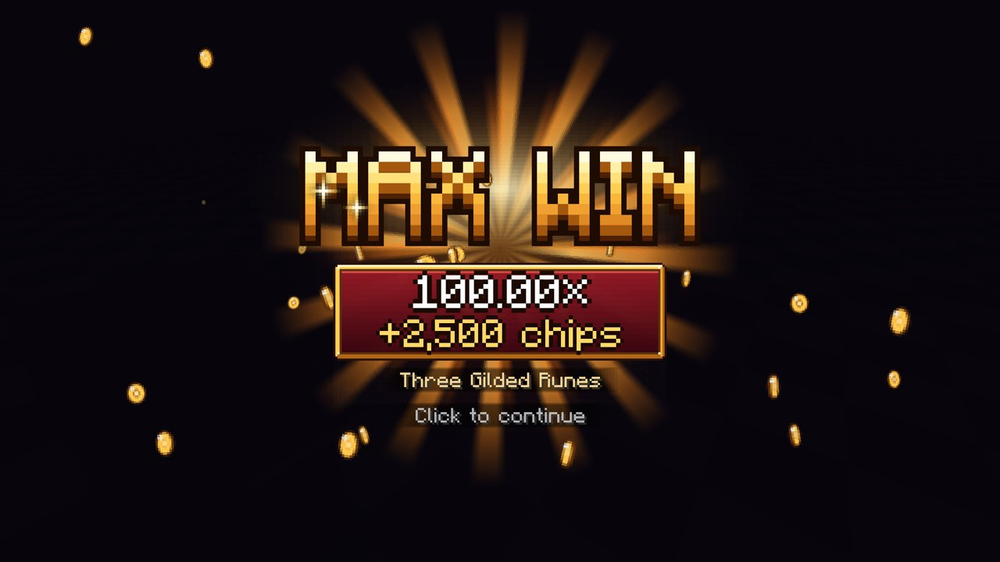
Three Gilded Runes.
Warriors: full swings hit harder
Since 1.10.3 an early swing lands far less. Now the wait pays a Warrior back: his full swing deals 40% more, and so
does his sweep. Swing early and the bonus shrinks with the charge, to next to nothing on a spam click. It counts
against players too.
Smaller changes
- A tree standing just outside a working site's fence, where the site's ground kept anyone from cutting it, blocked
Fallow's crop-field gate. It's gone, and a site placed from now on clears its own edge.
Arcana 1.10.5
Released October 2026. Your launcher updates you when you reconnect.
A playtest mission: The Tower
The first chapter of a new kind of story — played as a crew, start to finish, in one sitting. Find Signaller Tamsin
Rook on Asteryn's Copper Square and ask about the tower. Party members nearby come with you; anyone further off gets
a link in chat to join.
- Climb the signal tower on the ridge, relight its beacon, and hold the top until the signal goes out. Someone is
listening when it does.
- If the whole crew goes down, it's Mission failed: you're back at the last checkpoint at once, and a death inside
the mission costs you nothing.
- Everyone who finishes is paid in coin and experience and takes home Tamsin's Signal Horn.
- A cutscene skips only when everyone watching it asks to; the screen shows who has.
- It's a playtest: open to every level, replayable, and it doesn't touch your story progress. Tell us what you think.
Mini bosses
Five named creatures now hold a lair each, one to a country: Old Blindhand in the Ironback Deeps, Mother Harrow
on the High Meadow, the Bellwrack of the Sunken Holt, the Hoarwarden on the Snowline and the Scrivener at
the edge of the Grey Fold. Each has a move of its own, warned before it lands — walk out of it. Their name is on the
bar. Everyone who fought one is paid a purse of coin and its country's rare materials, on top of the usual kill. One
that falls stands again 30 minutes later.
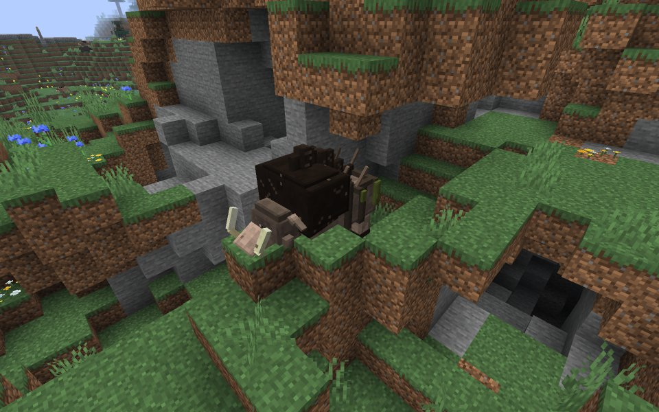
Mother Harrow on the High Meadow.
Boss fights: a job for archers and mages
In their second phase the story's bosses call a Herald onto the top of their arena wall. While it stands, a tether
mends the boss. Nobody can climb up to it, and it shrugs off most of a sword's blow: shoot it down, or burn it with a
spell. In the last phase a swarm of small things rises and drifts to the boss to mend it, and the boss's guard
holds while any of them stands — a Mage's area spell clears the pack.
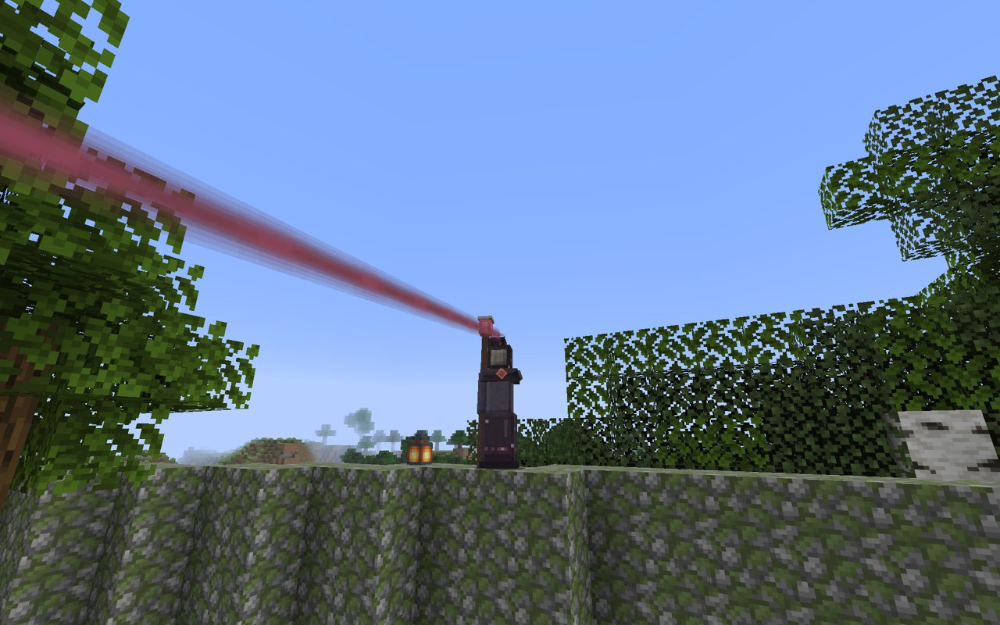
A Herald on Hallowhorn's wall, tethered to the boss.
Frost freezes
Frost now locks what it hits in ice for 3 seconds: it can't move, turn or fight. The next Mage spell on it deals
two and a half times its damage and shatters the ice. Bosses are never frozen but take the same bonus; a player
hit by Frost is slowed for 3 seconds and marked. After a cast that catches anything, Frost waits 5 seconds; into water
or lava, still 1.5. The Shatter passive is retired — if you had points in it, you get them back when you log in.
Iron and leather for every town
The island never ran short of iron: the workshops were turning all of it into goods nobody ordered. Workshops now make
to what the towns ask for. The mine digs twice the iron it did, and the pens give a hide every second bale, so smiths
have stock for the forge again.
Smaller changes
- Working sites use the mod's own props — steel pipes, oil drums, crane hooks, a two-by-two millstone, saw benches —
and the mill, the still house and the mine are rebuilt. The metal props can be crafted from steel.
- The practice dummy has a head now: an arrow in its hay bale is a headshot, and the panel lists headshots on
their own line.
- Heavy dead have twice a normal body's health, not three times.
- Early swings — before your attack bar is full — do much less, on a steep curve, so a full swing is always worth
waiting for.
- The HUD shows a spell's real cooldown when it changes.
- Shops fit every screen size, and a keeper who only sells services no longer shows an empty basket. The Bank,
Slots and Dice screens' headers fit.
- Cutscenes: the cameras no longer clip into walls or trees, and every scene is re-shot for the ground it plays on.
- A slow server no longer kicks you for sending your map.
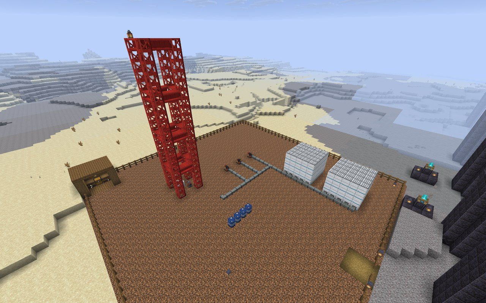
Nought's oil well: the derrick, the pump jacks piped to the main line, the tanks and the drums.
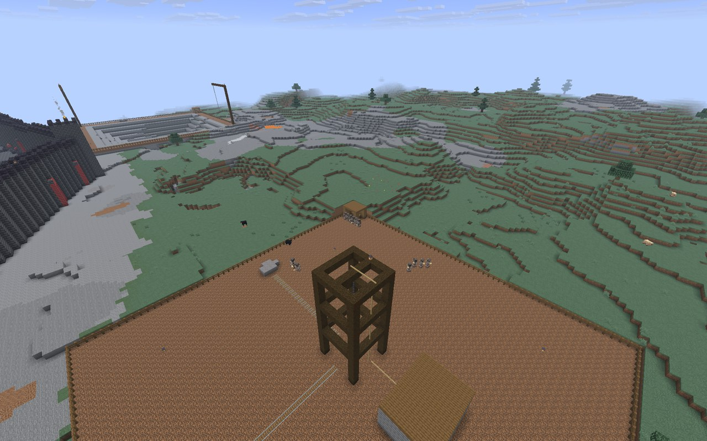
Greave's mine, rebuilt: the headframe and its winding rope.
Arcana 1.10.4.3
Released October 2026. Your launcher updates you when you reconnect.
The dead stay out of the casino
The casino's ward was never in the server's build, so the dead could spawn at its door and walk onto the floor. They
can no longer spawn on the casino's grounds, path into it, or wander in with a horde.
Crash shows the auto cash-out you hold
The Crash table now says which auto cash-out your bet holds. A choice you have changed but not sent is lit amber, with
a button to set it (or turn auto off). Every round and every cash-out is written to the server's log, so a disputed
round can be looked up.
Hester walks to the Thing in the Fold
Hester's escort stalled for good once the Thing's respawn timer passed midnight. She now waits only while the Thing is
actually standing, and the Thing is held down while she walks. Its bell cannot be rung during the walk: nothing is
charged, and you can ring once the walk is over.
Arcana 1.10.4.2
Released October 2026. Your launcher updates you when you reconnect.
Repairs never close
The island still made too little iron for every smith to keep a reserve, so repairs stayed shut. A repair no longer
closes for a shortage: a smith always mends your gear. The forge, reforging and tempering still need iron in the town's
store. Feeding every town enough iron and leather comes in the next update.
Buy back all, even after many deaths
Buy back all at the Gleaners refused with "make room" when your losses were more stacks than an empty pack holds. It
now buys back what fits, charges only for that, and keeps the rest waiting for you.
Arcana 1.10.4.1
Released October 2026. Your launcher updates you when you reconnect.
No more endless rain
On a storm day at sea, the sky over the island was set to thunder. With the weather held still on the server, that
storm never ended, and a restart started it again. The sky is now left alone; ships at sea still meet their storms.
Arcana 1.10.4
Released October 2026. Your launcher updates you when you reconnect.
Repairs open again
Repairs had closed in every town: the workshops were using up all the iron, coal and leather, so the smiths had none
left to mend with. Now every town's smiths keep a reserve of each for repairs. The workshops, the shelves and the
town's orders spend only what is above that reserve, and every town orders enough to keep it full.
Your own banker is the Ledger
A hired banker now opens the same bank as Cassia Ratio's in Nought: the same account, the same balance, and the same
screen with deposit and withdraw. Whatever you had in your banker's vault has been added to your Ledger account, once.
Arcana 1.10.3
Released October 2026. Your launcher updates you when you reconnect.
Full swings, not spam
A melee swing made before your attack bar is full now lands far less: its damage is cut by how charged it was, bonuses
included. Clicking fast never beats waiting for the full swing. Momentum and the Arming Sword's Tempo build only on
full swings.
The dead: less Armor, much more Magic Resist
- Armor comes down to twice a creature's of their level (it was three times), so full swings cut through.
- Magic Resist goes up to fifteen times a creature's. A well-geared Mage now takes about three Arcane Bolts to
kill one of the dead at their own level, and a Gravity Well gathers them rather than wiping them out.
Arcana 1.10.2
Released October 2026. Your launcher updates you when you reconnect.
The dead's health, fixed
1.10.1 gave the dead 25 times the health it meant to: a level-18 body read 23,750 on its bar. Now it reads what was
intended, 525 at level 1, rising by 25 a level to 1,000 at level 20 (a heavy one three times that), about what they
had in 1.10.0. They stay rare, and each still pays about four times as much.
Less armour on the dead
The dead now have 3 times the Armor of a creature their level, down from 5 times. Their Magic Resist is unchanged.
Arcana 1.10.1
Released October 2026. Your launcher updates you when you reconnect.
Blackjack is a shared table
- Up to five players sit at one table against one dealer. Click the croupier or the table to take the first open
seat; a full table lets you watch.
- Bets are open for 8 seconds from the first bet, or until everyone seated has bet, so a player alone is dealt at
once, as before.
- One dealer hand for everyone. You each play your own hand in turn, with 20 seconds to act; a player who doesn't
act stands. Then the dealer plays once and every hand is settled against it. The rules and payouts are unchanged.
- Every seat on one screen: each player's name, stake and cards, whose turn it is and their clock.
- Leaving (closing the screen, walking away or logging out) gets you up. Chips you put down before the deal come
back; a hand already in play stands and is paid when the dealer plays, even if you have gone.
The dead: five means five
1.10 promised you would rarely see more than five of the dead at once outside a blood moon, but several hordes could
still close on one player, a noise or a lived-in home drew every horde in range, and hordes saved before 1.10 stood
back up at their old size.
- No more than five come for you on an ordinary night, from any number of hordes. A noise or a home draws three
at most.
- Old hordes come back as three.
- If more than five still end up around you, the farthest simply go — no fight, no loot.
- The dead are far rarer. Each has about 525 health at level 1, rising to 1,000 at level 20 (a
heavy one three times that); their armour is unchanged. An ordinary night brings about a quarter as many, and a
horde is three at most — expect the odd one, or a small group of two or three.
- Each one pays about four times as much — XP, coin and whatever it drops — so a night's haul is about what it was.
- Blood moons, story fights, lairs and tower raids keep their numbers and their pay.
Selling to towns
- The towns buy at most 500 coin of any one good from one player a day (the day turns at midnight UTC). The
counter tells you how much you've sold and when it takes more.
Arcana 1.10 — Towns That Work
Released October 2026. Your launcher updates you when you reconnect.
Every loaf, every log and every iron ingot on a counter now comes from somewhere you can walk to.
Until now a town's shelves refilled by themselves overnight. From 1.10 they do not. Each town digs, cuts, grows and
makes its own goods, carries them between towns by lorry and ship, and sells you only what it actually has. A
town that runs short charges more, pays more, and in the end closes the services that depend on what it lacks, until a
delivery lands. You can help: sell it what it needs, carry its crates, and keep the roads and the sea open.
How it all fits together
Every good on a counter has a journey, and everything that happens along the way shows up in the price you pay and
in what a town can do for you.
- It is gathered. A town's working sites dig, cut, grow and fish raw goods into its store. Players can sell raw
goods into the store too.
- It is made. The workshops inside the walls turn raw goods into what the counters sell. A workshop with nothing
to work with stands idle, so a town short of coal soon runs short of ingots too.
- It is carried. What a town does not make comes by lorry along the roads, or by ship from port to port, and
every truck and ship burns Nought's diesel. A storm that sinks a ship, the dead taking a lorry on a dark stretch of road, or a town out of
diesel means the delivery comes late, comes smaller, or does not come at all.
- It is priced. Each counter watches its own shelf. A good running low or selling fast costs more, and the
counter pays you more for it too; a full shelf costs less. So a shortage in one town is a chance to earn: bring it
what it lacks and it pays you well for it.
- It keeps the town running. Services depend on goods. A town with none of something for a whole day closes
every service that needs it — no iron, no forge; no bread, no inn — until a delivery lands.
So the island is one chain. The ports keep the sea legs moving, the roads keep the lorries moving, and Nought's oil
keeps both fuelled. Break a link and prices climb, then doors close, one town after another. Carrying crates, salvaging
wrecks and selling towns what they need keeps every link whole.
Towns that work
Every town has working sites outside its walls. They are fenced places with their own workers, who really dig,
cut, pick, shear and tend the blocks inside the fence, and what they gather goes straight into the town's store. The
blocks grow back or refill, and the workers carry on while you are away: an empty site keeps counting its work and
the blocks catch up when you come back.
| Town |
Its big site |
Its other sites |
| Greave |
a quarry (a terraced pit with two cranes) and a mine (a headframe over a shaft 24 blocks deep) |
— |
| Fallow |
the crop fields (fourteen beds of wheat between water channels, and a windmill) |
a lumber yard, an orchard, a reed marsh, a livestock pen |
| Nought |
the fishery (a yard on the shore and three piers out to sea) |
an oil well |
| Asteryn |
its own pale-stone quarry, with a gantry over the pit |
the herb terraces |
- Sites are safe ground. Nothing hostile spawns inside one, the dead treat its fence as a wall, and a hostile
creature that wanders in is walked back out. Nothing hostile can hurt you while you stand inside. Like a town, you
cannot build or break there.
- Go and look. Every site is a short walk from its town's gate. Click a worker to hear what the site is doing:
how much is ready to work, or that the day's work is done.
Every town has workshops inside its walls, on what used to be empty paving: Fallow's mill, bakehouse, sawmill,
tannery and fletchery; Greave's forge, charcoal kilns and masons' yard; Nought's gutting house, lamp works, ropewalk,
sail loft, still house and whetstone shop; Asteryn's alembic house, bindery, fitting shop, glassworks and masons' yard.
Each town also has a storehouse and a goods depot by its gate.
- Each workshop turns the store's raw goods into what the counters sell: wheat into bread, logs into planks and
sticks, iron ore and coal into ingots, crude oil into diesel.
- Its two workers are only busy when there is something to work with. If a workshop's hands stand idle, click
one and they tell you what the store is short of, for example "Idle: the store is short of Coal, and nothing is
made until it comes in."
Goods that travel
A town only makes some things. Everything else is carried to it from another town, as a real lorry or ship that you
can meet on the road or at sea. When no player is near, the delivery still runs on its schedule.
- Lorries replace the wagons on the four roads to the Crossmark Halt, and carry goods from the harbours to Greave,
Fallow and Asteryn.
- Fuel tankers carry diesel from the harbours to Greave and Asteryn.
- Livestock trucks run beside the lorries on the roads to the Halt, carrying animals from Fallow's pen to the
other towns.
- Ships sail between the ports, one on each sea leg. Motor cargo ships — steel hulls, a bridge aft, a smoking
funnel and a bow wave — run the main legs; oil tankers sail beside them on the two diesel legs, from Nought to
Asteryn Harbour and from Porthold to the West Harbour; and the sailing ship keeps the short crossing from Nought
to Porthold. Nought's old lighter is retired.
Trucks and ships burn diesel. Every departure burns diesel from its home town's store: 8 for a lorry or a tanker,
6 for a livestock truck, 32 for the sailing ship, 48 for a motor cargo ship and 64 for an oil tanker. Diesel is made
only at Nought's still, from the crude oil of Nought's well. If a town runs out of diesel, its tankers, livestock
trucks and ships stay home until a delivery brings more — and its lorries go out as donkey wagons instead: a big
wagon pulled by a donkey, slower than the old ox wagon and carrying half what a lorry does.
Driving a crate pays more. Hauling a crate for the carriers' post works as before. If you carry it in a vehicle,
you get a bigger crate for the same fee: twice the size in a cart, three times in a traction engine, four times in a
lorry.
Ports, outposts and the sea
There are seven ports on the island now, all joined to their towns by real roads.
| Port |
What it is |
Serves |
| The West Harbour |
a harbour |
Greave and Fallow |
| Asteryn Harbour |
a harbour |
Asteryn |
| Nought's Port |
a town's port |
Nought |
| Porthold Port |
a town's port |
Porthold |
| Alghero |
an outpost |
Greave: a fishery |
| Olbia |
an outpost |
Fallow: a lumber yard |
| Cagliari |
an outpost |
Fallow: a reed marsh |
- The two harbours and the two town ports are container terminals: a long concrete quay on deep water with
ship-to-shore gantry cranes (three at a harbour, two at a town port), stacks of coloured containers, warehouse sheds,
a truck gate and lamps. When a ship is in port and you are near, she lies alongside the quay as a real ship of blocks
that you can walk aboard, and the gantries lift containers between her hold and the trucks waiting under them.
- The outposts are smaller: a pier with one crane, huts and a goods shed.
- Every port has dockhands and a stable hand.
- The outposts work for their towns. Each one works a site of its own beside the shore, and what it gathers goes
to the town that owns it: Alghero's fish to Greave, Olbia's timber to Fallow and Cagliari's marsh goods to Fallow.
A ship carries it home.
- New roads. Each harbour and outpost has a paved road to its town: the West Harbour to Greave and to Fallow,
the Quay Road from Asteryn Harbour, and the Alghero, Olbia and Cagliari roads. Olbia's and Cagliari's are long
roads across the island.
Storms at sea
About one day in sixty is a storm day. You will know it: the sky turns to thunder. A ship at sea on a storm day
may be wrecked, and a long crossing is in more danger than a short one.
- A wreck washes up on the shore nearest to where the ship sank. The town crier tells everyone which ship went
down and where its wreck lies: how far and in which direction from the nearest place, and its coordinates.
- Salvage it. Every sealed crate you pull out of a wreck pays you the carrier's fee at any carriers' yard or at
the Crossmark Halt, and its goods go on to the town that was waiting for them.
- Be quick. A wreck lasts three days. After that, the weather takes what is left.
Send your mount by sea or by truck
You can now send your own horse, donkey, mule, camel or llama to another town.
- Ride it up to a stable hand. There is one at every port, at every town's carriers' yard and at the Crossmark
Halt.
- Click her. She lists every place a ship or a livestock truck from here can take your mount. Press [Send].
It costs 10 coin.
- Collect it. When it arrives, go to the stable hand at that end and press [Collect]. Your mount comes back
exactly as it left, with its saddle, its chest and its name.
- Click any stable hand to see where your mounts are: waiting to leave, on the way, or stabled at the far end.
- If the ship is wrecked with your mount aboard, you are told. Salvage the wreck before it is gone and your mount
goes on to where it was going. If nobody salvages it in time, your mount is lost.
Prices that move
Prices now follow each town's shelves. A good that is running low or selling fast costs more. A good that fills its
shelf or that players keep selling to the town costs less. Each counter moves on its own, and the change wears off by
half every real-world day, offline hours included.
- A price never falls below half its usual level and never rises above 1.6 times it.
- The counter tells you why. When a price has moved by 5% or more, its card says so, for example "▲ 12% — the
shelf is low". The four reasons are: the shelf is low, the shelf is full, it has been selling fast, and people have
been selling a lot of it here.
- What a counter pays you for goods moves the same way, and the "Wanted here" list shows ▲ or ▼ beside it.
Only the goods a town makes or carries move. Services, lessons, deeds and the like keep their prices.
Selling to towns
You can now sell raw goods to a town for its store. Each raw good has one buyer: the counter in the town that
produces it.
| Town |
Who buys |
What they buy |
| Fallow |
the timber yard |
oak, birch, spruce and mangrove logs |
|
Reed and Orchard |
apples, sugar cane, clay, mud and lily pads |
|
the tannery |
leather, white wool, feathers and eggs |
| Greave |
the Deepway stores |
coal, deepslate, amethyst and more from the mine |
|
the stone yard |
andesite, gravel and flint |
| Asteryn |
the masons |
cobblestone (Asteryn turns it into dressed and smooth stone) |
| Nought |
the quay |
cod, kelp, ink sacs and glow ink sacs |
|
the reef |
coral, sponges, sea pickles, prismarine shards, nautilus shells and tropical fish |
- A town pays 90% of what it charges for the same goods and keeps the other 10%. What it pays follows its own
shelf price, so it pays less when players have been selling it a lot. It never pays more than its shelf price on a full
shelf, so you cannot buy and sell back at the same counter for a profit.
- Each line has a daily limit: a counter takes at most 8 lots of a good a day.
- The coin comes out of the town's treasury, never from nowhere. If the treasury is too low to pay, the counter
says so and takes nothing. The treasury fills up again from everything the town sells.
- Livestock and crude oil cannot be sold by players.
Shortages close services
A town that has had none of something in its store for a whole Minecraft day shuts every service that needs it,
until a delivery lands. The keeper tells you exactly what is missing, for example "I can't do that today — Fallow has
had no Iron Ingot in its store for a whole day. Once a delivery lands I'm open again."
| Service |
Needs |
| Forge repair |
iron ingots, coal and leather |
| Reforge, forging, upgrades and the armour tempers |
iron ingots and coal |
| Inn rooms and rent |
bread and cooked cod |
| Road crews (Greave) |
gravel, cobblestone, diesel, oak planks and gunpowder |
| Hiring a hand |
bread and healing potions |
| Enchanting |
scrivener's ink |
| Respec |
mana potions |
| Widening a quiver |
leather and string |
| A crew reinforcing or restoring a home |
cobblestone and coal |
Hired booths and the villa's engineer now sell out of the nearest town's store, so they can run short too.
Every town needs the others
No town can keep its services open on its own. Each one is the only maker of something every other town needs, and
each one needs goods from at least two other towns.
| Town |
The only source of |
Needs from |
| Greave |
iron ingots and coal for every forge, and all plain stone |
Fallow (bread, timber, leather), Nought (cooked cod, diesel), Asteryn (healing potions, gunpowder) |
| Fallow |
bread for every inn and every hire, all timber, and all leather for every forge's repairs |
Greave (iron, coal), Nought (cooked cod, string for quiver widening), Asteryn (healing potions) |
| Nought |
cooked cod for every inn, diesel for every truck and ship, and string |
Greave (iron, coal), Fallow (bread, leather), Asteryn (healing potions) |
| Asteryn |
every potion and magical herb, gunpowder for Greave's road crews, and glass |
Greave (iron, coal, cobblestone), Fallow (bread, leather), Nought (cooked cod, ink sacs) |
Each town has its trade:
- Fallow is farms and forests: the island's only timber (logs, planks, sticks) and its only leather. Every forge needs leather to repair armour, and Greave's road crews need planks.
- Asteryn is the town of magic and science: the magical herbs, every potion, glass, and now gunpowder, made at the Alembic from saltpetre and brimstone dug out of Asteryn's own quarry and charcoal from Greave. Asteryn also makes the smoke pot now (it used to come from Nought), out of gunpowder and clay. Greave's road crews use the gunpowder to blast their way through rock.
- Greave is mining, metal and stone: iron, coal, and from 1.10 all the island's plain cobblestone.
- Nought is the sea: fish, coral, cooked cod, string and diesel.
So when the sea is stormy or the roads are cut, you will feel it in the next town. When you carry crates, salvage a
wreck or sell a town what it is short of, you keep the others open too.
Fittings
Steel, Nought and silicon fittings are now made in town workshops, so the counters that sell them can run short.
You can also craft them yourself: the recipes are in the Engineer's Guide. Crafting a fitting needs the same lesson
as buying one: if you have not been taught it, the crafting grid stays empty and tells you who teaches it and where.
The brass fitting is still open to everyone, as before.
The dead: tougher, and fewer
The dead were still far too many. From 1.10 each one is much harder to kill, and you will very rarely see more than
five at once.
- Tougher. Each of the dead has 3 times the health, 5 times the Armor and 3 times the Magic Resist it had. At
level 1 a body is about three times as hard to kill; at level 20 about five times.
- Five at most. Outside a blood moon, no horde grows past five, and no more than five of the dead come for one
player at a time. A noise or a moan draws the nearest few and no more.
- Blood moons are still big, but a little smaller than before: the crowd near you is twice an ordinary night's
(4 to 10) instead of three times. Watchtower raids shrink with it.
- Fights placed by the story and the lairs have a quarter of the bodies they had, so the effort stays about the
same. The heavies stay: every wave that had a heavy still has one, with at least one more beside it. A lair's pack is
now 2 or 3 of the dead and its Warden.
- They pay more. A kill of the dead pays 1.75 times the experience it did, and twice the coin (4 coin instead of
2).
Also changed
- A ship's storm wreck is named where it lies, on the shore, so you never have to search open water for it.
- Outposts' sites pay their owner town.
Not yet
- Defending the routes against the dead is not a job yet.
- Livestock and crude oil cannot be sold by players.
1.10 in short
- Towns that work — every town has fenced working sites outside its walls and workshops inside them, with workers
who really dig, cut, grow and make what the counters sell. Shelves no longer refill by themselves.
- Goods that travel — lorries, fuel tankers, livestock trucks, motor cargo ships, oil tankers and a sailing ship
carry goods between towns. They burn Nought's diesel; a town without any sends its lorries out as donkey wagons.
- Seven ports — four container terminals with gantry cranes and three outposts that work for their towns, all
joined to their towns by new roads.
- Storms — about one day in sixty, a ship may be wrecked. Its wreck washes ashore, the crier says where, and you
have three days to salvage it for pay.
- Send your mount — 10 coin at any stable hand to send your horse by ship or truck.
- Prices move — scarce goods cost more and plentiful ones less, and the counter tells you why.
- Sell raw goods to towns — for 90% of what they charge, paid from the town's treasury.
- Shortages close services — a day without iron closes the forge, a day without bread closes the inn.
- Every town needs the others — keep the roads and the sea open and every town stays open.
- The dead — three to five times tougher, five at most outside a blood moon, a quarter as many in placed fights,
and better pay.
Arcana 1.9.4
Released October 2026. Your launcher updates you when you reconnect.
Armour, reworked
- Every tier steps up plainly. Armour toughness is gone, and its worth is folded into the armour number itself, so
hide, iron, steel, diamond and netherite now climb in clear steps and each tier sits above every plate of the tier
below. A diamond cuirass reads +56 against iron's +32. No piece protects less than it did before.
- Boss plates sit above the best forged netherite.
- The Blessings of Fortitude and Ironhide give armour in place of their toughness.
- Armour you already own updates itself when you join or put it on.
Cheaper mending
A repair at the forge now takes one of the item's material at most, for armour and weapons alike, however worn it
is. The coin still grows with the item's tier and upgrades.
Arcana 1.9.3
Released October 2026. Your launcher updates you when you reconnect.
The Gilded Rune: nine new games
The casino has grown. A stage now fills the back wall of the arena, an arcade runs down each side of it, and a card
room has opened at the west front. Pay the Doorman as before, then find a game.
On the stage, everyone together
- Crash — a multiplier climbs on the big board for everyone at once, until it crashes. Cash out before it does, or
set an auto cash-out. Watch the other players bail out along the curve.
- The Wheel — a giant money wheel on each side of the stage. Bet on a segment from 2× up to the Gilded Rune's 40×,
and watch the pointer tick past the pegs.
Bet at the desks along the gallery rail.
In the arcades
- Plinko — drop balls through the pegs into the slots below. Pick 8, 12 or 16 rows and your risk, and drop as many
balls as you like.
- Limbo — pick a target multiplier, and win if the number climbs past it.
- Keno — mark up to ten of forty numbers and watch ten get drawn.
- Mines — dig a 5×5 board for gems, choosing how many mines hide in it. Every gem raises your pay; hit a mine and
it's gone. Cash out whenever you like.
- Dragon Tower — climb toward the dragon, picking one egg per row. Every row raises your pay; pick a cursed egg and
it's gone. Choose your difficulty.
In the card room
- Baccarat — bet on Player, Banker or Tie with the croupier. Wins pay 1 to 1, a Tie pays 9 to 1, and a Banker win
on a three-card seven, the Gilded Seven, is a push.
- Hi-Lo — call whether the next card is higher or the same, or lower or the same, and cash out whenever you like.
Odd coins. When a pay isn't a whole number of coins, you get the whole coins plus a chance at one more, shown
before you cash out.
Big wins of 1,000 coin or more are announced to everyone in the casino, in every game.
Rune slots, polished
The slot cabinets have been rebuilt: chasing lights, a lever to pull, reels that stop one by one, and the third reel
holding on with a rising hum when a big win is one rune away. Wins are celebrated by size, up to a full jackpot
fanfare, and a big win rings the cabinet's bell for everyone nearby. The cabinets also keep a tally of what you've won
this visit. The pays haven't changed.
Fixes
- Snow — you no longer sink into powder snow or freeze in it, with or without boots.
- Hand crank — the hand crank now makes enough power to run the electric furnace by hand: about one item a minute,
so the engineering lesson can be finished with a crank or a water wheel.
- Rimecowls and Furrowtusks now come out by day as well as by night.
- Gleaners in Greave, Fallow and Nought no longer stand inside the town's herald, so you can click them again.
Arcana 1.9.2
Released October 2026. Your launcher updates you when you reconnect.
The Gilded Rune: three new games
The casino is still under construction, but the pit is open. Pay the Doorman as before, then walk up to a table.
- Roulette — right-click either wheel. Everyone at a wheel plays the same round, about every thirty seconds: place
chips on numbers, splits, corners, dozens, columns or colours, then watch the ball run. A number straight up pays 35
to 1. The wheel has a 0 and a gold Gilded Zero.
- Blackjack — talk to the croupier at the east table. Hit, stand, double or split. Blackjack pays 2 to 1, and the
dealer's 22 is a push.
- High-low dice — the west table. Bet the two dice come under seven, over seven, or on a lucky seven, or call a total
or doubles. Double six, the Gilded Pair, pays on every bet. Win, and Let it ride puts the whole pay on the next
throw.
Chips are 5, 25 and 100 coin.
Arcana 1.9.1
Released October 2026. Your launcher updates you when you reconnect.
Vanilla armour
- Vanilla armour no longer protects. A piece you still have gives no armour, toughness or knockback resistance, and
its tooltip says so. You can still wear it for the look. Forge real armour at any town's armoury.
- No more buyback at login. 1.9 bought back the vanilla armour players carried when they first logged in. That has
ended: a piece found in a chest now stays a piece of vanilla armour, and nothing pays for it.
Bosses
- What Walks on Kern — its wing buffet, which hits everyone around it, is now marked on the ground before it lands,
so you can step out of it; and the frost from the Rimecowls it calls holds you for at most a second, with its ring
drawn above the snow.
- Knockback is a shove, not a launch — every boss blow that knocks you back now pushes you the short distance it was
meant to, with your feet barely leaving the ground. Kern's buffet used to throw players about 12 blocks with no
control on the way; now it is 4.
Gear
- Upgrades stuck at 100% — 1.9 made upgrades cheaper, and a level you had already paid for under the old price could
sit at "100%" without counting. Those levels now finish by themselves when you log in, with a chat line for each.
- Bows and grips — a grip no longer gives a bow arrow range or shows it anywhere. How far an arrow flies comes from
the bow you build.
- Ward — its shield now refills at most once a second, however fast your weapon swings.
- Ability Haste is an upgrade — a Mage's focus and armour can now be upgraded with Ability Haste, up to 30 on a full
set (spells come back 23% sooner). Everywhere haste is shown, it now says how much shorter your cooldowns get.
- Part tooltips — a part that fits only one weapon now shows only what it does in that weapon.
The Gilded Rune
- The rune slots were retuned (already live since 1.9): about one spin in three now pays, mostly two to six times
your stake, and three Gilded Runes pay 100 times. Everyone's losses from the first evening were given back.
Arcana 1.9 — Conquer the Wilds
Released October 2026. Your launcher updates you when you reconnect.
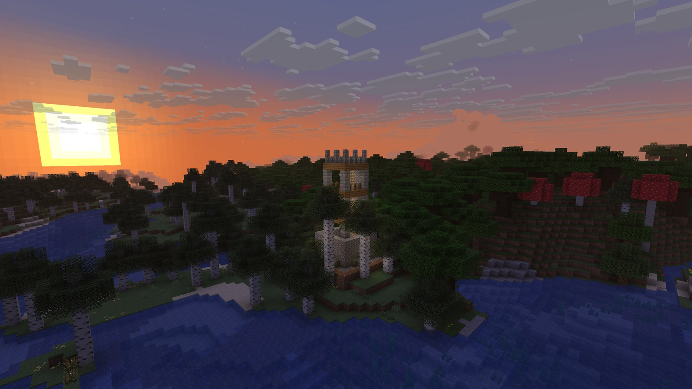
Take the land back from the dead, one tower at a time.
Watchtowers: conquering the wilds
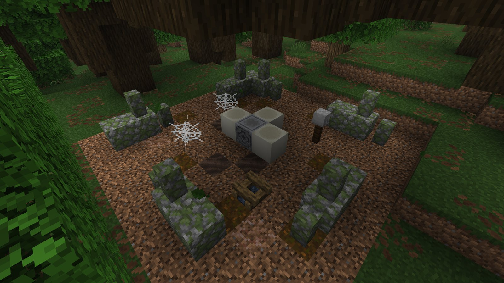
A lair, with its heart in the middle.
The dead hold the wild. Now you can take it back. All over the island there are lairs — about 37 of them, one in
roughly every 1,500 blocks of land. Clear a lair, raise a watchtower on it and defend it for one night, and the land
around it becomes safe: nothing hostile spawns inside its circle. Creatures can still wander in, but none appear
there. The safe land belongs to everybody on the server, and it shows on everyone's map.
How to find one. Every lair is drawn on the Chart for everybody, even under the fog, as a red ring. In the world,
a lair is eleven blocks of trampled, rotting ground, a broken ring of mossy rubble, a skull on a stake, and a
lodestone on a mound of bone. That lodestone is the heart.
How to conquer one.
- Clear it — come within 48 blocks of the heart and its dead stand up around it: a pack of 6 of the dead (one
more for every 10 levels of the land, up to 12) and their leader, the Lair Warden, 3 levels higher with four
times the health. Kill them all. The Warden drops a chest of loot and gear materials (iron, leather, copper, steel,
gold, diamonds, Deepwall Ingots and more). When the last one falls, the whole server is told who cleared it. A lair
you half-clear and walk away from stays half-cleared.
- Raise a watch post — right-click the heart. Its panel tells you what the post costs and what you carry. Press
the button and a Tower Mason appears and builds the tower in front of you, a block at a time.
- Hold it for one night — the first night after it stands, the dead come for the heart. Stay inside the circle
for at least half the night and keep them off the stone. The heart can take 60 points of wear, and every one of the
dead touching it wears a point a second. Four waves come. At dawn the tower holds, and the land within 100
blocks is safe. If nobody stood watch long enough but the heart survived, it simply has to hold the next night
instead — it costs nothing but a day. If the heart is worn to nothing, the tower falls.
- Raise it higher — at the same panel, upgrade to a Watchtower and then a Keep Tower for a wider circle and
archers on top.
| Stage |
Safe within |
Stone |
Timber |
Coin |
Archers in a raid |
| Watch Post |
100 blocks |
96 |
48 |
50 |
— |
| Watchtower |
175 blocks |
192 |
96 |
100 |
2 |
| Keep Tower |
250 blocks |
384 |
160 |
200 |
4 |
Stone is cobblestone, cobbled deepslate or blackstone. Timber is any logs or planks. Both come out of your
pack, Backpack or Smith's Roll, and the coin out of your purse — all from the player who presses the button. Anyone
may raise or upgrade any tower. Nobody can break a tower's blocks or its heart.
Blood moon raids. On every blood moon, the dead march on one held tower, the same for everyone, and the whole
server is told which. Come and defend it. A Watch Post or a Watchtower that nobody defends until dawn falls: its
blocks are taken down, the lair comes back with its dead and its Warden, and its land is wild again. A Keep Tower
can hold a raid on its own with its four archers — but if all its archers are killed or its heart is broken, it falls
too.
What a tower does not do. It keeps hostile spawns out of its circle and nothing else: no walls, no healing, no fast
travel and no coin. The reward is the Warden's chest and the safety itself.
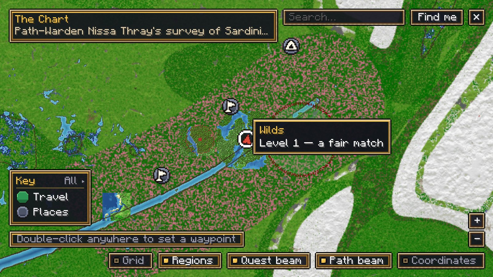
On the Chart: red is wild, amber is being built or on trial, green is safe, and dark red is tonight's raid.
One map for everybody
The Chart is now shared. When anybody walks new ground, the fog lifts there for every player within a second, and
the detailed terrain they have drawn arrives on your map a few seconds later. Places other players have found appear
on your map too, quietly, with no pop-up — walk up to one yourself and it becomes yours, with its usual toast.
- Your own record is still yours. Quest steps that ask you to find somewhere still need your own feet there, a
town's quest marks still appear only once you have visited that town, and waystones are still yours to bind.
- Waypoints can be set on any ground the Chart shows, whoever walked it.
- Your old map counts. Whatever you explored before 1.9 is added to the shared map the next time you log in. Your
first login may send a lot of map in the background for a few minutes.
- Every storyline quest gets a mark. While the three town admissions run at the same time, each one now has its
own green mark on the Chart, not just the one you are tracking.
- Pins follow the people they mark. If a shopkeeper moved since you found them (the Ledger's bank moved in 1.8),
your pin now points at where they stand today.
- Fair play. Your game uploads pictures of ground you have seen, and the server checks them against the real
world before keeping them, so nobody can paint a fake map.
Road crews
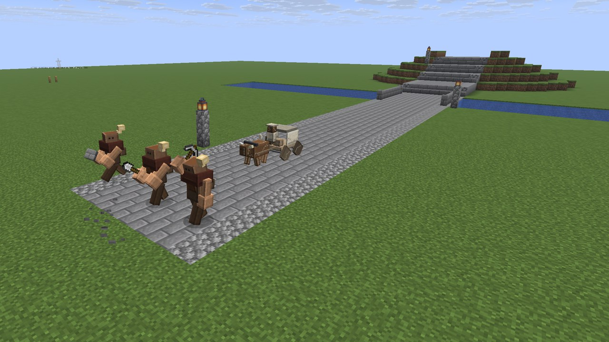
Greave's crew at work.
You can now pay for a road of your own, and watch it being built.
- Buy a Road Stake at Greave's stone yard, for 1 coin. One stake is one contract.
- Drive it in (right-click the ground) where the road should start, then walk to where it should end and drive
it in again. End it on an existing road (within 6 blocks of it) and the new road joins it.
- Read the quote. The road's line is drawn on the ground as a ghost, and a panel shows where it runs, which roads
it joins, how much is bridge or tunnel, how long the crew will take, and the price — for example "312 blocks of
road × 3 coin = 936 coin."
- Pay — and the crew sets out from Greave in a covered wagon, riding the existing roads to your first stake
(never more than 4 minutes). Three workers get down and lay the road toward the far stake, about two blocks a
second, cutting hills, filling dips, bridging water, clearing trees, and adding lamps and milestones, exactly as the
island's own roads are built. A 300-block road takes about two and a half minutes. When it is done you are told,
and the crew goes home.
- The price is the distance: 3 coin a block of road actually laid. A gap the road cannot cross is not charged.
A road is at least 8 blocks and at most 1,500 (4,500 coin); a longer road is two contracts.
- The coin goes to Greave's treasury, where it pays for that town's projects.
- It never builds over anything somebody built. If a player's block is in the way, the quote names it and where it
is: "Something somebody built is in the road's way … Stake it round." Stakes inside a town, on a home's ground or
on a protected site are refused. Only one crew can work in the same area at a time.
- The crew keeps working when you leave. Nobody has to watch.
- On the panel you can also start from the other end, pull the stakes up, or wait.
The Arcane Alembic: thirteen new potions
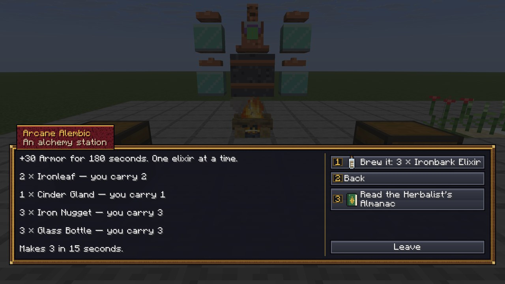
The Arcane Alembic and its panel.
The station. Build an Arcane Alembic — three blocks high, in one row:
- the bottom: a campfire, a soul campfire or a magma block in the middle;
- the middle: the Alchemist's Crucible on the fire, with an Essence Jar either side;
- the top: the Arcane Alembic on the crucible, with another Essence Jar either side.
All three are crafted. The alembic is a brewing stand, three copper ingots, two glass and an amethyst shard; the
crucible is a cauldron, two copper ingots and an amethyst shard; and seven glass and a copper ingot make two jars. Hold
a piece and a ghost shows you where the rest goes.
Brewing. Right-click the alembic. Pick a family, then a brew: the panel lists every ingredient against what you
carry, and for anything you are short of it tells you where it grows — for example "2 × Frostbell — you carry 0.
The Halstone Shelf — about 400 blocks north of Asteryn". A batch takes its ingredients and three empty bottles from
your pack, brews for 12 to 30 seconds, and gives you three bottles (the Reprieve gives two). If the alembic is broken,
nothing is lost: the ingredients or the finished brews drop out. Anyone in your household can use your alembic.
Draughts — each with its own rule:
- Draught of Deep Mending — heals 50% of your health over 20 seconds. It shares the Healing Potion's lock, so one
heal at a time.
- Reprieve Draught — for 5 minutes, the blow that would have killed you leaves you on 20% health instead. Once.
You can drink another 10 minutes after the last.
Elixirs — 3 minutes each, one at a time: drinking a new elixir pours the old one away, so you pick.
- Ironbark Elixir — +30 Armor.
- Wardwater Elixir — +30 Magic Resist.
- Elixir of Sorcery — +15% Ability Power and +15 Ability Haste.
- Wrath Elixir — +12% Attack Damage and 5% life steal.
- Hawkeye Elixir — +12% Bow Damage.
- Bloodthirst Elixir — 8% Omnivamp.
- Keen Edge Elixir — +15% Lethality and +15% Magic Penetration.
Tonics — 3 minutes each, and they work alongside an elixir.
- Brinewash Tonic — cures the dead's infection and venom, and for its length the dead's bites cannot infect you.
- Rimeguard Tonic — slows cannot hold you and the cold cannot freeze you.
- Cinderskin Tonic — fire cannot hurt you, and your melee blows set what they hit burning for 3 seconds.
- Glyphsight Draught — for 2 minutes, every hostile creature within 32 blocks glows through walls (everyone near
it sees the glow, not just you).
There is no instant heal among them, on purpose.
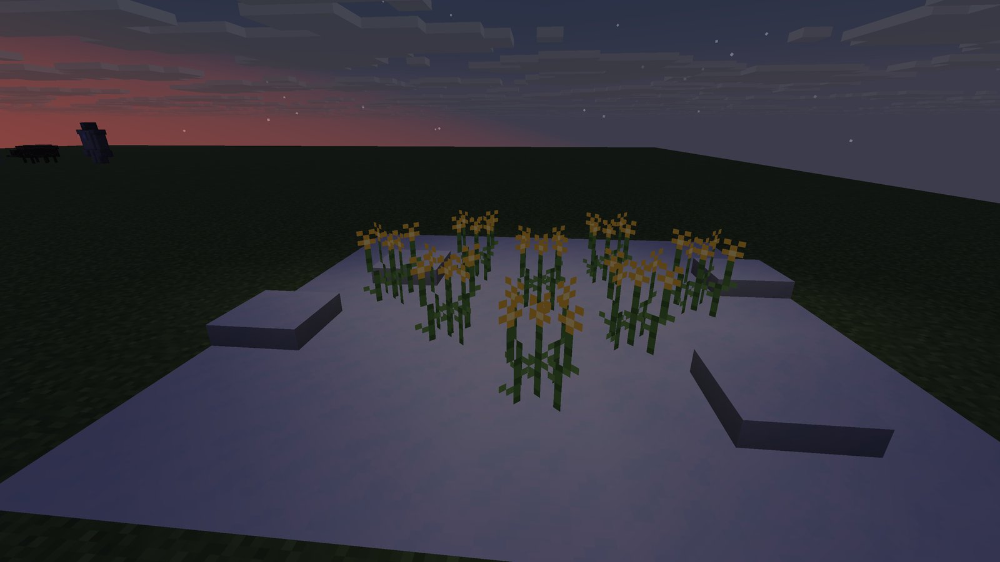
Rare plants grow only in their own places.
The rare plants. Nine herbs and mushrooms grow wild in twelve groves at named places, and nowhere else — they
have no seeds and cannot be farmed at home. A ripe plant gives one or two when you right-click it and grows back over
time; one you break grows back the next day. When anyone finds a grove, it appears on everyone's Chart.
| Plant |
Where it grows |
Near |
| Bloodroot |
the North Terraces, and the bank by the Aldwater Mill |
Fallow |
| Saltwort |
the Mistward strand, and the Nought Rise |
Nought |
| Frostbell |
the Halstone Shelf |
Asteryn |
| Ironleaf |
the Ironback Shelf, and around the Nurra Barrow |
Greave |
| Shrinemint |
the Stairhead Shrine |
the Crossmark |
| Pallid Cap (a mushroom) |
the edge of the Nurra Pan blight |
Greave |
| Hollowshade (a glowing mushroom) |
the edge of the Hollow Gate blight |
Asteryn |
| Kernbloom (glows) |
the Kern Shelf, under Kern Head |
the summit |
| Fenlily |
the Sunken Holt fen |
the far south |
The other ingredients are the new creatures' organs — Boar's Gall, Brine Gland, Rime Down, Cinder Gland, Glyph Dust
and the Truffler's Rootcap — Asteryn's three herbs, and a few common things.
The Herbalist's Almanac is the alembic's guidebook: every brew with its real numbers and its recipe, a 3D model of
the alembic, every herb with every grove it grows at and how far that is from the nearest town, and what each creature
carries. Craft it from a book and a glass bottle, buy it for 20 coin at Asteryn's Alembic, or open it from the alembic's
panel.
Hired Alchemists brew too. If you have hired an Alchemist, her panel now has The still: stock it with
ingredients and empty bottles from your pack, choose which brews to keep on, and she brews them onto a shelf (up to 64
of each). Anyone can buy a bottle from her at her price plus your markup, and you get all of it, because the herbs
were yours. You take your own potions for free. Let her go and she hands back the stock and the shelf.
Gunpowder: Brimstone and Saltpetre
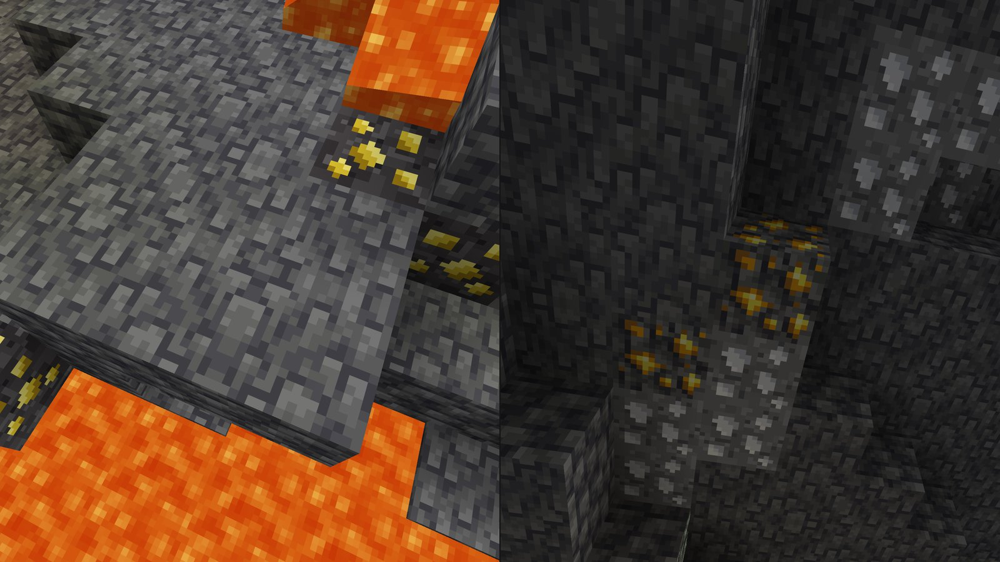
Brimstone deep down near lava, Saltpetre on cave walls.
Gunpowder had no source since the creepers left. Now it does: 1 charcoal, 1 Brimstone and 2 Saltpetre make 16
gunpowder at any crafting table. Gunpowder feeds turret cartridge belts, the lead-acid cell, TNT, rockets and more.
- Brimstone ore grows deep underground, from the bottom of the world up to Y 16, thickest around Y −24 where the lava
lakes are. It drops 2 to 4 Brimstone.
- Saltpetre ore grows in the walls of dripstone and lush caves. It drops 2 to 5 Saltpetre.
- Both break with any pickaxe, and Fortune and Silk Touch work as on vanilla ores.
- Where to look. Big veins grow in land nobody has explored yet. The land that already exists has been given
smaller veins, deep in the rock, away from towns, roads and homes. And there are four rich spots: Brimstone on the
Goce basalt shelf and in the Ironback Deeps, and Saltpetre on the dry cliffs of the Salt Scarp. The Engineer's
Manual explains all of it in its first chapter.
(Vanilla already has a block called Sulfur, so ours is called Brimstone.)
Eight new creatures
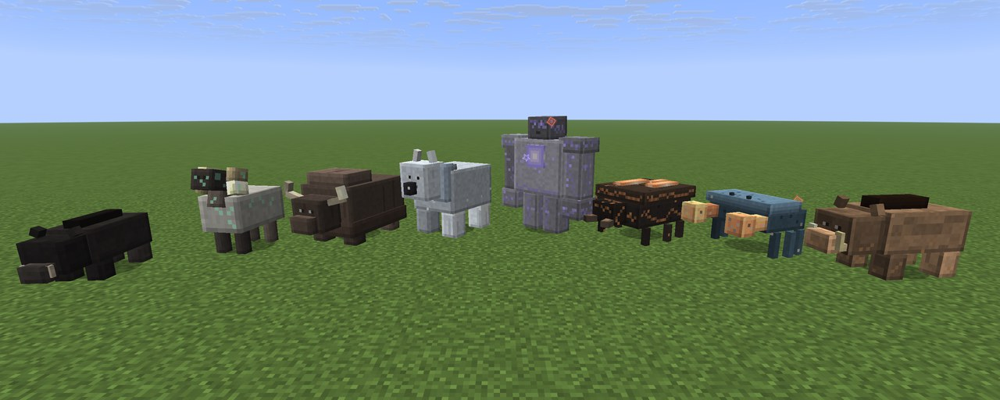
The new creatures of the island.
The old Arcana creatures are gone (see What happened to your things). In their place are three animals and five
hostiles. Each hostile has one move, and it always shows you that move — a pose and a shape drawn on the ground —
before it lands. Their hitboxes are generous on purpose.
Animals
- Fellox — a shaggy ox in herds of four, in Wend Meadow, meadows and by rivers. Brush one once a day for 2 Fell Wool.
Fell Wool and string make 4 bandages, which cure the infection. A brush is a Bristle, a copper ingot and a stick.
- Truffler — a hog in pairs, in old pine forest and dark forest. Once a day, while a player is within 24 blocks,
it roots in the ground for 3 seconds and leaves a Rootcap where it dug. Scare it and it simply digs again later.
- Cragram — a mountain ram on the cloudshelf and snowy slopes. It is neutral: hit it and it lowers its head, its
horns light up and a lane is drawn; then it charges once, 8 blocks, straight down that lane. It never chases.
Hostiles
- Furrowtusk (levels 1 to 8, Wend Meadow and the meadows around Fallow) — a boar. It paws the ground for a second
and charges down a drawn 12-block lane. Step aside with a wall or tree behind you: if it hits something solid it is
dazed for 2 seconds and takes half again as much damage.
- Wrackclaw (the Mistward Shoals, stony shores, beaches and the Sunken Holt) — a crab. Its shell takes only half
damage from the front, and its glowing soft back takes half again as much — it is also its weak spot. It turns
slowly, so circling it works. It raises a claw for a second, then pinches and throws you back.
- Rimecowl (alone, on the cloudshelf and snowy slopes) — an owl-bear. It rears up with a 3.5-block frost ring
drawn around it. Be inside when it lands and you are hit and slowed for 3 seconds. Then it is winded for 2
seconds, doing nothing — that is your opening.
- Smeltback (the Ironback Deeps, dripstone and lush caves) — a beetle with ore on its back. Hit it hard (a blow
worth 15% of its health) and a raw iron or copper breaks off, up to 3 per beetle. It spits slag where you stood:
a ring on the ground, then a puddle that slows but does not hurt.
- Sigilhulk (elite, levels 15 to 20, alone, in the blight and dark forest) — a rune-carved stone hulk. Its only
attack is a 4-block rune circle drawn around it for a second and a half, then a burst. After the burst its chest
sigil glows for 3 seconds and it takes double damage. It is slow and gives up past 24 blocks, so you can always
walk away. It has its own voice: stone grinding over a low rune hum.
Drops. Each hostile drops its own trophy, bought at a named counter: the Spiral Horn (Cragram) at Asteryn's
Alembic, the Furrow Tusk at Reed and Orchard in Fallow, the Shell Plate at the Tidewrack in Nought, the Rime
Pelt at the Fletchery in Fallow, the Seamed Carapace at the Deepway Stores in Greave, and the Rune Slab at the
Sheath in Nought. They also drop useful goods: meat, wool, raw ore, Coarse Hide (cure it in a smoker for leather), Crab
Meat, and the five organs the Arcane Alembic uses. Each says on its tooltip what it is for.
Upgrade reagents moved to them, at the same hourly rate as before, so nothing got harder to farm: the Horn-Tip to
the Fellox, the Strut Pin to the Cragram, the Last Bite to the Furrowtusk, the Maw Pearl and the Heron Heart (now
shown as the Wrack Heart) to the Wrackclaw, the Rime Pinion and the Wick Ember to the Rimecowl, the Plough Iron and
the Cairn Core to the Smeltback, and the Rune Chip, the Shade Glass and the Blight Marrow to the Sigilhulk. The Smith's
Manual says who drops what.
Quests and bosses. Every quest step that asked for an old creature now asks for the new one on the same hunting
ground, and kills of the old creature still count, so nobody loses progress. Bounties for old creatures were
withdrawn and posted again for the new ones. Bosses call the new creatures as helpers, one or two at a time: Hallowhorn a Furrowtusk, the
Tallyfog a Wrackclaw, She Who Salts the Ford two Wrackclaws, What Walks on Kern a Rimecowl, and the Sheerwall Warden,
the Pan's Own and the Thing in the Fold a Sigilhulk each (see Bosses: fewer adds, longer gaps).
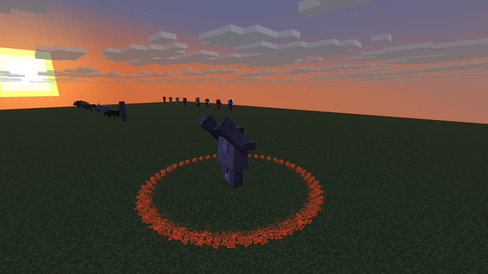
The Sigilhulk's burst. Wait for the glow.
An active ability for every class
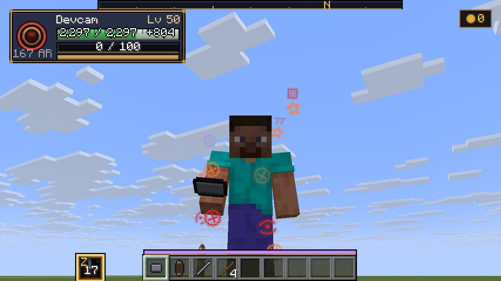
Berserk.
The Warrior, the Archer and the Assassin each get one active ability. Their forged weapons and passive trees are
still most of how they fight; the active is the one key they press. It is on Z by default (change it in Controls,
under Arcana: Class abilities), it works whatever you are holding, and it is already on your bar.
- Berserk (Warrior) — spends all your rage (you need at least 25) and for 6 seconds you swing up to 80% faster,
get up to +25% life steal on your melee, and gain a shield of up to 35% of your max health. All three scale with how
full your rage bar was: a full bar gives the full amount. Cooldown 20 seconds. Rage keeps coming in while it runs.
- Vault (Archer) — costs 40 focus. You leap about five blocks backwards, away from where you are looking, and
land without fall damage. The next arrow you loose within 3 seconds is a full-draw headshot wherever it lands —
your bar reads HEADSHOT READY and a gold glint shows at your bow hand. Cooldown 12 seconds. You must be on the
ground to use it. (Vault used to happen by itself when you jumped near an enemy; it no longer does.)
- Blade Flurry (Assassin) — costs 35 energy. For 4 seconds you strike 150% faster and your Wound stacks go 6
deep instead of 3. A kill during the flurry restarts it. Then press Z again — during the flurry or up to 3 seconds
after — to tear out every Wound within 10 blocks: each stack deals 3 plus 25% of your attack damage at once, and a
crimson thread runs from each target back to you. The tear-out is free. Cooldown 18 seconds from the tear-out, and if
the tear-out kills anything, you can flurry again almost at once.
- See the bleed — every creature now shows a drop of blood above its health bar for each Wound stack on it,
from anyone.
Ranks. Like the Mage's spells, each active has five ranks, bought with skill points in the new Abilities tab of
the Grimoire. Berserk gains 4.5% a rank on its speed, life steal and shield; Blade Flurry's tear-out gains 8% a rank; and
Vault's cooldown gets 6% shorter each rank (12 seconds down to about 9.4 at rank 5). On your screen, the active sits in
its own slot just left of the hotbar, with its key, its cooldown and its rank — no big bar for one ability. The points come from the same purse
as your passive trees, so it is a real choice. Everyone gets a free respec for this (see the end).
Growing past level 20
A skill point every level. You now earn a skill point at every level, all the way to the level cap — not just up
to 20. Characters already past 20 get the points they missed when they log in.
Nodes have ranks. A passive node you have learned can take more points: nodes that open at level 6 or earlier take
up to 2, later nodes up to 3. Rank 1 is the node exactly as it was, and every rank after it adds part of its effect
again: a quarter for the Archer and the Mage (rank 3 is ×1.5), a tenth for the Warrior and the Assassin, whose nodes
already hit harder for their cost (rank 3 is ×1.2). Ranks are open from the moment you learn the node, and the Grimoire shows pips
on each card and the button reads Raise for a node you already have. Every class can spend every point it has, at
every level — no more points sitting in your Grimoire with nowhere to go.
Your main stat keeps growing. Past level 20, each level makes your class's hit about 4% stronger, the same share for
every class: Attack Damage for Warriors and Assassins, Bow Damage for Archers and Ability Power for Mages.
Health grows a little too. Past 20 you gain about a third of the health a level that you gained from 1 to 20:
| Class |
Health a level, 1–20 |
Health a level, past 20 |
| Warrior |
2.21 |
0.74 |
| Archer |
1.58 |
0.52 |
| Assassin |
1.42 |
0.47 |
| Mage |
1.26 |
0.42 |
The Mage's ward grows with it. Everyone gets a free respec for all of this (see the end).
The Archer rework
Built from a player's detailed write-up on Discord. Thank you, Bishan.
Fixes
- A Steady Hand no longer breaks when you take a fall, burn, are poisoned or touch a cactus. Only a miss or a blow
from an enemy ends your run now. The arrow that kills now counts as part of the run (it never did). A miss is now
noticed the moment the arrow lands in the ground.
- Killshot never worked before. It does now.
- Sear did nothing to bosses, because bosses cannot burn. Sear is now its own magic burn of 1 damage a second, with
ember runes rising off the target, and it works on bosses and anything fire-proof. The kill is yours.
- Patience and Killshot's tooltips now say exactly what they do (Patience fills 1.5 times faster while still; Killshot
gives back half your focus).
The tree
- A Steady Hand — every arrow of a run now adds 0.4 bow damage to the next, up to 6 (+2.4 at the top — twice the old
bonus). A headshot counts as two arrows.
- Punch Through (was the Hard Loose) — your arrows pass through 1 more creature, and the one behind takes 70%.
- Exploit (was Rattle) — +4 bow damage on arrows into anything slowed, rooted or bleeding (venom, a Wound or a Sear
burn). It now follows Called Shot or Tumble.
- Hunter's Mark (new, level 14, under Fletcher) — a headshot marks a creature for 6 seconds, and it takes 8% more
damage from everyone. On a boss, only a hit on its weak spot marks it. It never marks players and draws a small rune,
not a glow.
- Tumble (new, level 1) — takes the old Vault node's place: Vault comes back in 60% of its cooldown, and its
headshot waits 5 seconds instead of 3.
Bows
- No bow part carries range any more — range bought nothing. Instead each limb now has a reason to choose it:
yew and laminate limbs add +5% to headshots, concord +10%, galder +15%; sinew, aldwater and kern limbs let arrows
pierce one more creature; and the pan stave makes pierced creatures take +20% more.
- Crossbow — the Heavy Bolt now goes through everything in its line, every creature after the first taking 50%.
It no longer slows.
- Warbow: Blood Draw (replaces Pierce) — hold past full draw and pay in blood for a bigger arrow: each second is a
step. Step 1 costs 10% of your max health for +60% damage, step 2 costs 20% for +130%, and step 3 costs 30% for
+220%. Hit, and you get the health back. Miss, and it is gone. It can never kill you. Three drops under your
crosshair show each step as you pay it.
- Blessings — Nightwise, The Lone Hand, Blood Up and Reckless now give Bow Damage too, at four fifths of their melee
bonus.
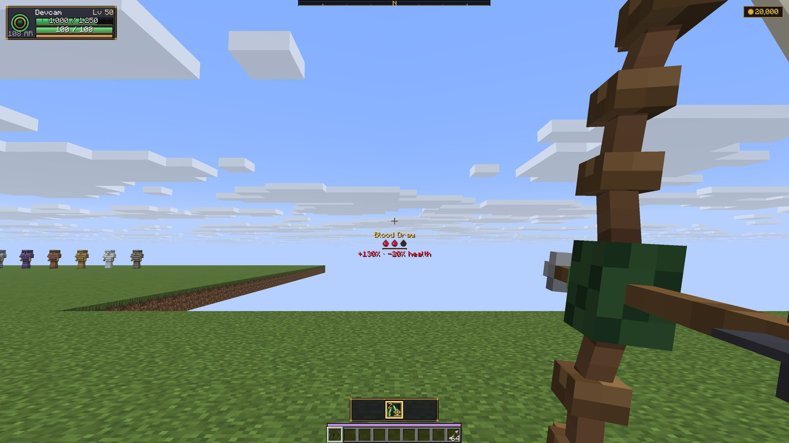
Blood Draw: more risk, more reward.
The Archer was the weakest class, so her balance limits were raised rather than her numbers lowered.
Armour, rebuilt
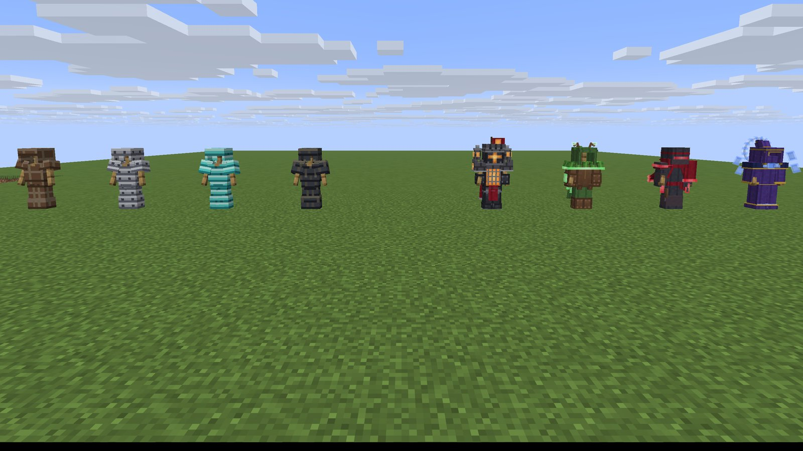
Forged armour in four materials, and class armour with each material's accent.
Vanilla armour is gone. It can no longer be crafted, found in chests, fished, bartered, traded or worn by mobs.
Every piece you had is bought back at its material value (see the end). Elytra and horse, wolf and nautilus armour are
not affected.
Forged armour is now every material. At any town's armoury, forge a helm, cuirass, legguards or sabatons from
parts — and the plate you choose is the material. Every plate is a little stronger than its vanilla equal (5% more
for a full set), and a little dearer to make (a set takes 28 of the material where vanilla took 24).
| Plate |
Replaces |
How to get one plate |
| Hide |
leather |
7 leather |
| Copper |
copper |
7 copper ingots |
| Gilt |
gold |
7 gold ingots, or Greave's armoury |
| Mail |
chainmail |
7 iron chains, or Greave's armoury |
| Iron |
iron |
7 iron ingots |
| Scale |
— (iron with toughness) |
copper and iron, as before |
| Steel |
— (between iron and diamond) |
7 steel ingots |
| Diamond |
diamond |
7 diamonds |
| A new top armour material |
— (with knockback resistance) |
found beyond the old door |
| Deepwall |
— (more toughness, more knockback resistance) |
3 Deepwall Ingots |
Linings and straps work as before. Armour never breaks: at its last point it stops protecting you until it is
repaired. Armour parts carry no traits.
Tempering. Greave's armoury tempers a piece from plain to fine (80 coin and 3 copper ingots, from level 16) and
to masterwork (150 coin and 1 Deepwall Ingot, from level 40). Each step makes it a little stronger and better looking.
Class armour goes on top. Your class's armour (from 1.8.11) is now a layer over forged armour: a forged piece with
your class's look keeps all its forged stats and gets your class's stats on top, drawn in your class's style with
its plate's material as the accent colour. There are three ways to make one, all at Greave's armoury:
- Buy a class basic piece — your class's stats and look and nothing else: helm 40 coin and 2 leather, cuirass 70
coin and 4 leather, legguards 55 coin and 3 leather, sabatons 35 coin and 2 leather. Wear it as it is, or:
- Combine — hold a forged piece and carry a basic piece of the same slot and class: 20 coin, and you get one forged
class piece. It keeps the higher of the two tiers.
- Make it class armour — hold a forged piece and pay 20 coin plus what a basic piece of that slot costs.
- Forge into — hold a basic piece at the armoury's bench, bring three parts and the binding, and the forged piece
that comes off the anvil keeps your class and tier.
A set is four pieces of your class at one tier, basic or forged, in any mix. A forged piece with no class look can be
worn by anyone; anything with a class look is that class's alone.
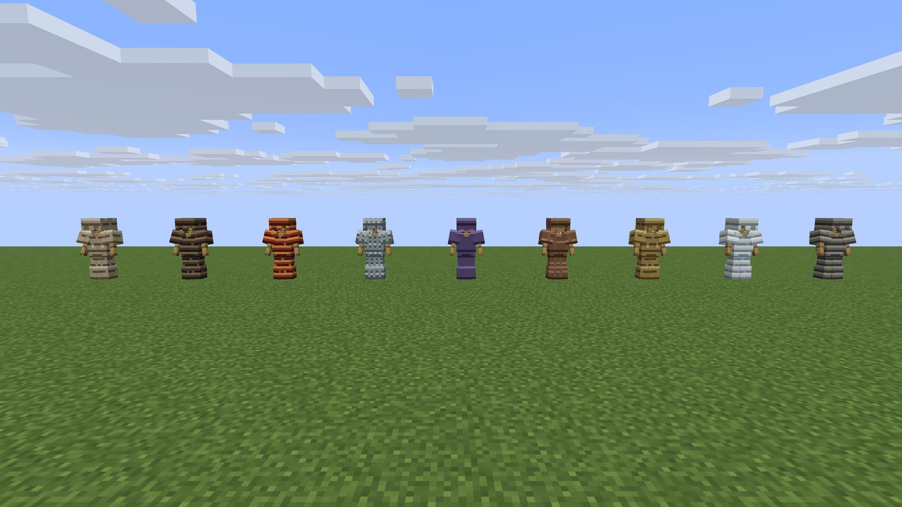
The bosses' plates.
Boss plates. Every story boss now has a 3% chance to drop its own top-tier plate, better than any forged plate, with
its own look and its own strength:
| Boss |
Plate |
Its strength |
| Hallowhorn |
Antlerbark |
knockback resistance |
| She Who Salts the Ford |
Saltglass |
armour |
| Sheerwall Warden |
Sheerstone |
toughness |
| What Walks on Kern |
Kernhide |
+8 health a set |
| Thing in the Fold |
Foldweave |
+12 health a set |
| The Pan's Own |
Panscale |
toughness and armour |
| Tallyfog |
Fogmail |
+5% move speed a set |
| The guardians beyond the old door |
two more plates from beyond the old door |
— |
Everyone who earns the kill rolls once. A plate can drop at any level and you keep it, but it can only be forged into
armour and worn from level 40.
The Smith's Manual
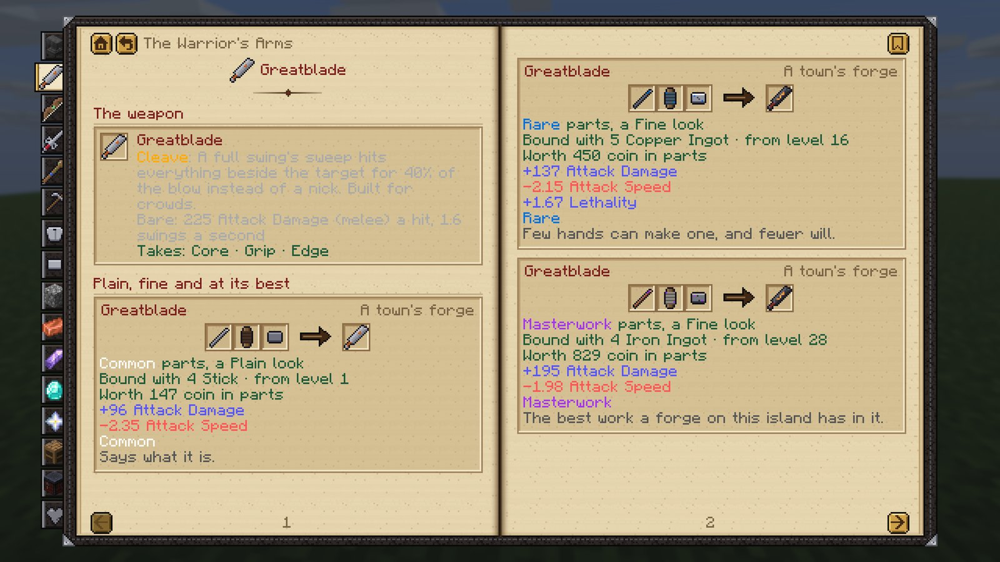
Every weapon, part and material, with the forge's real numbers.
The forge now has a real guidebook, built like the Engineer's Manual and bound in soot-black leather and iron.
- 16 chapters as tabs: the forge itself, each class's weapons, tools, armour, part families, materials by rarity
(Common to Legendary), the stations, upgrades and reagents.
- A page for everything: every weapon type shown forged at its plainest, at its first fine version and at its best;
every named weapon; every part and trait; every material and every way to make its parts (crafting, casting,
cutting, which counter sells it, which boss drops it); every plate; every upgrade stat with each level's value,
ingredients and coin; every reagent and where it comes from.
- Search, bookmarks, and links: click any item on a page to open its own page.
- 3D and scenes: the smeltery as a 3D model you can turn and build up layer by layer, and an animated scene of
forging a weapon from start to finish.
- Real numbers: every figure is read off the forge when you open the book, so it is always up to date.
How to get it: craft it from a book and an iron ingot, take the Smith's Manual tutorial from any town's tutor, or
press Manual at the upgrade bench (it hands you one if you have none).
Three books, linked. The Smith's Manual, the Engineer's Manual and the new Herbalist's Almanac link to each other, so
you can jump from an upgrade's reagent to the potion it goes into and back.
The Upgrader's Manual is retired into it. Every copy you own is now a Smith's Manual, automatically. Its build guide
for each class is in the How Upgrades Work page.
Bosses
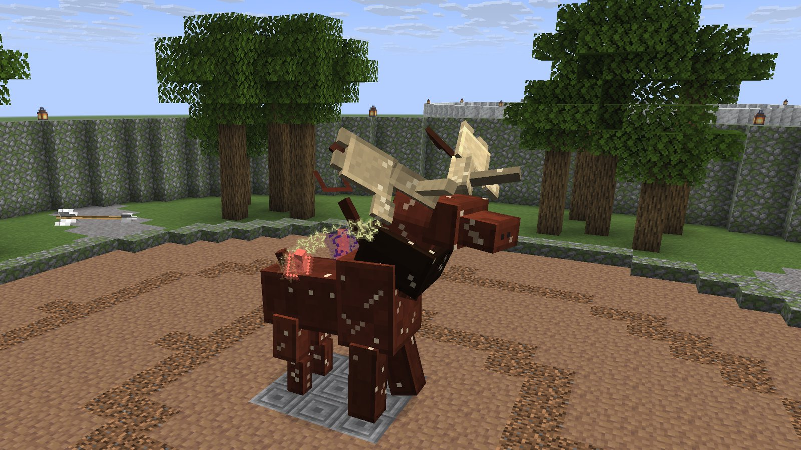
Every boss now shows you where to aim.
Every boss has a marked weak spot. Some bosses' heads were drawn where no arrow could reach them, so a headshot
landed on empty air above the shoulders. Now every boss has its weak spot painted in coral on its body, and only a
hit on that painted part counts as a headshot. It is not always the head:
| Boss |
Its weak spot |
| Sheerwall Warden, and the guardians beyond the old door |
the two stone courses across the chest |
| She Who Salts the Ford |
the lower jaw of her maw |
| The Thing in the Fold |
the glyph on its front |
| Hallowhorn |
the orchard on its back and flank |
| What Walks on Kern |
its breast and the hackle along its spine |
| The Pan's Own |
its three inner veils |
| The Tallyfog |
the Tally and its glyph |
Every boss's hitbox now fits its body. Before, every boss used the same box, and the bigger ones stuck out of it —
an arrow through a boss's head and shoulders could pass straight through. Now each boss's hitbox is the size of what you
see. Bosses also stop at a distance where their attacks can reach you, and arena gateways were widened so the bigger
bodies fit. Hallowhorn's orchard lanes were widened for its charge.
Who a boss goes after. Bosses used to lock on to whoever stood closest and ignore anyone shooting from range. Now
a boss weighs who has hurt it most in the last 15 seconds (healing a fighter counts half), and every 2.5 seconds it
decides again. It only switches when someone else is clearly ahead, by at least 10%, so it does not flicker between two
players. Deal twice anyone else's damage and you have it, wherever you stand.
- You can see it. A red eye floats over whoever the boss is after, for everyone nearby, and the boss bar shows
where you stand: ON YOU, or your place in the queue (#2 of 4).
- Ranged players are fair game. A boss reaches an archer or a mage at range with its own throws, pulls and leaps.
Only someone standing on a pillar or ledge well above the arena floor is out of its reach, and the boss shows it
giving up on them (a grey tell and a line to the player it ignores) rather than standing there stuck.
- Every boss has a nature. Damage always matters most, but each boss leans a different way:
| Boss |
Its nature |
| Hallowhorn |
a hunter: goes for the wounded |
| She Who Salts the Ford |
a drowner: picks off the weakest nearby |
| Sheerwall Warden |
a gatekeeper: holds on whoever tanks it |
| What Walks on Kern |
a raptor: dives on healers |
| The Thing in the Fold |
a lurker: takes whoever is nearest |
| The Pan's Own |
a grudge: keeps its target once it has one |
| The Tallyfog |
an auditor: punishes healing |
- The Warrior's Challenge always wins. However the boss scores you, a Challenge grabs it for its full length, and
its lead holds for the 15-second window afterwards.
Fewer adds, shorter holds. Bosses that call help now call half as many, half as often — one or two helpers a wave, and 35 seconds to a minute
between waves. And no boss holds you in
place for more than one second any more: Kern's long hold, the Fold's grip and every other stun or root are capped at
one second. (A boss that charges into a wall is still dazed for three seconds: bait it.)
Beyond the old door. For those whose story has taken them far enough, something new waits beyond the old door —
the guardians beyond the old door, built to the same brutal standard as the rest, a new top armour material, and a
higher level cap. That is all we will say.
Boss tokens are retired. Nothing used them, so bosses no longer pay them and the token pocket is gone from your
purse.
The Gilded Rune
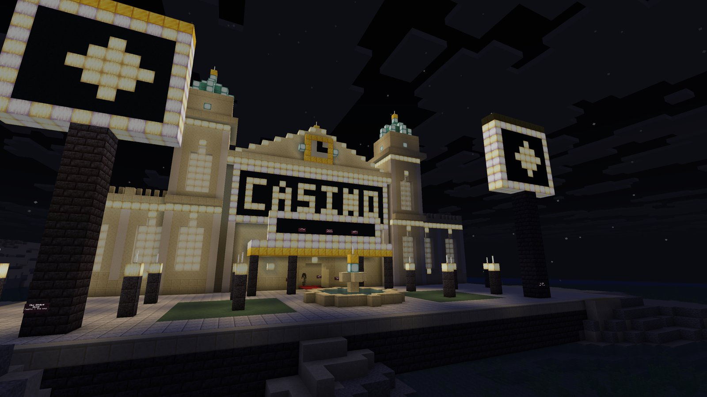
The Gilded Rune, by the mainland end of the Mistward Crossing.
A grand casino now stands on the approach to Nought, beside the mainland end of the Mistward Crossing near the Toll
Head dragon station: a palace with twin domes, a lit great dome, a fountain and a lot of neon. Inside is a sealed world
of its own — no windows, no sky, and no way to see in or out.
The Gilded Rune is still under construction. It is not fully open to the public yet, but the doors are open and you
can go in and play the games that are ready. More games, and more of the house, come in future patches.
- The Doorman stands in the hall inside the entrance. Pay him 25 coin for a visit, and the gilded gate behind him
opens onto the floor. It stays shut for anyone who has not paid. A visit lasts until you walk back out into the street.
- Rune slots — open now. Right-click any slot cabinet on the floor, choose a stake of 5, 25 or 100 coin and
spin. Three reels of runes stop one by one. About one spin in three pays: two matching runes from the left pay 2 to 6
times your stake, three of a kind pays more, and the Gilded Rune pays wherever it lands — three of them is the
jackpot, 100 times your stake.
- Coming later: the roulette and dice tables, the bar, the cashier's cage, and the arena for creature races and
fights with its gallery. Their places are already on the floor.
- No fighting inside.
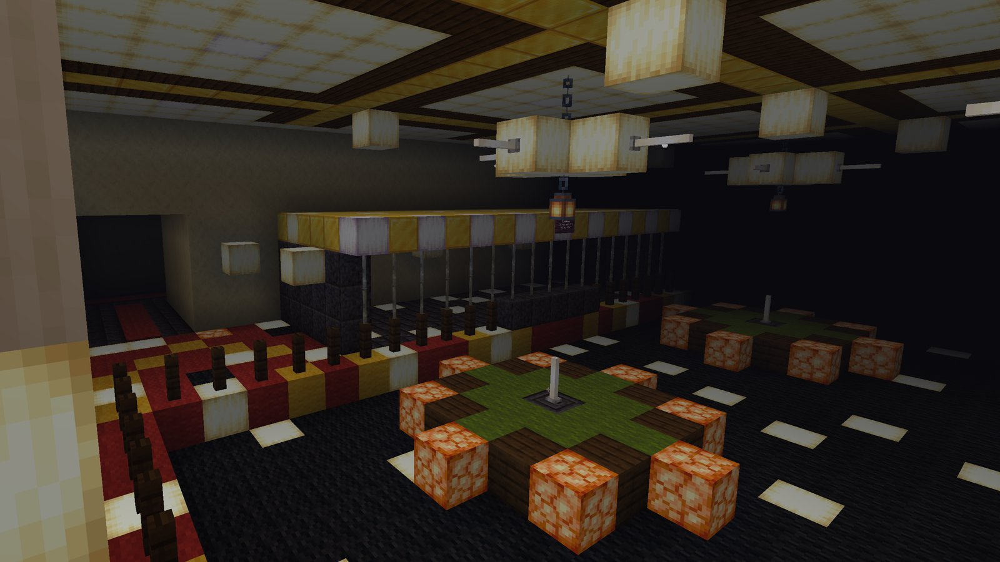
The floor, waiting for its games.
Economy
- Trophies sell for double — a trophy now pays 0.8 of its price where it paid 0.4, and every buyer takes about
an hour of hunting's worth a day, so you can sell what you bring back at a fair price, to the right counter.
- Upgrades need a quarter of the materials — every upgrade level's material count was cut to a quarter (Magic
Penetration's first level went from 1,592 glass to 398). The coin per level is unchanged, so fully upgrading a piece is
now about two to five weeks of regular play instead of a month or more.
- Penetration is a percentage — Lethality and Magic Penetration now ignore a percentage of the target's Armor
or Magic Resist: 12 Lethality ignores 12% of Armor, not 12 points. They now matter against tough targets. A verb's or
passive's own penetration (Sunder, Bodkins and so on) is unchanged.
- Potions heal a percentage — a vanilla Potion of Healing now heals 10% of your max health (20% for level II),
instantly. Arcana's Healing Potion still heals 40% over 15 seconds.
- Blood moon coin — during a blood moon, every one of the dead you kill drops 1 to 3 coin straight into your
purse, shown as a gold +N that pops up like a damage number.
- Buying back your things from the Gleaner is cheaper — a lost item now costs half of what a counter would pay
you for it (it used to be half of the shop price, which often cost more than the item was worth). And Buy back
all takes 30% off the total.
- Founding a home again costs 1,000 coin — your first Cornerstone founding is free as before, and picking a
Cornerstone up is still free, but founding a home again after your first costs 1,000 coin.
- Wake in any town — Ottoline Grimwade, the cartomancer in Asteryn's city hall, now sells a change of where you
wake to any town that has admitted you, not just your own: 1,000 coin per change, like the other bindings. Recall
follows it. If that town has shut its gate on you since, or its square has no safe footing, you wake in your own town
instead.
- Spawner creatures pay nothing — a creature that came from a spawner block gives no coin and no experience.
Its kill still counts for quests.
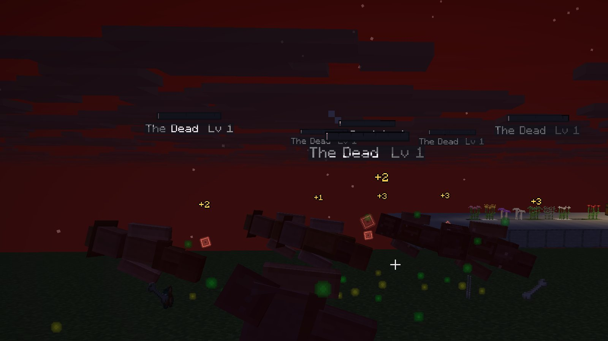
Gold numbers on a red night.
The server tells Discord
The server now posts players' big moments to Discord: a boss defeated for the first time (with everyone who took
part), every fifth level you reach, and each act of the Long Count you finish. They name the player and the
milestone, never a quest or an act's title, so nobody's story gets spoiled.
Quality of life and fixes
- Trade from your bags — the trade window now has tabs for your pack and every worn bag: Backpack, Smith's Roll,
Quiver and Trophy Bag. Put anything from any of them on the table. Things you receive go into your pack first, then
into a bag that takes them, so nothing ever drops at your feet.
- Horse jump meter — a gold meter now shows your mount's jump charging, where vanilla's bar used to be. The mount
readout shows each horse's jump as a range, for example "Jump 1.2 – 5.9 blocks": a tap gives the low end, and
holding to full charge gives the high end. (Every horse seemed to jump the same height because nobody could see the
charge.)
- Full health after a respawn — you no longer wake with only half your health bar after dying.
- Kills by poison count — a creature killed by your venom, bleed or other damage over time now counts as your kill,
for quests, experience and coin.
- On-kill effects work on kills — Quicken, Ward and Siphon now also fire on the blow that kills. Before, a spell that
one-shot a zombie never gave you Quicken's speed.
- What Walks on Kern's ring — in phase 2, the circle that opens the ground was hard to see and the ground opened
later, sometimes outside the circle you were shown. The circle is now drawn in heavy runes until the ground goes, and
the ground opens exactly where it was shown. This was the "invisible root" some of you reported.
- Knockback you can feel — when your blow lands, the creature now moves back on your screen at once, instead of a
moment later.
- Map pins follow moved shopkeepers — see One map for everybody.
- The spear has a new look — a leaf blade on a long socket, with a burning midrib, crossbar and tassels at
masterwork. Only the look changed.
- Server safety — the server now protects its own save files much better, refuses to rebuild the world if its
records are ever damaged, and restarts itself if it freezes, instead of hanging silently.
What happened to your things
All of this happens by itself the first time you log in to 1.9. You will see a chat line for each.
- A free respec for everyone — every point in both of your passive trees, every node rank, and every rank in your
spells or your new active comes back to you, so you can spend them again. It does not use up your own free respec.
- Old creatures' trophies are bought back — the 22 old creatures are gone, and with them 20 trophies. Every one you
carry — in your pack, ender chest, worn bags, inn lockers, and boxes or bundles inside them — is bought at the new,
doubled selling price. A trophy left in a chest is paid at the next login of whoever carries it.
- Vanilla armour is bought back at material value — every vanilla armour piece you carry or wear is taken, and you
are paid what its materials are worth: diamond 60 a diamond, iron 5 an ingot, gold 12, copper 1, leather 1.5,
chainmail as iron, and a netherite piece as the diamond piece plus 400 for the ingot. A diamond chestplate pays 480 and
a netherite one 880. Enchantments are not paid for.
- Your Upgrader's Manual is now a Smith's Manual. Nothing to do.
- Archer nodes were renamed — the Hard Loose is now Punch Through and Rattle is now Exploit. They keep their
place, but they do new things (see The Archer rework). The Vault node is retired (Vault is your active now) and
Tumble stands in its place; your point comes back.
- Your forged armour got stronger — forged class armour from 1.8.11 keeps its look, tier and upgrades, and its
armour rises, because a plate now gives its full share of a set. A plain Warrior plate set from 1.8 that never had a
class look is now forged armour with no class.
- Boss tokens you still hold do nothing any more.
- The old creatures are gone from the world — the Callstand, Reedback, Blankface, Marrowpack Hound, Wanthart,
Tidepale Heron, Blankmaw, Rimewing, Stonelung, Echostilt, Emberplough, Hollowbole, Boltcairn, Longhand, Sinkheap, Rune
Stalker, Slabback, Cordwyrm, Aftershade, Combhorn, Wickwane and Keenwife. Any still standing disappear when their
ground is next loaded.
- A Wanthart that stole from you drops everything it was carrying where it stood, the first time its ground loads.
Go back to where it was to pick your things up.
- Quests carry on — kills of an old creature still count toward the step that now asks for the new one.
- Bounties for old creatures were withdrawn; the board tells you, and new ones are posted.
- The Aldwater Shallows hunting ground is gone with the Reedback. Fallow's gravel and sand bounties are gathered at
the Aldford.
Known limits
- The casino is under construction. Only the rune slots are open; the tables, the bar, the races and the arena come
in later patches.
- Groves are not marked until found. Nobody has found a grove yet. The Almanac and the alembic's panel tell you where
each plant grows; the first player to reach a grove puts it on everyone's map.
- Gleaner, tower, still and alchemy numbers are first prices. Tower costs, the still's bottle prices, potion
strengths, the new creatures' drop rates and the class actives' numbers may be tuned after we see them played.
- A road crew cannot be called off by a player once paid. If something goes wrong, ask an admin.
- The new top armour material and the guardians beyond the old door are only reachable once the story takes you beyond the old door.
- Your first login may be busy while your old map is shared with the server in the background.
- Venom kills now count for quests, experience and coin, but the boss fight's damage summary still shows venom
damage as unclaimed.
1.9 in short
Everything above, on one page.
- Watchtowers — about 37 lairs of the dead are scattered across the island. Clear one, raise a tower on it, hold
it through one night, and nothing hostile spawns around it any more, for everyone.
- One map for everybody — the Chart's fog, the places found and the detailed terrain are now shared by every
player. Every storyline quest you have going gets its own green mark.
- Road crews — pay Greave by the block and a crew rides out in a wagon and paves a road for you while you watch.
- The Arcane Alembic — a new brewing station and 13 new potions, made from 9 rare plants that grow only in named
places, and the organs of the new creatures.
- Gunpowder has a source — two new ores, Brimstone and Saltpetre, and a recipe with charcoal.
- Eight new creatures — the old Arcana creatures are gone. Three animals and five hostiles take their place, each
with one move you can read before it lands.
- An active ability for every class — Berserk for the Warrior, Vault for the Archer and Blade Flurry for the
Assassin, on the Z key, ranked with skill points like the Mage's spells.
- Growing past level 20 — a skill point every level to the cap, passive nodes with ranks, and your main stat and
health keep growing past 20.
- The Archer rework — bug fixes, new nodes, the Warbow's Blood Draw, a crossbow bolt that goes through a line, and
bow parts that do something.
- Armour, rebuilt — vanilla armour is gone. Forged armour comes in every material, from hide up to a new top armour
material, and class armour goes on top. Bosses can drop plates better than any you can forge.
- The Smith's Manual — a full guidebook for the forge, with search, links, real numbers and 3D models. It replaces
the Upgrader's Manual.
- Bosses — every boss has a marked weak spot and a hitbox that fits its body, and goes after whoever hurts it
most, shown by a red eye. Fewer adds, and nothing holds you for more than a second.
- The Gilded Rune — a sealed casino on the approach to Nought, still under construction but open for its first
game, the rune slots. More games in future patches.
- Economy — trophies sell for double, upgrades need a quarter of the materials, penetration is a percentage,
potions heal a percentage, and the dead pay coin during a blood moon.
- Quality of life and fixes — trading from your bags, a horse jump meter, a respawn at full health, kills by
poison counting for quests, and more.
When you log in: everyone gets a free respec, old trophies and vanilla armour are bought back for coin, and your
Upgrader's Manual becomes a Smith's Manual. All of it is listed under What happened to your things above.
Arcana 1.8.13
Released October 2026. Your launcher updates you when you reconnect.
Two new dragon stations
- The Toll Head stands at the mainland end of the Mistward Crossing — cross the bridge from Nought to take a dragon.
- The Greave Road stands on the road outside Greave, so Greave no longer has to fly from the Crossmark.
Touch a station's waystone to add it to your flights.
Hired hands
Hiring a hand now asks only for the building block their booth is made of. The trade's own things — the anvil, the
banners, the lectern and the rest — are included in the fee.
Arcana 1.8.12
Released October 2026. Your launcher updates you when you reconnect.
The dead
The dead are far fewer — about a quarter as many, from every source — and fragile: a single good hit drops one. But they are no longer a stroll. By day they keep pace
with a walking player; at night they're a little faster than a walk, and only a sprint leaves them behind. A bite
slows you for a moment, so you can't simply walk through a horde. Three bites in quick succession infect you: you're
slowed and drained for about 30 seconds, though never below a fifth of your health. A bandage, a Healing Potion or a
Salve cleans it out. The dead also rise to meet stronger travellers, so they stay a threat as you level.
Cleared stays cleared
Each place now gets one wave of hostile creatures per day and one per night. Anything you kill stays dead until the
next dusk or dawn, so clearing an area finally means something.
Reedbacks are resting
Reedbacks are gone from the island until the creature rework. Fallow's task in the shallows now sends you after
Callstands on the North Terraces instead, and any Reedbacks you already killed for it still count.
Your experience level
Your vanilla experience level — the one the enchanting table spends — now shows under the inventory panel. Hover it
to see how far you are to the next level.
Map search
Map search now answers from what shops really stock. Typing an item lists everyone who sells or buys it, nearest
first, and "bank" lists the Ledger in Nought (deposit), every Ledger's clerk (withdraw) and your own hired Banker. No
more results pointing at shops that don't offer what you searched. Hired hands can be listed on the map for other
players from their own panel.
Fixes
- The story's directions now always lead to the person the quest names (Act II pointed back to Fallow while the
text said Greave).
- Several crafting recipes no longer clash: the plain edge, the iron and copper cores, the oak grip and the alarm post
have new patterns, and vanilla's iron and copper trapdoors and wooden and copper shovels can be crafted again.
- Conduit is now one cable spool and one smooth stone for eight, and the Engineer's Manual shows how.
- The server runs much lighter, and a rare freeze when a water wheel loaded is gone.
Arcana 1.8.11
Released October 2026. Your launcher updates you when you reconnect.
Weapons, redesigned
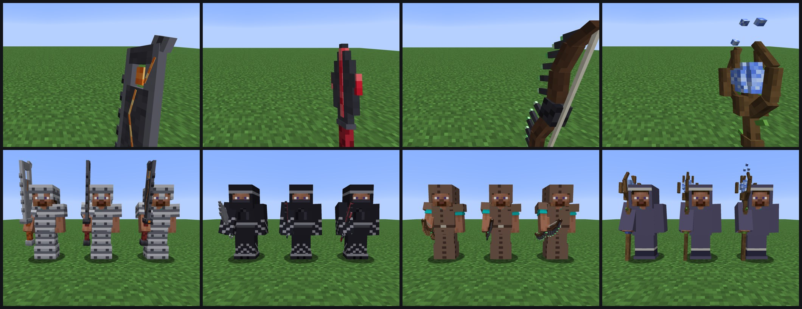
Every weapon has a new design, and each class now has its own look: dark steel and ember for the Warrior, blackened
blades and crimson for the Assassin, leather and green for the Archer, and blue crystal for the Mage. Each tier now
looks more powerful: plain carries a hint of your class colour, fine lights up, and masterwork shines brightest and
gives off a shimmer that other players can see. The claws are now Kunai.
They also stay out of your way. In first person every weapon now sits low and to the side, leaving the middle of the
screen clear, and swings stay on screen. Seen from outside, weapons are held properly: blades up, the greatblade
over the shoulder, the staff like a walking staff. Only the look changed — every hit lands exactly as before.
The Engineer's Manual
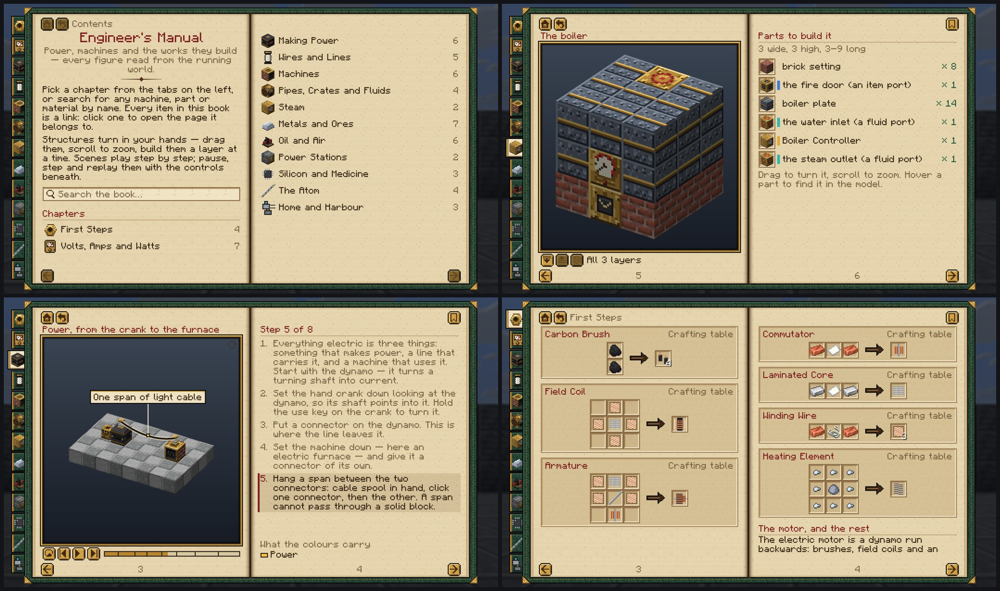
The Mechanist's Manual is now the Engineer's Manual, and it's a real guidebook. Pick a chapter from the tabs or
search for anything by name; every item in the book is a link to its own page. Recipes and machine jobs are drawn
with the real items and the machine's real numbers. Every structure is a 3D model you can turn, zoom and build up
one layer at a time, and animated scenes walk you through building things step by step — pause, step and replay as
you like. Chapters open as you're taught each era, so there's nothing to spoil. Your old copy turns into the new one
by itself.
More things you can craft
Brass fittings, the item, fluid and power ports, and the Engineer's Manual itself now have crafting recipes. The
book shows each one.
Class armour
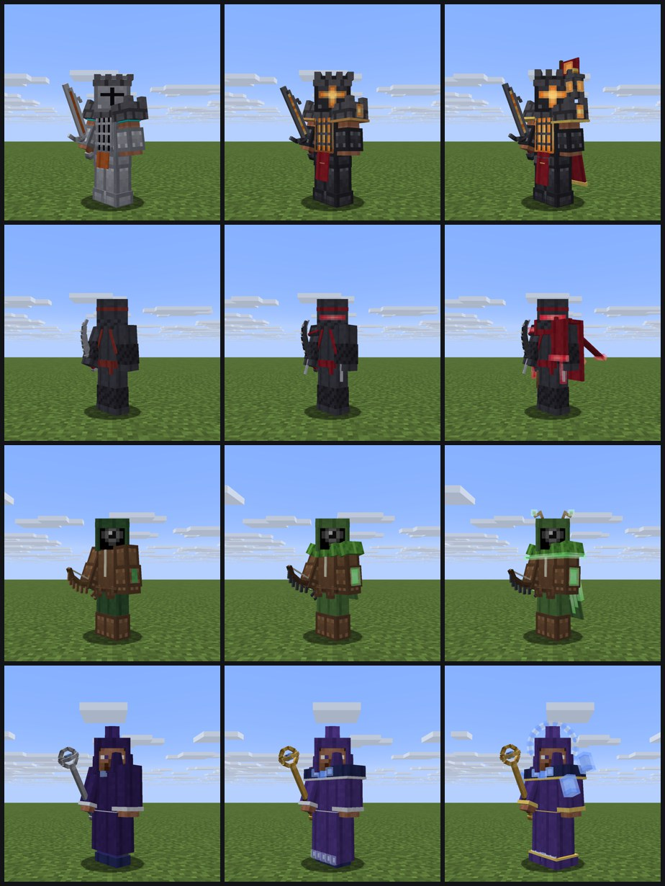
Whatever armour you forge now takes your class's own look: a walking castle for Warriors, wraps and a mask for
Assassins, a hunter's hood and cloak for Archers, a star-scholar's robe for Mages. Only your class can wear it. It
comes in three tiers — plain, fine and masterwork — and each is a big step up, in looks and in strength. Wear all
four pieces at the same tier for a set bonus that grows with the tier. Greave's armoury can now temper your armour
to fine, and to masterwork once you reach level 40. Masterwork pieces glow and shed a shimmer that everyone else
can see. Don't want the helm or the cape? Hide them from the character page of your Grimoire; your stats stay the
same. Armour you already own takes your class's look automatically.
Hired hands
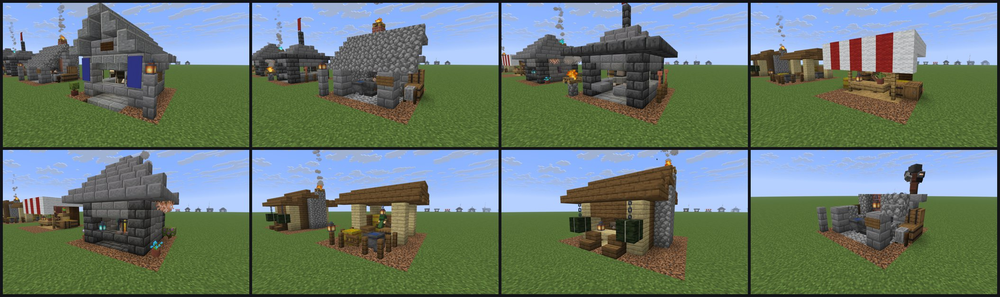
You can now bring a town's trades home.
How it works. Visit the trade in town and pay a one-time fee. You're handed a plot marker: take it out into the
wild (not in a town, on a road or over a landmark), right-click the ground and you'll see a ghost of the booth. Turn
it, choose the block it's built of — any full building block you carry — and confirm. The trims, roof, stairs and
posts are made to match automatically. Bring the few work props the trade needs, and the hand walks over and builds
a small, detailed booth before your eyes, block by block: small booths take about a minute, bigger ones two. After
that they work there day and night. Anyone may use their services. As the owner you pay the plain price, and you can
set a markup of up to 25% for everyone else, which is paid to you. You'll get a knock when someone walks up to one
of your booths. A hand can be knocked down by the dead, the blood moon or another player, but is back on their feet
at the next dawn and is never lost. Letting a hand go returns half their fee; their booth stays behind, no longer
protected.
- Cook — hired at any innkeeper, 600 coin. Cooks your raw food for a coin a piece, and turns any three dishes
into a Cook's Supper: a full meal with a short shield of absorption.
- Stablemaster — hired at Fallow's timber yard, 800 coin. Stables up to four of your mounts, heals them, and
brings them back out when you want them. And he gives you a Stable Whistle (free, and again if you lose it).
Blow it anywhere in the wild and a menu shows the mounts in your stalls, each turning in a little live preview with
its travel speed in blocks a second. Pick one and, for 100 coin, your stablemaster saddles it and rides it out to
you — he comes into view from behind you, gets down at your side and hands you the reins, then walks back to his
stable. Until he is home the whistle tells you how long he has left to walk, so a call far from home waits longer.
It works only out in the wild — inside a town he asks you to walk out past the gate — and only for you, the owner.
- Merchant — hired at the provisioners, the Deepway Stores or the Tidewrack, 1,500 coin. Sells the travelling
basics and buys the trophies you bring back.
- Alchemist — hired at Asteryn's alembic, 2,000 coin. Sells healing potions and brews your own herbs and bottles
into Asteryn's draughts.
- Soldier — hired from any town guard, 2,500 coin. Guards about thirty blocks around their post against anything
hostile.
- Blacksmith — hired at Greave's forge, 3,000 coin. Forges, reworks, repairs and upgrades weapons and tools at
one bench, and armour at the other.
- Banker — hired at the Ledger in Nought, 3,500 coin. Keeps a vault that is yours alone and safe when you die,
and sells back the belongings you lost when you died, at the same price as your town's Gleaner.
No more claims
The claim system is gone. Outside towns, the only protected blocks are the booths your hired hands build — nobody
else can break them and no explosion can touch them. Your Cornerstone simply marks where you wake after death and
where Recall takes you. Turrets, alarm posts, chunk loaders and Greave's deed buildings now work anywhere in the
wild, away from towns. Boundary Charters are retired: every one you bought is refunded in full when you log in. Any
slave soldiers you had are now free soldier markers, waiting in your pack.
Arcana 1.8.10
Released October 2026. Your launcher updates you when you reconnect.
Every weapon, rebuilt
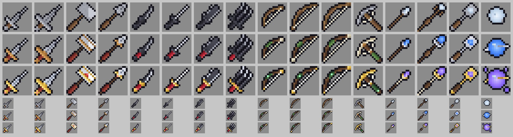
All sixteen weapons are now real 3D models, with bolder icons and a look for each class: forged steel and bronze for
the Warrior, blackened blades with a crimson wrap for the Assassin, ranger leather and green for the Archer, and
glowing crystals for the Mage — a staff that's actually tall, an orb that floats over your hand. Better weapons look
better: each has a plain, a fine and a masterwork look by its tier. Each is held its own way, and swung its own way in
first person: the greatblade cleaves, the hammer comes down overhead, the spear thrusts, the claws rake. Only the look
changed — every hit lands exactly as before.
The hang glider
Craft one from 3 leather, 2 string and 3 sticks. Right-click to open it, step off something high, and steer where you
look: it carries you about six blocks forward for every block you drop, and never climbs. Open it just before the
ground and it'll save you from the fall. Right-click again to fold it.
Respec resets spells too
A respec at the Alembic now also refunds a Mage's spell ranks, at the same 25 coin per point.
The Tidepale Heron, calmed down
It's slower than a sprinting player now, so you can get away. It also has less health, hits softer, and only notices
you sprinting past from closer up.
Arcana 1.8.9
Released October 2026. Your launcher updates you when you reconnect.
Nearest first
Your quest board in the corner and the map's search results now list the nearest first, and each shows how far it
is: "320 m", "1.2 km". The list keeps up as you walk, but never moves under your mouse. Press Enter in the map's
search to jump to the nearest match.
Health bars stay up
The bar over a creature no longer disappears after you hit it.
The wilds stay standing
Hermitages, crypts, towers, shrines and the other places you find out in the wilds can no longer be broken or blown
up. Where loot is sealed in stone, the seal still breaks so you can reach it.
Skill points past 20
Skill points stop at level 20; past it, each level adds damage and armour. Levelling up now says so, instead of
staying quiet. Anyone who was a point short has it back.
Hide quests from the corner
Open the map: the new "Quests in the corner" card lists your open quests. Click one to hide it from the top right,
and click again to bring it back. It stays on the map either way.
Arcana 1.8.8
Released September 2026. Your launcher updates you when you reconnect.
Weapons carry your power, food does not
Swinging food, a block or an empty hand now lands a plain fist's blow. Your level, skills and passives only reach a
creature through a weapon, and a forged weapon's attack now shows in its hits.
Mounts are safe from players
Tamed horses, donkeys, mules, llamas and camels can no longer be hurt by players: no stray swings, arrows or spells.
Wild ones can still be hunted for leather.
The dead are worth killing
The dead now sometimes drop bones, string, leather, coal and raw copper, iron or gold when a player kills them. Each item rolls on its own:
| Item |
Chance per kill |
Amount |
| Bone |
12% |
1–2 |
| String |
6% |
1 |
| Leather |
5% |
1 |
| Coal |
5% |
1 |
| Raw copper |
4% |
1 |
| Raw iron |
3% |
1 |
| Raw gold |
1.5% |
1 |
Bank clerks
Asteryn, Fallow and Greave each have a bank clerk on the square. Talk to her to withdraw your coin. Deposits are still
made only at the Ledger's counter in Nought.
No spawning in lamplight
Hostile creatures, the dead included, no longer spawn where a torch or lamp lights the ground. Light your home and it
stays empty.
Clearer bosses
Some boss attacks are now much easier to see coming, and you can see when one has hold of you.
Arcana 1.8.7
Released September 2026. Your launcher updates you when you reconnect.
Clicks sent instantly
Your game used to hold each click until its next tick, up to 50 ms later, before sending it. Now a hit on a creature
leaves on the frame you click, and so do a Mage's spell keys, cast key and right-click cast. Attack cooldown and
reach work exactly as before, and the server still checks every hit. To turn it off, type /arcanahud instantclicks.
Arcana 1.8.6 — Combat lag fix
Released September 2026. Your launcher updates you when you reconnect.
Combat lag fix
Hits and actions felt delayed, even on LAN. The cause was how this Minecraft version handles player input: the
server only read what you did at the start of each tick. Every hit waited up to 50 ms before the server saw it,
which felt exactly like ping.
The server now handles your input the moment it arrives, so hits register as soon as you swing. We also gave the
server more memory, which cuts the short stutters from its memory cleanup.
Arcana 1.8.5 — No walking out on a boss
Released September 2026. Your launcher updates you when you reconnect.
Changed
- LEAVING A BOSS FIGHT IS FALLING IN IT Logging out once you're through a boss's fog now counts as the boss killing you: the usual cost of a death, and no share of the loot. You wake
in the usual place when you log back in. A server restart or being kicked by an admin never counts — only leaving
yourself, losing your connection, or your game crashing.
- A TOWN IS FOUND WHOLE Discovering a town now marks everything in it on your map.
- Deposit and withdraw are now services at the Ledger's counter.
- FEWER KEENWIVES The Keenwife is about a tenth as common as before.
- AN ICON FOR EVERYTHING IN TOWN The map now gives every shop and service in town its own icon — the bank,
the inn, the smithy, the tutor, the fuel pump and the rest — coloured by what it is, with a key you can open to name
each one, names under them when you zoom in, and a search that finds places by what they are (try "bank" or
"inn"). Zoomed out, a town's icons gather into one with a count; click it to zoom in. Your own marker is easier to
spot too.
Arcana 1.8.4 — Aggro, escorts and story fixes
Released September 2026. Your launcher updates you when you reconnect.
Fixes
- BOSSES TARGET THE RIGHT PLAYER Bosses sometimes turned on whoever had done the least, especially a
player who joined late. They now follow threat properly, and a Warrior's challenge holds them.
- STORY SCENES A story scene no longer plays after you've recalled or travelled away. It waits for you
to come back, or skips.
- STORY FIGHTS A fight could stay unfinished because one enemy was still alive somewhere out of sight.
Stragglers now leave, and the fight completes.
Changed
- CALLING A BOSS BACK Calling a boss back early now costs a fortune — about an hour of questing per boss
level. Otherwise bosses return at midnight.
Escorts
- SEE WHO YOU'RE GUARDING The person you escort glows through walls, has a marker over her head (an
arrow at the edge of your screen when she's out of view), and a bar showing her health and how far along
the road she is.
- SHE CAN FALL The dead can now hurt her. If she falls, the fight is lost and she's back where she set
out 30 seconds later, ready to try again.
Also fixed
- RECALL BRINGS YOUR MOUNT Riding a skeleton horse, donkey, camel or other animal when you recall now
brings it home with you. Carts and lorries stay where they are.
- INNKEEPERS INDOORS Some innkeepers, including the Long Inn's, stood outside their inn, so you couldn't
find who lets the rooms. They now wait inside, by the door.
- ABOUT PART TRAITS Tier-2 parts carry no trait. If a part of yours lost its trait when 1.7 retiered
it, that's why. Tier-3 parts and above keep theirs.
Arcana 1.8.3 — Brutal bosses
Released September 2026. Your launcher updates you when you reconnect.
Bosses
- NO BREATHING ROOM Bosses rest far less between attacks and use their big moves more often.
- COMBOS Most attacks now chain into follow-ups. Dodging one hit doesn't mean you're safe.
- THEY HURT A careless fighter at the boss's level won't survive a full combo. Warriors can take more,
but not forever.
- STILL FAIR The biggest attacks still warn you on the ground before they land, and every string ends
with an opening to punish.
- SHORTER HEALTH BARS Most bosses have a little less health, so fights last about as long as before.
- SERVER TUNING Bosses can now be paused or rebalanced on the fly by the server, so we can adjust them
without restarts while you fight them.
Arcana 1.8.2 — Bosses fight back
Released September 2026. Your launcher updates you when you reconnect.
Fixes
- NO MORE STALLING Some bosses stopped attacking when you stood close to them. They now keep fighting
however you position yourself.
- NO MORE STUNLOCK Hitting a boss quickly no longer makes it flinch over and over. It keeps its rhythm.
- THEY HIT HARDER Boss attacks deal about a fifth more damage. The warnings before big attacks are
unchanged.
Arcana 1.8.1 — Tutor fix
Released September 2026. Your launcher updates you when you reconnect.
Fixes
- TUTORS WORK AGAIN Pressing a tutorial on a tutor's panel gave an error in chat instead of starting it.
Every tutorial now starts from her buttons, including Getting to Know Engineering.
Arcana 1.8 — Upgrades, Bosses and Dragon Stations
Released September 2026. Your launcher updates you when you reconnect.
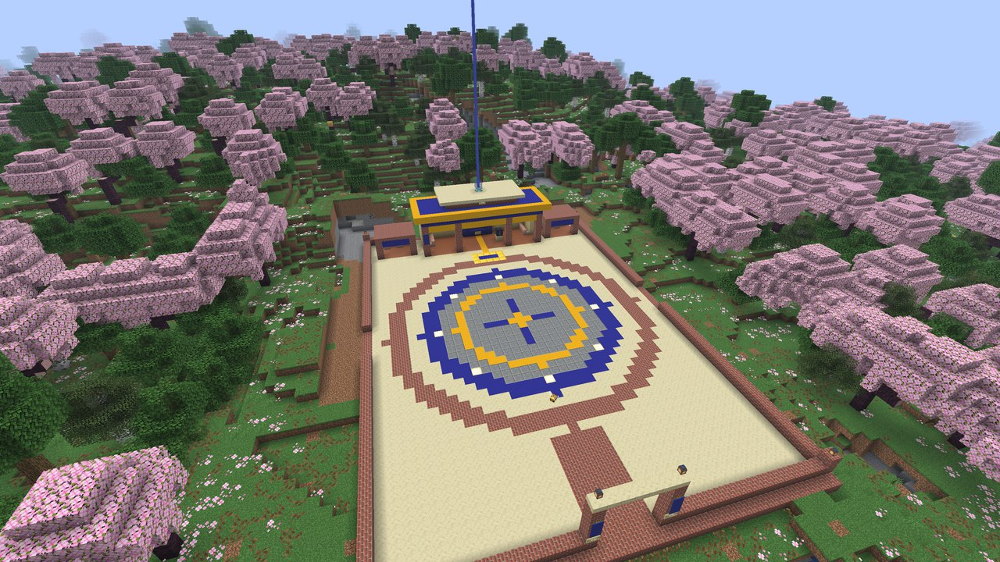
Every dragon roost is now a dragon station.
When you log in
- A FRESH START FOR GEAR Your forged gear keeps its parts, but on its own it is now much weaker. The power
comes from upgrades, which you add yourself (below). Nothing you own is lost.
- OLD PARTS REFUNDED Loose parts of the old kind, which fitted anything, are taken from your pack, ender
chest and bags. You get their full worth in coin.
- A FREE RESPEC Everyone gets one more free respec.
- MAGES Your spells are reworked (below). Points in retired spells come back to you.
The story moves together
- ACTS OPEN FOR EVERYONE AT ONCE The next act of the story opens when every player who has played in the
last 14 days has finished the current one. Nobody races ahead, and nobody gets left behind.
- SEE WHO IS LEFT Your quest tracker shows how many have finished and who is still on it, by name.
- THE WHOLE SERVER HEARS When an act opens, everyone gets a message.
- ASK THE GIVER The person who gives you the next act explains why it's waiting.
Gear upgrades
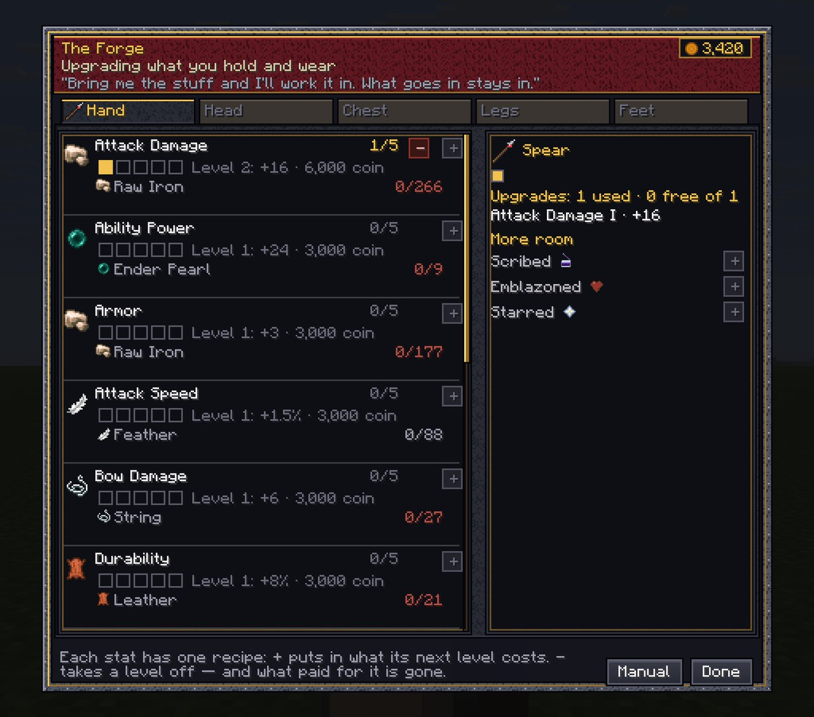
The upgrade bench at a town forge: a tier 1 spear with its one slot filled.
- UPGRADES ARE THE POWER Bare gear does only about a third of what it used to. Put a stat in one of your
gear's slots and pay to raise it, level by level. Fully upgrading one piece is a long chase: about a month of
regular play.
- SLOTS COME FROM THE TIER Tier 1 gear has 1 slot, tier 2 has 2, tiers 3 and 4 have 3, tier 5 has 4. A
weapon with a part that dropped from a boss gets one more (armour doesn't).
- 21 STATS, ONE RECIPE EACH Damage, armour, health, life steal, speed and more. Levels 1 to 3 cost one
ingredient, in bigger piles each level. Levels 4 and 5 need three things: a creature's drop, something
mined or gathered, and something engineered. Level 5 is the big one.
- 13 NEW DROPS Creatures now drop upgrade materials of their own, beside their trophies: Plough Iron, Heron
Heart, Cairn Core and more. The Manual says who drops what.
- EVERY LEVEL COSTS COIN More each level, from 3,000 coin for a level 1 to 48,000 for a level 5. Side
quests are how you fund it.
- MORE SLOTS Capacity upgrades add slots on top: Scribed (Scrivener's Ink and coin) and Emblazoned (a Boss
Heart and coin, from level 16).
- OLD BOSS MATERIALS The old boss upgrade materials are retired. Any you hold are bought back in coin
when you log in.
- THE UPGRADER'S MANUAL A page for every stat and where to get its ingredients. Any forge gives you one.
- TOOLS TOO Pickaxes, axes, fishing rods, the wrench and the engineer's goggles take upgrades.
- TOUGHER GEAR Weapons and armour now last a whole boss fight at full durability, with room to spare.
- REPAIR AT THE FORGE Pay some material and coin. Gear at 0 durability stops working until you repair it.
- ONE PIECE PER PART A part now fits one kind of item. A new part fits the first item you forge it into.
- BOSS DROPS FOR ANY CLASS Boss parts are now fully random, for any class. Trade the ones you can't use.
- A TRIM THAT SHOWS YOUR BUILD Upgraded gear gets a coloured trim for its main stat, and its name colour
shows how upgraded it is.
New weapons and armour
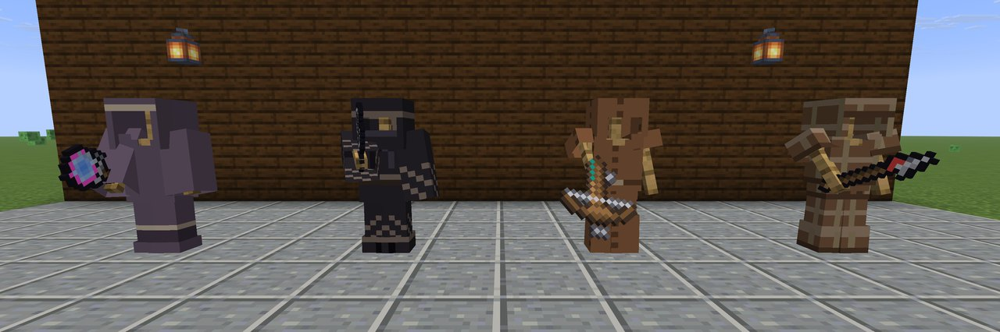
The orb, the claws, the crossbow and the spear, each with its class's armour.
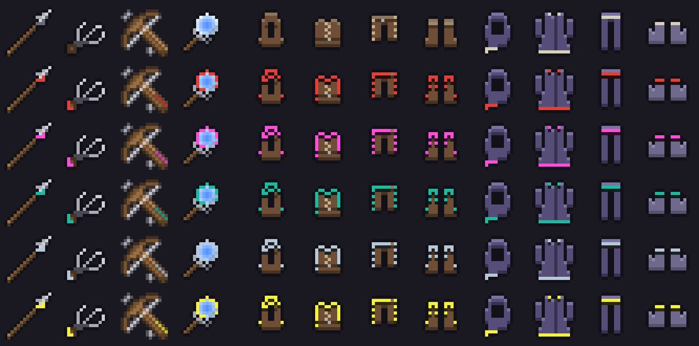
The four new weapons and the leather and robe sets, bare and trimmed.
- SPEAR (WARRIOR) Reach: one block more reach than any other weapon. Hits from 3.5 blocks or more deal 15%
more.
- CROSSBOW (ARCHER) Heavy Bolt: load it and carry it loaded. The bolt hits 1.5 times as hard as an arrow
and pins the target.
- CLAWS (ASSASSIN) Rake: every third quick hit on the same target deals 50% more.
- ORB (MAGE) Resonance: each spell you cast soon after the last is 5% stronger, up to four times.
- ARMOUR BY CLASS Plate for the Warrior, leather for the Archer, robes for the Mage, and a black outfit of
the Assassin's own: Mask, Garb, Wraps and Tabi. It's lighter than leather, and the Tabi add +2% move speed.
You can only wear your own class's type.
- SET BONUS Wear all four pieces of your type for +5% of your class's main stat.
- WARRIOR: IRON HIDE Now pays 20% of each hit from your rage, up from 17%.
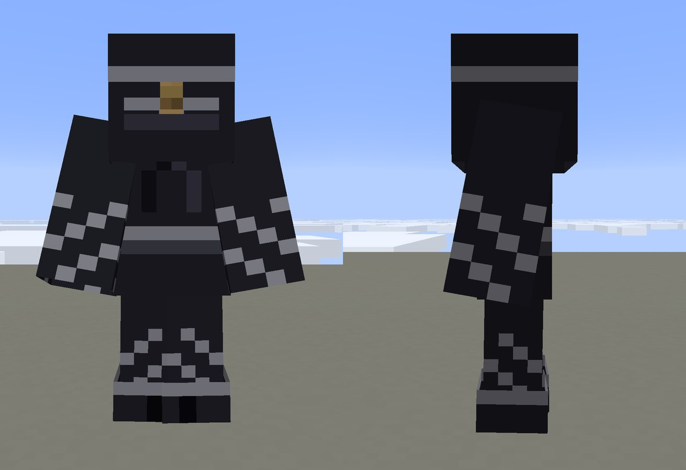
The Assassin's own outfit.
The Mage, reworked
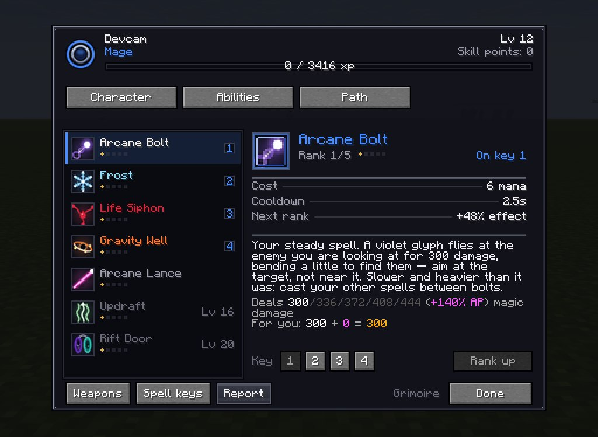
Seven spells, four on your keys.
- SEVEN SPELLS Arcane Bolt and Frost at level 1, then Life Siphon (4), Gravity Well (8), Arcane Lance
(12), Updraft (16) and Rift Door (20).
- FOUR ON KEYS 1–4 Pick four in the Grimoire. Each has its own key, and you can rebind them. With your
focus out, 1–4 cast. Otherwise they change your hotbar as usual.
- QUICK CAST On by default: a spell casts where you aim. Turn it off per spell to see where it lands
first.
- ARCANE LANCE A big opening hit: half a second to charge, then a beam through everything in its path.
- LIFE SIPHON Threads to up to three creatures that heal you as they hurt them.
- UPDRAFT Throws you six blocks up. You drift down and can cast on the way.
- RIFT DOOR A door at your feet and one up to 24 blocks away, through walls. Anyone can use it.
- BOSSES Slows and pulls no longer work on bosses. Damage still does.
- RETIRED Phase, Rune Ward and Overchannel.
Bosses fight back
- NEW FIGHTS Every boss has been rebuilt with its own way of fighting. Learn it, or lose to it.
- READ THE GROUND The biggest attacks warn you before they land. Every attack leaves an opening.
- AREA ATTACKS HIT EVERYONE in them, so spread out.
- WALLED ARENAS Each boss now fights in its own walled arena.
- FOG GATES Walk through the gate to join the fight. The fog holds you in until it ends. Friends who
arrive late can still walk in and join, and share the loot.
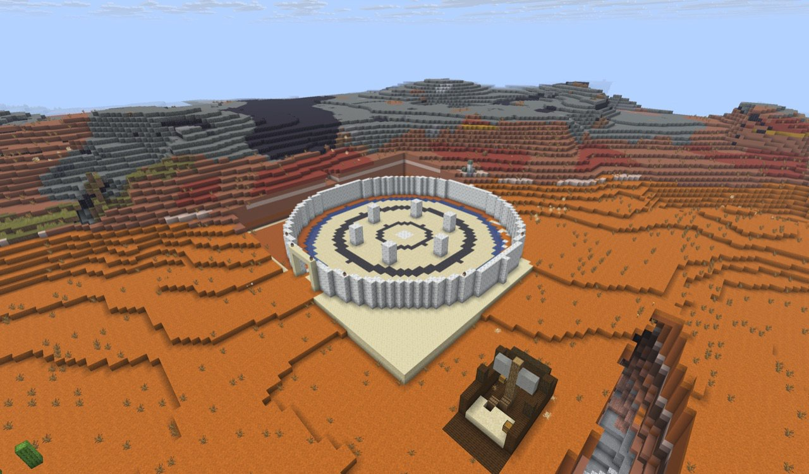
An arena on its own ground.
Dragon stations
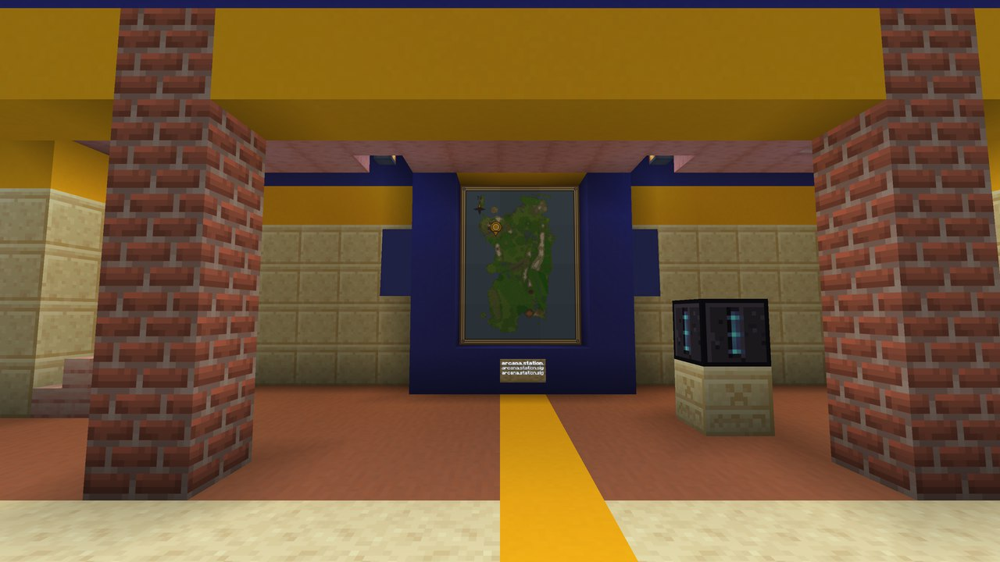
Right-click the big map on the wall.
- 15 STATIONS Every roost is now a dragon station, and there are 7 new ones across the island.
- THE WALL MAP Right-click it to open a map of the island. Pick a station, see how far it is and what it
costs, then press Fly. Stations you haven't found yet stay off the map: touch a station's waystone to
add it.
- CLEAR WHERE TO STAND A round pad for the dragon and a gold boarding mark for you.
- CHEAPER FARES 25 coin plus 20 for every 1,000 blocks, so a short hop is about 30 coin and the longest
flight on the island is 260.
- SMOOTH FLIGHT The dragon now flies in one smooth motion, from takeoff to landing.
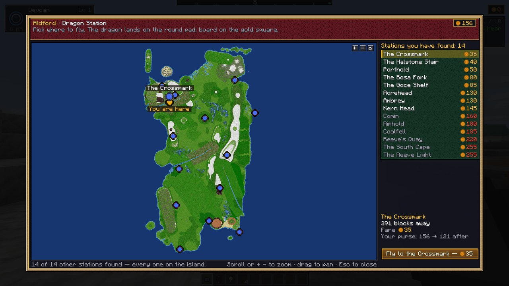
Pick where to fly.
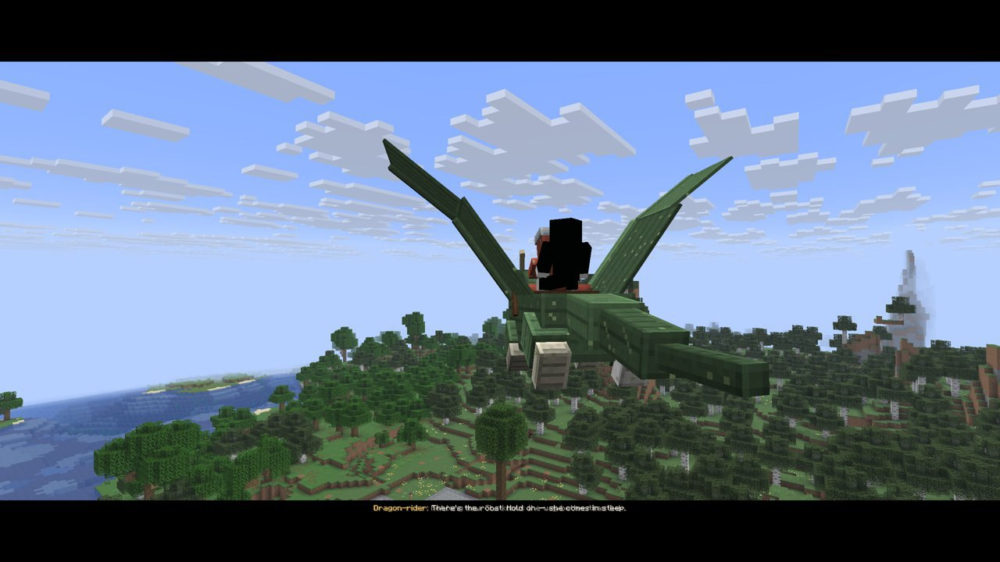
No more stop-start flying.
Roads and wagons
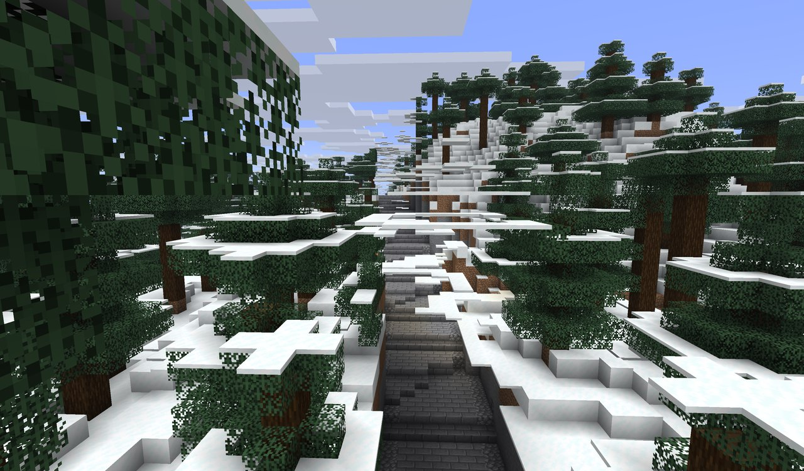
Before: the road through the Acre's mountain cutting.
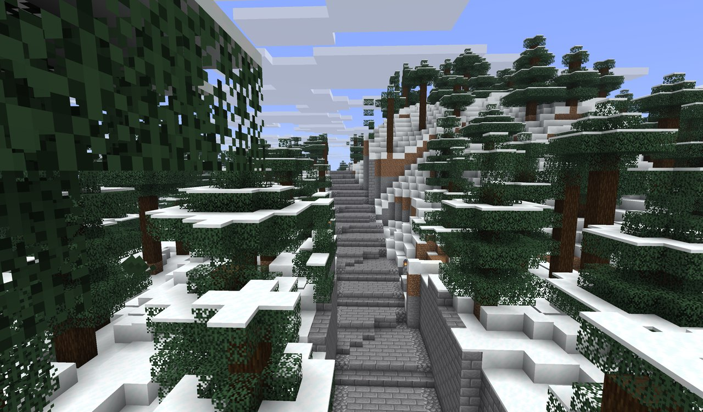
After.
- ROADS FIXED The roads now blend into the land. Gentle slopes on the sides, stone walls where the cut is
deep, and no floating snow or blocks over the road.
- THE NOUGHT ROAD A new road from the Mistward Crossing to Nought's gate.
- THE HALT A short road now links the Crossmark to the Crossmark Halt.
- WAGONS Supply wagons stay on the road. Where there is a gap they fade out and come back past it. Only the
dead can hurt them.
Towns
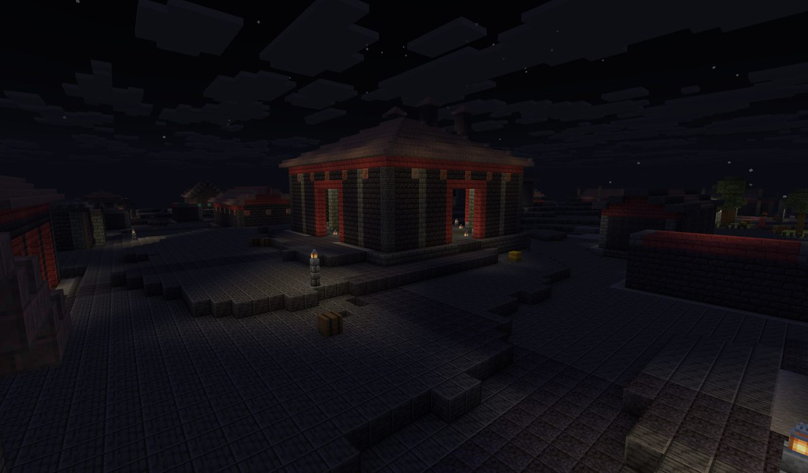
Greave at night, before…
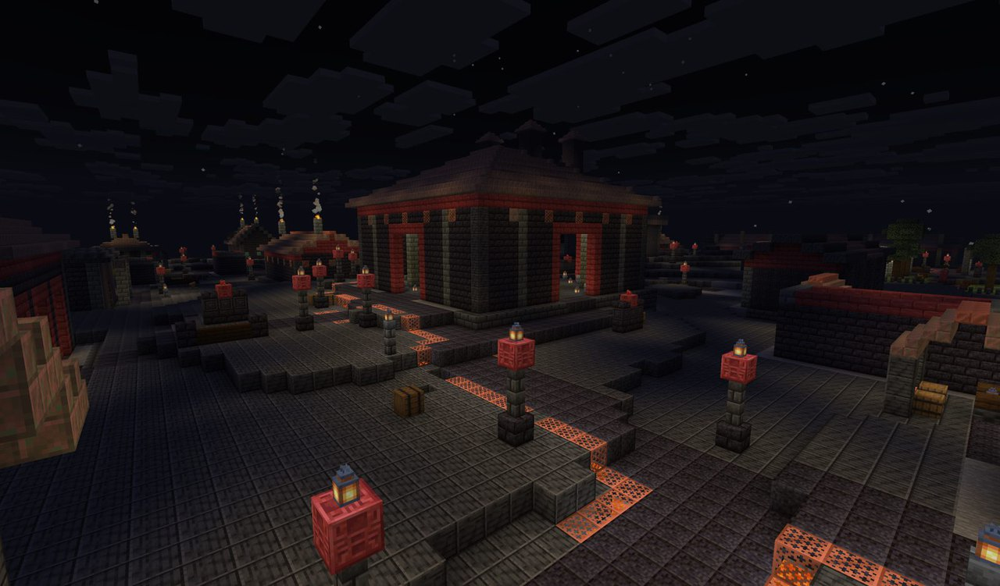
…and after: the Ember Road.
- FALLOW An orchard of cherry trees on the squares, smoking chimneys, shutters and flower pots, and strings of
lanterns over the market.
- GREAVE The Ember Road glows through copper grates. The Great Anvil stands on the main street, and fires
burn on the towers.
- ASTERYN The city now glows from below, with lights under the lanes, plus the Glyph Well and reading
benches.
- NOUGHT A new counting house on the quay. The Ledger's bank has moved into it.
- TWO NEW SELLERS IN NOUGHT The Reef-Diver sells what comes up off the reef, and the Instrument-Maker sells a
spyglass, compass and clock.
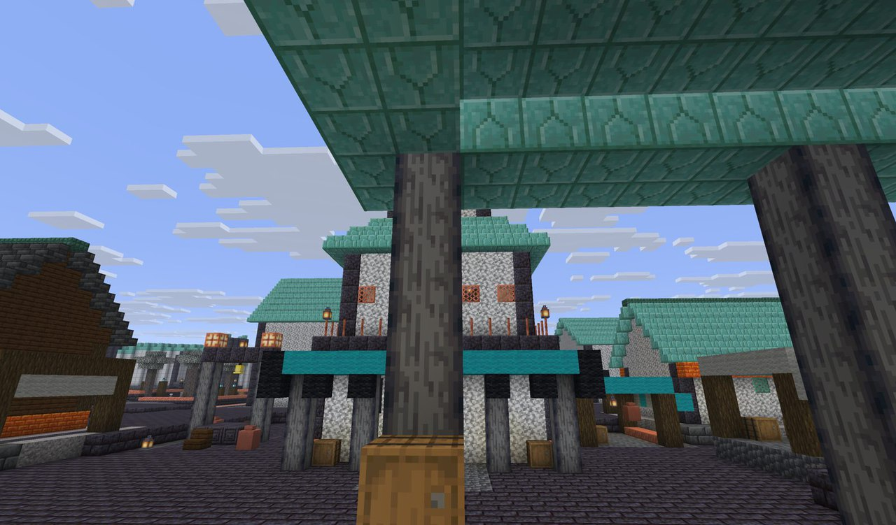
Nought's counting house, the Ledger's new home.
Tutors
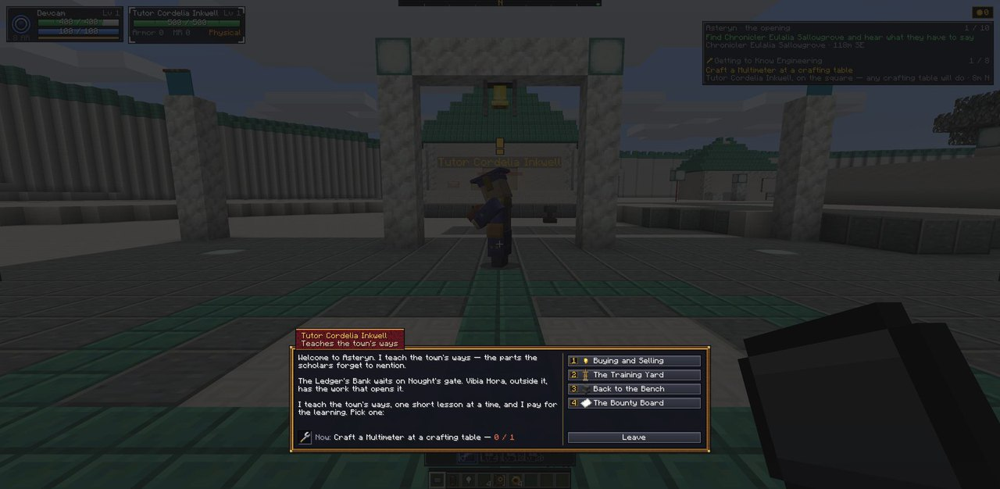
Every town's square has a tutor.
- A TUTOR IN EVERY TOWN They stand on the square and teach 12 short tutorials. Each one pays coin.
- ENGINEERING A new tutorial line, marked with a wrench on the map. It teaches the first machines and
gives you a wrench, goggles, wire cutters and a respirator.
- OTHER LESSONS Buying and selling, the training yard, bounties, the inn at night, recall and homes,
dragon flights, and more. Some unlock when a town lets you in.
Coin
- SIDE QUESTS PAY BEST Bounties and townspeople's errands now pay more than anything else, at every level.
They pay more at higher levels and for harder jobs.
- LESS FROM ELSEWHERE Kills pay half the coin they did. Story rewards pay about 40% less coin. Trophies,
arena purses, escorts and hauls also pay less.
A new look
- HEALTH BARS A shield now shows on top of your health bar, so the bar keeps its length.
- DANGER COLOURS A creature's level is coloured by how dangerous it is to you: grey, green, yellow or red.
- RESTYLED The Grimoire, the Path and the class choice have the new look. The Path shows only what you can
reach now.
- SMALLER THINGS A shorter death recap, townspeople's names in the new style, and an hourglass on the boss
bar that shows its patience.
- MOVE SPEED Speed bonuses now add together instead of multiplying. A fast build is still fast, but no
longer extreme.
Arcana 1.7 — Roads, Coin and Book Two
Released September 2026. Your launcher updates you when you reconnect.
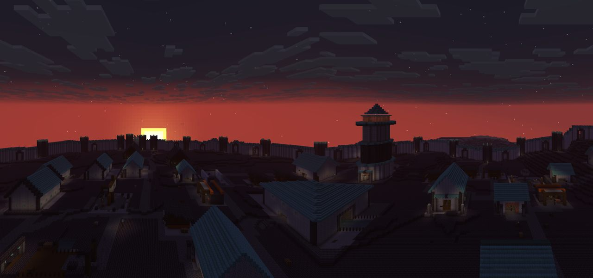
The new title screen: Nought at blue hour.
The story
- BOOK TWO Two new chapters (Acts III and IV), with scenes, shared fights that anyone nearby can join,
and lines written for your class.
- A NEW ISLAND The story now leads toward a new island. The crossing opens later in the story.
- CUTSCENES Big story moments play as short scenes. You can skip any of them.
- DRAGON FLIGHTS Fly between the seven waystones, for coin.
Levels and gear
- LEVEL CAP 25 The cap goes up to 25, on the way to 50.
- PAST LEVEL 20 Each level adds damage and armour, not health. Skill points stop at level 20.
- GEAR TIERS The gear tiers unlock at levels 1, 1, 16, 28 and 40. Gear above your tier is refunded in
coin, and a message tells you what you got.
- RETIRED The Salt Choir staff and shurikens are gone. You get their worth back in coin.
- BOSS DROPS Bosses drop gear that fits their level. The Sheerwall Warden is now level 16.
Modular gear
- EVERY PART HAS A MATERIAL Gear is built from parts, and each part is made of a material. Your gear converts on its own, with the same stats it had.
- MAKE PARTS AT HOME Cast parts in part moulds at your smeltery, or cut them at the part bench.
- ASSEMBLE AT THE FORGE Put parts together at a town forge. A part you swap out comes back to you, worn.
- FORGED TOOLS Forge a pickaxe, axe, shovel and hoe to use beside the vanilla ones.
- THE SMITH'S MANUAL
/arcana manual explains how it all fits together.
Classes
- SKILL TREES Every skill tree is toned down.
- FREE RESPEC Everyone gets one free respec.
- WARRIOR Hits harder the more bonus health he has, and heals more from his hits the lower his health.
- ARCHER Hawk Eye is now a base passive, and shots hit harder the further they travel.
- ASSASSIN A kill gives momentum: speed and energy. Bleeds also lower the target's armour.
- MAGE Fresh Spell: a spell that is different from your last one deals 15% more.
- MAGES AND BOSSES Rune Ward no longer throws bosses around, and Gravity Well now damages them.
The bank and your coin
- THE BANK Nought's Ledger keeps your coin. Deposit and withdraw for free.
- DEATH TAKES YOUR COIN When you die, you lose all the coin you carry, so bank it. New players keep
theirs until their admission at Nought, where banking is explained.
- TOWN TITHE Town counters take a small tithe, shown on the counter. It pays for projects you can see:
lamps along the roads into town, and archers on the walls on blood-moon nights.
- GRAND HOMES Greave's stone yard sells bigger claims, a trophy hall, a manor and a tower.
- PROTECTED PLOTS Buy a plot at Nought. Three wardens guard it, and the dead can't get past them.
The Gleaners
- DEATH TAKES WHAT YOU CARRY When you die, you drop everything you carry.
- YOUR GLEANER Your own town's Gleaner recovers it and sells it back to you at half its worth. Pick what
you want back. The rest waits for you forever. The fee goes to your town's treasury.
- WHO TO ASK Mara Pennant in Fallow, Tobias Lanthorn in Asteryn, Sigrun Ashlock in Greave and Decima
Rastra in Nought.
- A FREE WEAPON If you wake up with no weapon, your town gives you one.
Roads
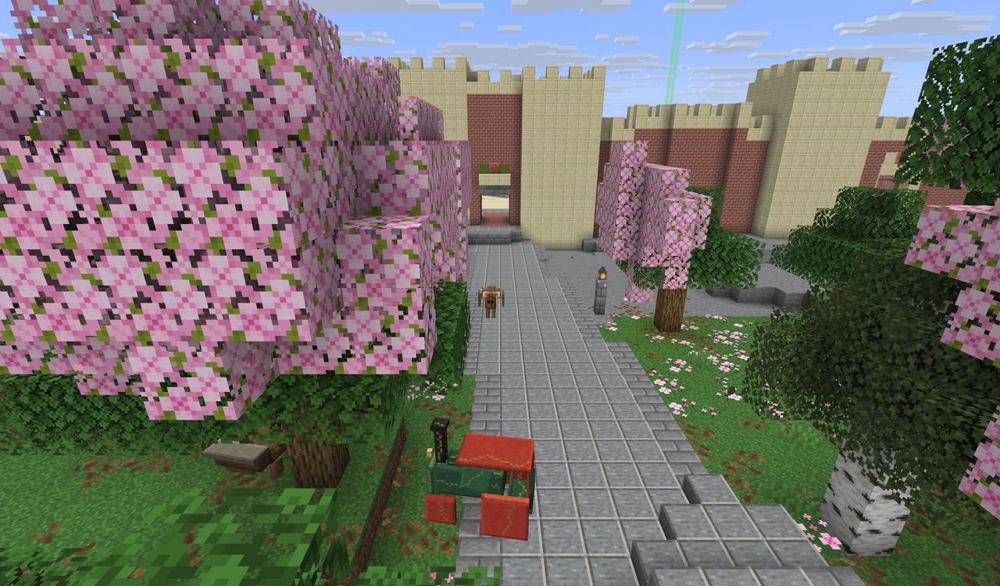
Stone roads run to every town gate.
- STONE ROADS Stone roads now join the towns, with bridges, a viaduct, a tunnel and long causeways.
- ROAD LAMPS Lamps along the roads keep the dead back at night.
- A CART Buy one at Fallow's timber yard.
- ENGINES Drive a steam traction engine or a diesel lorry. Fill up at a town's pumps once the town
has power.
- RIDE THE WAGONS Hop on the towns' supply wagons.
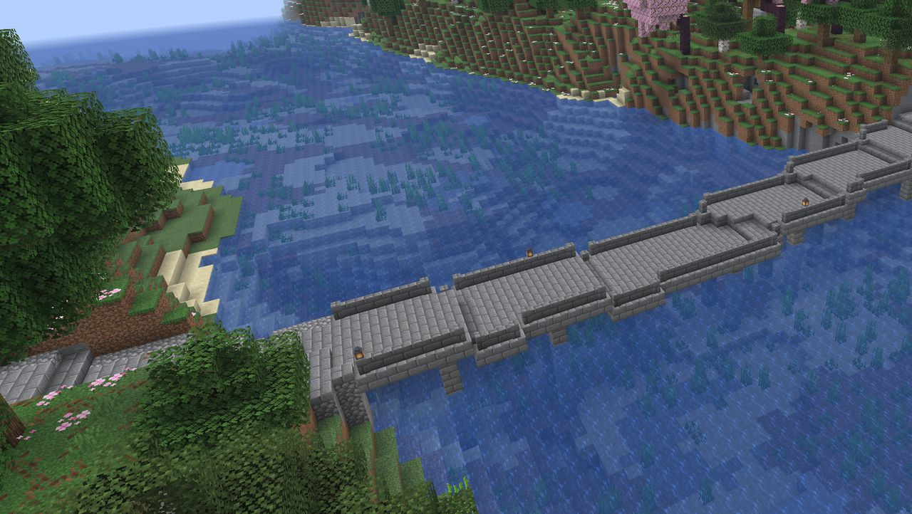
One of the new road bridges.
The Mistward Crossing
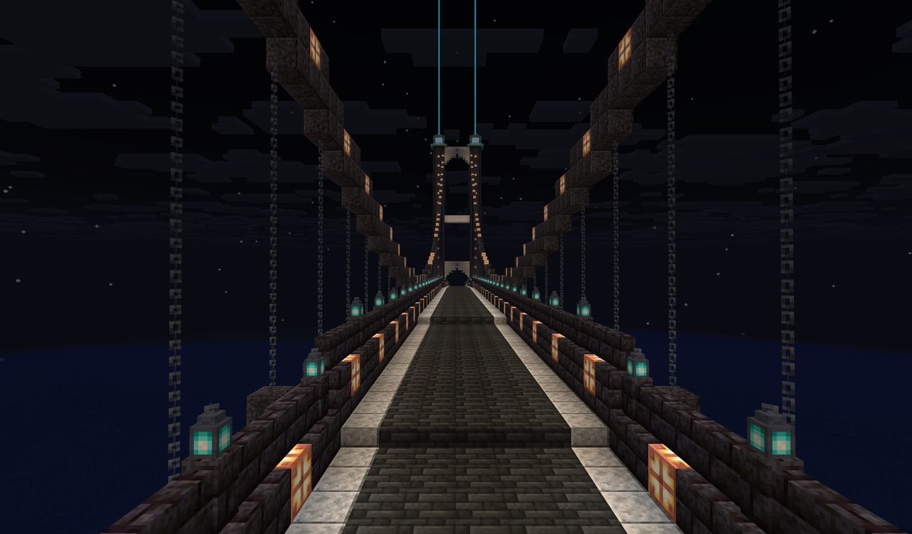
The deck of the Mistward Crossing at night.
- THE MISTWARD CROSSING A lit suspension bridge now crosses to Nought. It has a small toll.
- NONA'S FERRYacross Nought's strait→retired. Cross by the bridge instead.
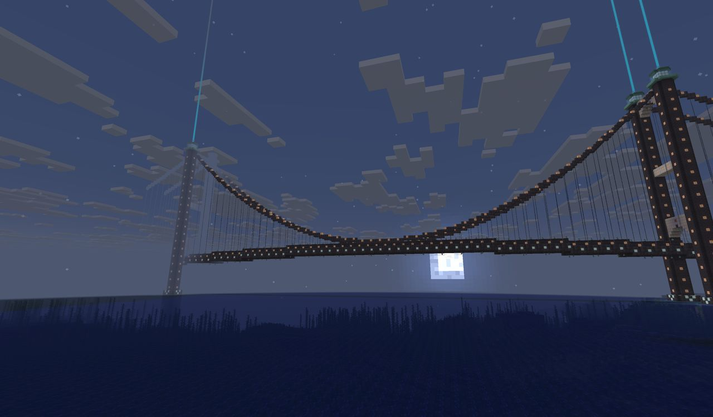
The whole span, from the water.
A new look
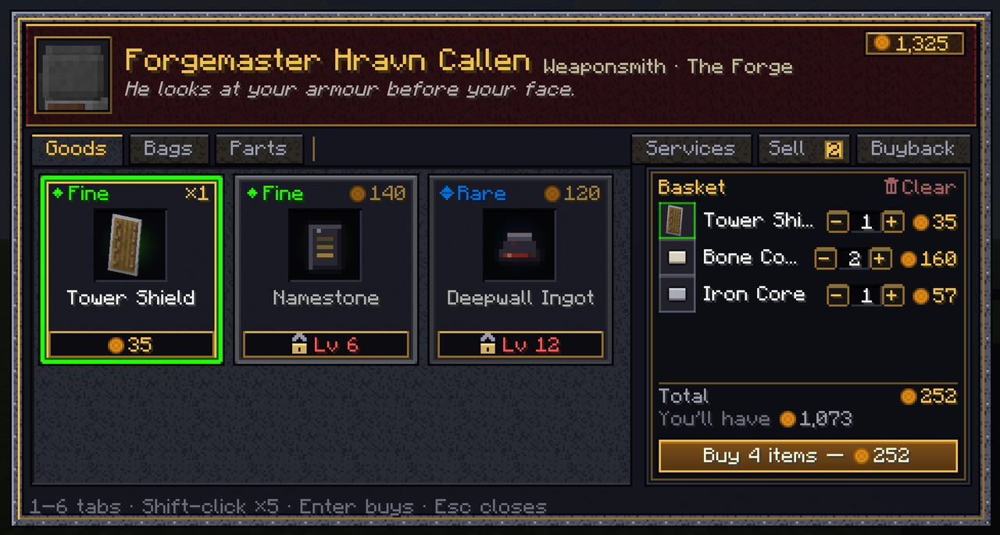
The shop is now a storefront, with a basket.
- SHOPS Every shop is a storefront. Fill a basket and buy it all at once. Sell at the counter, and buy
back what you sold by mistake.
- RARITY COLOURS The classic colours: white, green, blue, purple, orange and gold.
- RESTYLED The commission counter, trading, the altar, the forge, the machines, the B menu and the map
all have the new look. So do books and dialogue.
- MAP SEARCH The map has a search bar in the top right. Type a name or a good to find it.
The sell counter shows what the keeper wants and what you'll have after.
Search the map for a name or a good.
The commission counter.
Trading with another player.
The dead
- LESS REWARD PER KILL The dead give a quarter of the XP they did, and a flat 2 coin each.
Quality of life
- THE KEENWIFE You now get a warning line before you reach her. A strong first hit can kill her in her
sleep, and she has a new cry.
- NO ENDERMEN near the starting towns.
- CURFEW You get a one-minute warning, with the direction of the inn.
- REPORT A PROBLEM A new button in the Grimoire sends us a report.
- BETTER SOUNDS Many sounds are replaced or improved.
Arcana 1.6.2 — Blood Moon and Bosses
Released September 2026. Your launcher updates you when you reconnect.
The dead
- FEWER DEAD Ordinary days and nights bring about a third as many dead, so travel and mining are yours again.
- BLOOD MOON Every seventh night the moon turns red. You are warned the evening before and at moonrise. That night brings big, tougher hordes, and they march on homes.
Bosses
- BOSSES COME BACK A boss that had gone missing, with no timer running, now stands again when you walk up.
- BOSS LEVELS Each boss is its own level: Hallowhorn 8, She Who Salts the Ford 11, the Sheerwall Warden 14, What Walks on Kern 16, the Thing in the Fold 18, The Pan's Own 20.
- BOSS LOOT BY LEVEL Bosses drop parts that fit their level instead of always the top tier.
- UNSTOPPABLE No pull, stun, root, slow or knockback moves or holds a boss.
- ARMOUR, NOT HEALTH Bosses have double the armour and magic resist and a sixth less health. Without penetration a fight lasts as long as before; with it, it's quicker.
- BOSS NAMES Death messages name the boss that killed you.
Combat
- WEAK SPOTS SHOW Every creature's weak spot is marked with a faint coral diamond. Bosses show theirs from further away.
- MAGES Right-click no longer casts at shopkeepers, and you can eat or raise a shield from your off hand. One press after Overchannel casts one spell, not two. A cast you can't afford no longer plays its wind-up.
Bags and shops
- BAGS FILL THEMSELVES Trophies go straight into a worn trophy bag, arrows into the quiver, and forge parts into the Smith's Roll. Anything that doesn't fit goes to your inventory.
- COUNTERS SEE YOUR BAGS Selling and hand-ins take items from your worn bags too.
- NO MORE SPAM KICKS Clicking Buy quickly or holding Recall no longer kicks you from the server.
Fixes
- Switching tabs in the B menu no longer moves your mouse cursor.
- M closes the map, and the Grimoire closes on whatever key you bound it to.
- The lava pool along Asteryn's wall is gone and the wall is mended.
- The road banner no longer pops up again every few seconds while you walk along one road.
- A home under siege sends one message when a wall breaks, not one per block.
- Many quest lines had wrong directions or numbers; they're corrected.
Arcana 1.6.1 — Fixes
Released September 2026. Your launcher updates you when you reconnect.
- THE DEAD SOUND LIKE ZOMBIES Their odd moans are replaced by ordinary zombie sounds.
- NAMED WEAPONS now show their real stats before you forge them, so you can compare them with a normal weapon.
- HALLOWHORNdropped only its antler→it drops parts too, like the other bosses.
- BOSS PARTS FOR YOUR CLASS Every player now rolls parts for their own class instead of everyone getting the same.
- EASIER CASTING Hold the cast key to keep casting, or right-click with a Mage weapon to cast your selected spell.
Arcana 1.6 — The Dead and the Siege
Released September 2026. Your launcher updates you when you reconnect.
The dead
- THE DEAD WALK They come in from the sea at night, slow and many, and they hunt as one: noise and sight draw
more of them. By day they're sluggish; by night they move with purpose. Most of what walks the island is now
the dead. The island's own creatures keep to their home regions.
- NO SKELETONS and far fewer of vanilla's other monsters.
Your home
- THEY COME TO YOU The dead are drawn to homes. The bigger, louder, richer and brighter yours is, the more
come, and in numbers they break through wood and glass fast, and stone slowly. Your Cornerstone tells you how
strongly your home draws them. Nothing breaks while nobody is home.
- FORTIFY Every block has a toughness. Greave's stone yard crew reinforces and repairs your walls.
- DEFEND Turrets on your power grid (at home and at your wild workshops), barbed wire, barricades, spikes,
alarms and floodlights. Nought sells slave soldiers to guard a home for fourteen days.
Towns
- TOWNS HOLD The dead gather at the walls at night; archers on the wall walk shoot them down.
- GOODS MOVE Towns produce, process and ship goods by wagon and boat. Other towns' potion shelves are now
stocked by shipments. Haul a sealed crate yourself for coin, or take an escort job.
Arcana 1.5 — Gears and Current
Released September 2026. Your launcher updates you when you reconnect.
Engineering
- A NEW PATH OF LEARNING Engineering is taught by masters across the island, one after another, starting
with the Mechanist in Asteryn's crafts quarter. Each teaches what the next builds on.
- POWER Hand cranks, water wheels, steam boilers and engines, turbines, wind, sun, and more, all measured
in real watts and joules. Overloaded wires burn out; boilers can burst.
- REAL WIRING Cables are chosen by copper size and voltage at a cable machine. Heavy machines run on
three phases, and a distribution board shows you how to balance them. The Mechanist's manual explains it all
in plain words.
- MACHINES AND MULTIBLOCKS Furnaces, crushers, smelteries, presses, refineries and more, many of them
large structures you build to a plan, with a ghost outline to guide you.
- LOGISTICS Crates, item pipes, sorters and the Register: one screen onto everything you store.
- THE LAND Prospect for ore and oil under the island and drill it out. Dirty power leaves haze and stained
ground; reclaimers clean it, and blighted ground too.
- BIGGER GOALS Power a town from your works and watch it light up; heal the island's blight; build a ship on
your own slipway.
Towns
- CURFEW After dark, towns expect you to have a room. Take one at the inn for the night, or rent one by the
week with a locker. The watch walks everyone else out.
Bosses
- MIDNIGHT Every story boss stands again at midnight (Italian time). A bell at each arena calls one back early,
for a price that's never worth it for loot alone.
- ARENAS You're only held in a boss's arena while you're really fighting it, and clearing one never locks you
out of the others.
Classes
- NEW PATHS Each class has a new branch built on its own strength: Rage, Focus, Wounds or the Stillpoint.
Your old points are refunded, and every character gets one free respec.
Smaller things
- Quivers can be widened at the Fletchery, and arrows are cheaper in bulk.
- Your horse's speed shows while you ride, and your tamed horse comes home with you on Recall.
- Engineering blocks drop when mined with the right tool.
Arcana 1.4.2 — The Short Road
Released September 2026. Your launcher updates you when you reconnect.
- LOWER PING The server's public connection now runs through a relay in Europe instead of one far
away: roughly a third of the ping it had.
- THE PLAY BUTTON FOLLOWS THE SERVERThe route change moved the server's port, and the Play button was
still knocking on the old one→It now looks up the server's current address each time.
Arcana 1.4.1 — Fair Blows
Released September 2026. Your launcher updates you when you reconnect.
Bosses
- A BOSS COULDN'T HIT ITS TANKA marked player's mechanic refused the boss's blows on everyone else, in
every phase, so a boss could chase whoever held its attention and never land a hit→A boss can always
strike the one it is fighting.
- COMING BACK AFTER DYINGA fighter who died or logged out was dropped from the fight, and could no longer
hurt the boss or be hurt by it→You keep your place in the fight.
- SPOILS FOR EVERYONEA boss's trophy fell once on the ground for whoever grabbed it→Every fighter
gets their own, straight into their pack.
Mages
- CROWD CONTROL ON PLAYERSFrost and the Gravity Well held other players even with PvP off→They only
hold other players where PvP is on. Creatures are affected as before.
Connecting
- PLAYING FROM THE SERVER'S HOUSE The Play button now tries the home network first and uses it when the
server answers there, so players in the same house connect directly instead of through the internet.
Arcana 1.4 — Hearth and Hardship
Released September 2026. Your launcher updates you when you reconnect.
You can now put down roots out in the wild. Bosses got their real strength back, and they have a patience
bar. And the wild no longer heals you: bring supplies.
Homes
- A HOME OF YOUR OWN From level 10, buy a Cornerstone at Greave's stone yard (1,500 coin) and set it
down at least 600 blocks from any town's wall. The square of ground around it is your claim. Holding the
stone shows you where other people's claims are.
- TAKING ROOT A new home takes root at the first dawn after a whole night.
- WAKE AT HOME Pay 1,000 coin at Asteryn's city hall and a death or a Recall brings you home instead of to
your town. Changing it back costs the same.
- HOUSEHOLD Add friends at the stone; each can then bind their own wake to your home.
- SAFE FROM CREATURES Nothing explodes a claim and nothing hostile is born on its doorstep. Players are
on their honour.
- ABANDON gives you the stone back; what you built stays.
Towns
- TOWNS CAN'T BE GRIEFED Lava, water, fire, TNT, pistons, dispensers, boats, armour stands, frames,
axes, hoes and bone meal no longer change a town. Doors, gates, levers, chests and townsfolk still work
as before.
Bosses
- FULL STRENGTHMinecraft capped every creature's health, so bosses had a fraction of their intended
health and the same pool solo or in a party→Bosses now have their full health, scaled to your
party. A boss takes about 3–5 minutes alone and 1–2 with a party of four.
- PATIENCE A thin amber bar under a boss's health. It drains only when the fight isn't fair: the boss
dragged out of its arena, nobody it can reach, or the boss stuck. When it empties, the boss goes home at
full health and can be fought again straight away. Kiting on open ground is fine, and one player
on a pillar can't reset a fight someone else is honestly tanking.
- NO MORE WAIT The three-minute wait after a failed attempt is gone.
Healing and supplies
- NO HEALING IN THE WILD Health no longer comes back on its own out in the wild. Inside a town's walls or
your own claim you slowly mend out of combat. Food keeps you fed but no longer heals.
- HEALING POTION Heals over time; one at a time. Sold at every general store, cheapest in Asteryn.
- BANDAGE Stand still for a few seconds to apply it; a step or a blow spoils it. Fallow's tannery.
- SALVE A slow heal you can walk with, out of combat. Crafted only.
- MANA POTION Doubles a Mage's mana regeneration for a minute. Asteryn's alembic.
- CRAFT YOUR OWN Every remedy can be made from plants that grow on the island.
Classes
- MAGE — STILLPOINT Standing your ground in a fight floods your mana and quickens your spells. Stay
planted behind someone who holds the enemy's attention.
- ASSASSIN A kill now heals a share of your health, not all of it.
- COMBAT Being hit now counts as being in combat for both sides, which fixes the Mage's ward refilling
mid-fight and the Assassin's combat speed never turning on.
Arcana 1.3.8 — Fair Fights
Released September 2026. Your launcher updates you when you reconnect (the party board is drawn on your side).
Bosses
- BOSSES COULD NOT BE HURTA boss whose area had been empty for a while, or that had reset once, lost
track of who was fighting it: every twenty seconds it decided everyone had left, healed to full, walked
home and turned immune for three minutes. Arrows bounced and blades did nothing→Fixed for every
boss. A boss fight now always knows who is in it, and a boss that has reset stays home and leaves you
alone until it is ready again.
The party board (Tab)
- KILLS AND DEATHSreset to 0 / 0 every time you logged in→They are your whole character's record
now, so everything you have already killed shows straight away.
- EVERY MONSTER COUNTSKills of much weaker creatures were never counted→They count (they still
pay no experience).
- CONNECTION BARS ARE BACK Each row shows the player's ping bars, and the milliseconds where the board is
wide enough, so you can see who is lagging.
Quests
- SEARCH STEPSA step that asked you to find something in a stretch of country pointed at the middle of
it, and said you had arrived when there was nothing there→The arrow points at the thing itself.
Arcana 1.3.7 — The Straight Road
Released September 2026. No client update is needed.
Quests were a walking simulator: back and forth across towns you already know to report every step. Every
quest chain was measured leg by leg and rerouted. A full run from your class quests to the end of the second
story chapter is now about 37% shorter.
Quests
- STEPS FINISH WHERE YOU DO THEM, EVERYWHEREClass quests and town admissions sent you back to the giver
after every step→A step out in the world finishes on the spot. You go back only to hand over goods or
to finish the chain.
- ROUTESSteps zig-zagged across the island→Each chain runs as a path. Long walks are kept only
where you're going somewhere new.
- "ANY" TARGETSSome steps pointed you at a far-away example→The arrow picks the nearest.
- SMALL STEPS Spending a skill point or setting a waypoint no longer needs a walk back to the herald.
- QUEST LINES Lines written as if said to your face now read as word sent to you.
The story
- THE FIRST CHAPTER is shorter and more focused. If you were partway through it, you start the new version;
anything you'd already done counts straight away.
Arcana 1.3.6 — Right Where You Are
Released September 2026. No client update is needed, but your launcher will bring you up to date.
Story quests
- STEPS FINISH WHERE YOU DO THEMEvery step sent you back to the quest giver→A step completes the
moment its work is done, tells you so, and the tracker moves straight on. You go to the giver to start a
chapter and to finish it.
- ALREADY DONEA step you'd done before it was given vanished without a word→It says so.
- THE GIVERStayed marked the whole way through→Marked only when there's something to start or hand in.
- STORYTELLERSHolding your quest hid their tale→Quest first, the tale one button below.
- LATER CHAPTERS Parts of the story past the second chapter are closed for a rework. You'll be told
plainly when you reach the end of what's there. Nothing is broken.
Bosses
- A DEFEATED BOSSGave no sign of coming back→"Returns in N minutes" near its ground and in your tracker.
- BOSS HELPERSCould arrive far above the boss's own level→They match the boss. So do the creatures
around its arena.
Towns
- ROTATED BUILDINGSMany were built turned from their plan, so their people, beds, chests and doorways didn't
line up→Everyone stands in the right room, the town's paths reach the real doors, and nothing anybody
built was touched.
- SIGNSSaid town flavour that told you nothing→Every shop and building sign says what the place is
and what it's for.
Arcana 1.3.5 — The Road Goes On
Released September 2026. No client update is needed.
Every step of the storyline, from the first class quest to the very last, was walked on a copy of the live
world by a stand-in character. Several later story quests could not be finished at all; now every step
can be.
Fixes
- LATER STORY QUESTSSome could not be picked up or handed in, and one chapter was skipped for most
players→Every quest can be taken, done and handed in, in order.
- QUESTS THAT SENT YOU NOWHEREA few steps named a waystone that doesn't exist→They name one that does.
- BOSS STEPSShowed a raw text key and pointed you back at the quest giver→The boss's name, and an
arrow to where it is.
- KILLED BOSSESNever came back, so the first kill was the only one on the server→They return after
a while.
- QUEST TEXTA few lines used people's old names, stated a different count than the tracker, or promised
waystone travel that no longer exists→The lines match the tracker.
- STORYTELLERSHanding a quest to a storyteller reset where you were in her tale→Your place is kept.
Arcana 1.3.4 — Hand It In
Released September 2026. No client update is needed.
Fixes
- LATER STORY HAND-INSThe giver said "That part is done." and offered only a shop and Leave→A hand-in button. No story quest after the admissions ever showed one: the button was only offered by
the givers of the openings and admissions. Every story giver offers it now.
- TOWNSFOLK IN WALLSSmith Bodil Tuyere worked inside Greave's granary wall, and about forty others in
the four towns stood in walls, over chairs that aren't there, or at the wrong end of their building→They stand where their building really is. Buildings the town planner turned had been built unturned,
so their people's places were a quarter turn off. Towns built from now on are built as planned, and the
people already standing are moved once, on this restart. No blocks are changed.
Arcana 1.3.3 — Your Quest First
Released September 2026. Two fixes. No client update is needed; your launcher will still bring you up
to date next time you start it.
Fixes
- A QUEST GIVER WHO KEEPS A SHOPClicking her always opened her shop, even with your story quest waiting
on her, so that step could never be handed in→Her click opens your quest. Her shop is one button
down (Show me your wares.). Everyone else still gets her shop straight away.
- WITCHESTook about a tenth of a spell's damage: vanilla's own 85% magic reduction and their new
30 magic resist were both applied→Only the magic resist. A 500 spell lands for about 385.
Vanilla potions of harming hit them in full too now.
Arcana 1.3.2 — Walk Right In
Released September 2026. The new town gates opened for you and then wouldn't let you through: you were
pushed back in the doorway every step. Fixed.
Updating. If you play through the Arcana Prism instance, just launch it: it updates itself before the game
starts. Otherwise import the new Arcana.zip from the pack's latest release.
Fixes
- THE TOWN GATES' DOORSOpen, but you rubber-banded in the doorway→You walk straight through. Your
game saw an open door and the server saw a wall, so it kept putting you back. Now both see the door the
same way.
Arcana 1.3.1 — Doors Open
Released September 2026, minutes after 1.3. The server could not be joined on 1.3: it hung while finding
the towns' new cats, dogs and chickens the first time it started, and every connection was turned away
with "Disconnected". Fixed. Everything in 1.3 is otherwise as announced.
Updating. If you play through the Arcana Prism instance, just launch it: it updates itself before the game
starts. Otherwise import the new Arcana.zip from the pack's latest release.
Characters and the world carry over. Nothing is reset. The gates cut in 1.3 stand as they are.
Fixes
- JOINING THE SERVER"Failed to connect: Disconnected" on 1.3→You can join. The animals' first
placement waited on land it had never asked the server to load, so the server never finished starting.
Arcana 1.3 — Living Towns
Released September 2026. The four towns come alive: grand gates all along their walls, lit windows and a
fire at the inn after dark, people working their trades, cats and dogs in the streets, a town crier with
the news, daily bounties on the board, and weekly rites that are worth turning up to. You can recall
home. And the endgame story finally shows up once the last gate admits you.
Updating. If you play through the Arcana Prism instance, just launch it: it updates itself before the game
starts. Otherwise import the new Arcana.zip from the pack's latest release.
Characters and the world carry over. Nothing is reset, and nothing anybody built is touched: every new
gate stands well clear of player builds.
Highlights
- Grand gates, everywhere. More than a hundred new 3×6 gates cut through the town walls, framed in each
town's own stone. The doors swing open as you walk up and shut behind you. They open only for players the
town lets in, and monsters never get through.
- The endgame story appears. Finished every admission and the quest corner went blank? That was a bug.
Your next quest now shows up in the tracker.
- Towns at night. Windows light up at dusk, a lamplighter makes her round, and the inn lights its fire
and fills with townsfolk for the evening.
- Daily bounties on each town's board, paid in coin.
- Recall. Press . and stand still for ten seconds to go home.
Recall
- RECALL HOME Press . (rebind it in Controls under Arcana) or type
/recall. Stand still for ten
seconds and you arrive where you'd respawn: your town.
- WHAT CANCELS IT Moving, taking a hit, attacking, casting or using an item. Press . again to stop
it yourself. Looking around and jumping on the spot are fine.
- NO COOLDOWN The ten seconds are the only cost.
- WHERE IT DOESN'T WORK On the frontier across the sea, in the practice grounds, in a ladder bout or a
duel, and when you're already home.
Gates
- NEW GATESA few ways in and out of each town→Dozens: a gate wherever a road meets the wall,
and along every long stretch of wall. Greave gets 34, Nought 28, Fallow 24, Asteryn 22.
- WHO THEY OPEN FOR Players the town admits. A town that hasn't admitted you keeps its doors shut to
you. Your mount and your tamed pets come through with you.
- MONSTERS Never pass, open doors or shut.
The endgame story
- YOUR NEXT QUESTNever appeared after the last admission→It does, in your quest tracker, with its
giver marked. A giver who also keeps a shop opens your quest when you right-click them while their step
is yours; the shop is one button down (Show me your wares.). Everybody else still gets the shop straight
away.
- Everyone's progress is their own, as with every other quest.
Evenings
- LIT WINDOWS Houses light up at dusk and go dark one by one as the night goes on. The inn and the
watch stay lit till dawn.
- THE INN A fire in the middle of the room from sunset to dawn, and a crowd round it early in the
evening.
- THE LAMPLIGHTER Walks the lamp posts at sunset and lights them.
- ANIMALS Cats on the doorsteps, a dog with every wall guard, chickens in the yard.
People at work
- AT THEIR BENCHES Smiths hammer, sawyers saw, bakers knead, scribes turn pages, fishers cast, each with
their own tool and sound.
- DELIVERIES Now and then a crafter carries what she made to her shop's counter.
The town notices you
- THE CRIER Each town's herald calls out the news three times a day: who was admitted, bosses killed,
weapons forged, milestones.
- GREETINGS In a town that counts you a friend, people greet you by name.
- DAILY BOUNTIES Right-click the town board for today's three jobs: a hunt, a gather and a survey.
Coin, never XP. Carry up to three; each one shows in your quest tracker with an arrow to where it
happens.
Rites
Each town's weekly rite now matters for a day, dusk to dusk:
| Town |
Rite |
The day after |
| Greave |
The Carving |
Repairs at Greave's counters cost half |
| Asteryn |
The Reading |
A respec costs half |
| Nought |
The Reckoning |
Nought's counters pay 30% more for what you sell |
| Fallow |
The Marking |
40 coin for each road post you touch, up to 5 |
- TAKE PART Stand in the ring during the rite for 25 coin, once per rite, if the town admits you.
Sound
- TOWNS YOU CAN HEAR Market chatter, the forge, the inn's murmur and its tune, bells at dawn and sunset,
each rite's own opening sound, gulls on Nought's docks, birdsong in Fallow.
Arcana 1.2.2 — Kills Count
Released September 2026. A fix for players stuck on a quest: kills now always count.
Updating. If you play through the Arcana Prism instance, just launch it: it updates itself before the game
starts. Otherwise import the new Arcana.zip from the pack's latest release.
Fixes
- QUEST KILLSA creature eight or more levels below you paid no XP and did not count for your quest→Every kill counts for your quest, however far below you it is. Only the XP and coin still fade, as
before.
- GRAVITY WELL AND RUNE WARDA creature they killed was nobody's kill: no XP, no coin, no quest count→Their kills are yours, like Arcane Bolt's.
Kills made before this update are not counted retroactively. Finish the step with a few more.
Arcana 1.2.1 — Every Seller a Shop
Released September 2026. The towns' markets are back: every townsperson who sells works at a real shop you
can find on the map, every town has an armourer, and the shops are named for what they do. Also, hitting a
practice dummy no longer turns out the town guard.
Updating. If you play through the Arcana Prism instance, just launch it: it updates itself before the game
starts. Otherwise import the new Arcana.zip from the pack's latest release.
Characters and the world carry over. Nothing is reset. The sellers and armourers take their places in
every town when the server restarts.
Highlights
- Every seller is a shop. Market sellers are back at the stalls, and every one of them works a real shop
with a shelf, a pin on the Chart and an icon for its trade. Sellers of one trade share one shop.
- Every town has an armourer, in its armoury, who makes, reworks and repairs armour.
- Names that say what the place is. "The Reforge", "The Sheath" and "The Fletchery" are now "The Forge",
"Forge & Rogue's Kit" and "Forge & Fletcher".
- Practice dummies no longer raise the town alarm.
Shops
- MADE-TO-ORDER COUNTERSPay, wait, collect→Gone. Anyone who sells works at a shop and sells from its
shelf. An order you already paid for is refunded in full the next time you talk to that person. Guards
and residents no longer sell anything.
- THE MARKETSEmpty stalls→Sellers two to a booth, each working one of the town's shops. One pin per
shop, on the market, with an icon for its trade.
- NEW SHOPS (one seller of each good, as before):
| Town |
Shop |
Sells |
| Fallow |
Farm Stalls |
hay, eggs |
| Fallow |
Timber Yard |
logs, planks, sticks |
| Fallow |
Pottery & Clay |
clay, mud, lily pads, bowls |
| Fallow |
Tannery |
leather, white wool |
| Fallow |
Ironmonger |
bucket, flint and steel, shears |
| Greave |
Tools & Hardware |
iron tools, bars, chain, rails, minecart, cauldron |
| Greave |
Stone Yard |
deepslate, andesite, gravel, flint |
| Greave |
Furnaces & Anvils |
anvil, grindstone, stonecutter, furnaces, campfire, charcoal |
| Asteryn |
Booksellers |
books, book and quill, ink, lectern, bookshelf, cartography table |
| Asteryn |
Stonemasons |
cobblestone, stone, smooth stone |
| Nought |
Lamps & Candles |
candles, soul torches, soul lantern |
| Nought |
Nets & Casks |
fishing rod, barrel, boat |
- THE FRONTIER HARBOURMASTERCounter said "closed"→Sells bread, torches, a stone axe and a bed.
Armour
- EVERY TOWN'S ARMOURYNobody inside→An armourer: Rhiannon Pryse in Fallow, Ragna Hauberk in Greave,
Percival Rivetsby in Asteryn, Valeria Squama in Nought. They make, rework and repair armour; weapons go to
the forge.
- ARMOUR PARTSThe Forge in Greave→Greave's armoury, at the same prices. Every part is still a
crafting-table recipe too.
Names
| Was |
Now |
| The Reforge |
The Forge — Weaponsmith |
| The Fletchery |
Forge & Fletcher |
| The Alembic |
Forge & Apothecary |
| The Sheath |
Forge & Rogue's Kit |
| The Hermit's Forge |
Hermit's Rare Parts |
| Deepway Stores |
Mining Supplies |
| Tidewrack |
Fishmonger & Chandler |
| The Glasswright |
Glass & Paper |
| Provisioner |
General Store |
| The Cartomancer |
Surveyor's Office |
| Forge Row, Forge Shed |
Smiths' Row, Smith's Shed |
Every quest step that named an old title now uses the new one.
Fixes
- MISSED AN UPDATE? The welcome screen now shows every update you haven't seen, newest first: if you
skipped 1.2, you'll read both 1.2.1 and 1.2 when you log in.
- PRACTICE DUMMIESHitting one rang the town's alarm and turned out the garrison→It doesn't. A real
fight in the yard still does.
Arcana 1.2 — The League Update
Released September 2026. Every number in Arcana now reads the way League of Legends reads it: health in the
hundreds on a bar marked every 100, Attack Damage, Bow Damage and Ability Power, Armor and Magic Resist, and a
character sheet that shows exactly where every point comes from. Greave's forge becomes an item shop, spells
scale with AP, and dying tells you what killed you. It also carries the fixes and the weapon rework made since
1.1.1.
Updating. If you play through the Arcana Prism instance, just launch it: it updates itself before the game
starts. Otherwise import the new Arcana.zip from the pack's latest release.
Characters and the world carry over. Nothing is reset. The weapons and armour you carry are re-read with
the new numbers when you log in; one left in a chest is re-read once it is in your pack.
Highlights
- League's numbers. Health, damage, healing and shields read at League's scale: a level-1 Warrior has 700
health. Your bar has a line every 100 and a heavy line every 1,000, a shield is white, and other players'
bars are blue.
- Three damage stats. Attack Damage (melee), Bow Damage and Ability Power. A bow never runs on AP.
- Armor and Magic Resist, League's rule. 100 halves that kind of damage. Every class has both, and they grow
with level. Spells are magic damage, and some creatures resist them.
- A character sheet that shows its work. Hover any stat in the Grimoire for your base and every bonus by
name.
- Spells scale with AP. The tooltip does the arithmetic for your character.
- Greave's forge is an item shop. Tier 1 and 2 parts for coin, sell-back at 70 %, and eight named weapons
with passives of their own.
- A death recap, a boss-fight damage summary, a Tab scoreboard and a practice dummy in town.
- Weapon tiers climb about five times from tier 1 to tier 5.
Numbers, the League way
- THE SCALEHearts→League's scale. Every health, damage, healing and shield number you read is 25
times what it was, so nothing got stronger or weaker by it: a zombie that took a heart now takes 50 of your
700. Armor and Magic Resist are League's own numbers and are not scaled.
- YOUR HEALTH BARHearts→A bar with a thin line every 100 health and a heavy line every 1,000, like
League's. A shield (the Mage's ward, Rune Ward, a golden apple) is a white segment after your health.
- OTHER PLAYERS→A blue bar over their heads, like allies in League. Creatures' bars stay red and get the
same lines.
- DAMAGE NUMBERS→Coloured by kind: orange physical, purple magic, white true, teal for arrows. A
headshot is bigger, with a "!".
- LOOK AT A TARGET→Its level, health, Armor, Magic Resist and the kind of damage it deals, in the
target frame.
Your stats
- ATTACK DAMAGE is melee damage, and says so everywhere.
- BOW DAMAGE is its own stat: a plain arrow's damage is its base, levels and your bow's limb add to it, and a
Blessing's percentage multiplies all of it. Ability Power no longer strengthens arrows.
- ABILITY POWER starts at 0 and never grows with level, as in League. Every point is bought: a focus gives
it, at twice what the stone used to add, so your spells deal what they did.
- ARMOR AND MAGIC RESIST→Damage × 100 ÷ (100 + resist), League's rule, instead of vanilla's armour.
Every class has both at level 1 and gains them each level (the Warrior most Armor, the Mage most Magic
Resist). Vanilla armour still counts: full diamond is 120 Armor, 45 % less physical damage (vanilla made it
80 %).
- PENETRATION→Lethality and Magic Penetration on some tier 3–5 edges and focus stones. The Stiletto's
"ignores all armour", the Warhammer's Crush, the Wound's shred and Sunder are League penetration now.
- ABILITY HASTE→Cooldown × 100 ÷ (100 + haste), on some tier 3–5 focus stones.
- LEVELS Attack Damage and Bow Damage grow on League's back-loaded curve and land at level 20 exactly where
they did. A Mage's level growth is on her spells' base damage now.
- THE CHARACTER SHEET The Grimoire lists Health, Attack Damage (melee), Bow Damage, Ability Power, Armor,
Magic Resist, Attack Speed, Ability Haste, penetration and Move Speed. A number raised by what you carry is
gold. Hover it for the base (class and level), then every bonus by name (your weapon, each armour piece,
each Blessing, your skill tree), and under Armor and Magic Resist how much damage you take.
Spells
- ARCANE BOLT 275/308/341/374/407 (+50 % AP) magic damage. GRAVITY WELL +40 % AP, RUNE WARD
+30 % AP. The rank raises the base; the ratio does not change with rank, as in League.
- THE SPELL PAGE shows every rank with yours highlighted, then "For you: base + AP = total".
Creatures
- ARCANE CREATURES resist spells (Aftershade, Rune Stalker, Wickwane and their kind, 20–30 Magic Resist), and
a few deal magic damage, so Magic Resist is worth buying.
- BEASTS resist no magic. STONE CREATURES are armoured as before and resist a little magic.
- LEVELS Every creature's Armor and Magic Resist grow with its level, at about half a player's pace: a
level-20 creature has about 19 more Armor and 11 more Magic Resist than a level-1 one.
Greave's forge, the item shop
- PARTS FOR COIN→Greave's counter sells every tier 1 and tier 2 part, priced by what its stats are
worth. Crafting them still works. The hermit is still the only seller of tiers 3 and 4, and six of his prices
moved to match what their stats are worth.
- SELL-BACK→Sell a part, or a whole forged weapon or armour piece, back to Greave for 70 % of its
parts' worth.
- COMBINE COST The forge fee is shown as League's combine cost, with what the parts are worth.
- NAMED WEAPONS Build one of these exactly and it takes the name, in gold, and a passive:
| Name |
Class |
Built from |
Passive |
| Kernsplitter |
Warrior, greatblade |
Kern Anvil, Wall Binding, Pan Tine |
Opening Cut: +150 damage against targets above 70 % health |
| Deepwall Maul |
Warrior, warhammer |
Deepwall core, Bosa grip, Tidewrack edge |
Wallbreaker's Brace: a 200 shield on your first hit after 5 s out of a fight |
| Nurra's Kiss |
Assassin, fang |
Nurra core, Aldford grip, Sheerwall edge |
Quickening: +20 % attack speed for 3 s after a kill |
| Foldwhisper |
Assassin, stiletto |
Foldheart, Fold Binding, Fold Tine |
Third Whisper: every third hit deals 200 magic damage |
| Galder Longreach |
Archer, longbow |
Hallowed core, Halstone grip, Galder limb |
First Sight: +125 damage against targets above 90 % health |
| Kerncaller |
Archer, warbow |
Kellstair core, Longacre grip, Kern Stave |
Hunter's Due: a kill heals 6 % of your max health |
| Salt Choir |
Mage, staff |
Winze core, Salt Binding, Salt Eye |
Chorus: every third spell hit deals 150 magic damage |
| Hollowgate Warden |
Mage, sceptre |
Redemark core, Porthold grip, Hollowgate stone |
Gate Ward: a 200 shield on your first hit after 5 s out of a fight |
The forge tells you when your parts complete one, or are one part away from one. Your weapons master's book
has a new chapter listing them and what each stat is worth in coin.
Readouts
- DEATH RECAP→The death screen shows what killed you: your last 10 seconds, by attacker and attack,
how much each did, the physical / magic / true split, the killing blow, and what your Armor and Magic Resist
stopped.
- BOSS FIGHTS→A damage summary when a boss dies or the party wipes: what you dealt, by attack and by
kind, and your party's totals. Backspace closes it.
- TAB→Your party's scoreboard: level, kills and deaths this session, coin, and everyone's six items.
Hold V to hover an item. Everyone else online is listed below.
- PRACTICE DUMMY→Two in every town's yard, like League's practice tool. Hit one and a panel shows
your damage per second (last 5 s and overall) and what it came from, by source and kind. Right-click sets its
Armor (0 / 50 / 100 / 200); sneak and right-click sets its Magic Resist. It never dies and never fights back.
Weapons (since 1.1.1)
- TIERS A full tier-5 weapon kills about five times as fast as a full tier-1 one of its type (it was 1.6–2.7
times). Tier 1 and 2 parts barely moved.
- MAGE WEAPONS A core's damage on a wand, staff or sceptre goes into your spells, not your swing.
- UPGRADES ADD Weapon parts and skill-tree nodes add flat damage; only Blessings multiply.
- CHAIN AND REAVE grow with the tier of the part that carries them.
- THE ARCHER A perfect-aim Archer may out-damage the Assassin.
Fixes (since 1.1.1)
- BLEEDS no longer make the target briefly immune to your next hit, and no longer shove it out of reach.
- DYING no longer takes your class's stats away until you relog.
- WAYSTONES are cleared of the trees that grew over them.
- TOWN WALLS warn you before you walk into a town that will throw you out, and a first offence costs no
standing.
Behind the scenes
- Every number is still tunable on the server, including every creature's Armor and Magic Resist
(
resists.json) and every part's coin value.
Arcana 1.1.1 — Twelve Ways to Fight
Released September 2026. The headline is weapons: every weapon type now plays differently, and the
game tells you how before you choose. Around it, the Assassin loses the last of her stealth, the
Assassin's bleed stops counting as a fresh hit, and the "work your name back" errand now points you at
the gate instead of through it.
Updating. If you play through the Arcana Prism instance, just launch it: it updates itself before
the game starts. Otherwise import the new Arcana.zip from the pack's latest release.
Characters and the world carry over. Nothing is reset. The forged weapons you carry rewrite their
tooltips with the new lines when you log in; one left in a chest does so on a later login, once it is
in your pack.
Highlights
- Every weapon type has a rule of its own. An Arming Sword rewards staying on one enemy, a
Greatblade cleaves crowds, a Warhammer lands one crushing blow, and so on for all twelve.
- Which weapon to pick. Your class's weapons master now opens on a "which to pick" page, and you can
open it from anywhere: Weapons in the Grimoire, Compare at the forge.
- The Assassin has no stealth left. No backstab, no crouch-in-the-dark, no faster crouch.
- The Assassin's bleed is fixed. It was counting as a fresh hit every second, so it never faded and
kept getting stronger. It now bleeds as designed and fades 5 s after your last hit.
- Working your name back points at the gate. The quest line sent you to the town's mayor, inside
the wall you were not allowed through.
- The map remembers everything you explore, at full detail and at every zoom.
Weapons
Every type has a signature. It is the first line on the weapon's tooltip, in gold, and the first
line on the forge's hover and in the item book.
Warrior
- ARMING SWORD — Tempo ⇒ Each hit on the same target within 2 s of the last is 8% harder than the one
before, up to 3 steps (+24%). Switch targets and it starts again.
- GREATBLADE — Cleave ⇒ A full swing's sweep hits everything beside the target for 40% of the
blow, not a 1-damage nick.
- WARHAMMER — Crush ⇒ A full swing ignores 30% of the target's armour and throws it back hard.
Assassin
- FANG — Lingering ⇒ Its Wounds take twice as long to fade: cut, step out, come back.
- STILETTO — Pinpoint ⇒ Ignores all of the target's armour. For anything in plate.
- RIPPER — Serrated ⇒ Its Wounds go 5 deep instead of 3.
- SHURIKEN ⇒ Unchanged: it is already the only thing that is thrown and passes through.
Archer
- SHORTBOW — Snap Shot ⇒ From half drawn, an arrow flies and hits as if fully drawn. Only a true full
draw still earns the full-draw bonus.
- LONGBOW — Steady ⇒ Stand still for 1 s and your next arrow is 25% harder.
- WARBOW — Pierce ⇒ An arrow passes through its first target into the next.
Mage
- WAND — Quick Cast ⇒ Arcane Bolt comes back 25% sooner.
- STAFF — Channel ⇒ Mana comes back 25% faster while the staff is in your hand.
- SCEPTRE — Battle Mage ⇒ A melee hit gives back 3 mana, and a spell cast within 3 s of one hits
15% harder.
Choosing one
- WEAPONS MASTER'S FIRST PAGE"The three shapes", raw stat changes→Which knife / bow / focus /
weapon: each type's rule in gold, then how it swings or draws with no parts in it
- GRIMOIRE→Weapons button: your class's comparison, from anywhere
- FORGE→Compare button beside the weapon types; closing the book brings you back to the bench
The numbers are a first draft. Tell us what feels wrong.
Classes
Assassin
- BACKSTAB×1.75 from behind→Removed. Her skill tree stopped paying for position in 1.1; the
class itself now does too.
- SHADOWCrouch in the dark and distant creatures lose you→Removed
- CROUCH SPEEDNear walking pace→Normal, like everyone else
- HER DAMAGE FROM THE FRONT→Unchanged. All three knives were already the fastest killers in
the game head-on; the backstab was never part of that sum.
- THE WEAPONS MASTER"Behind. That is the whole lesson"→Teaches fast and first instead
The bleed (Wound)
- A BLEED TICKCounted as a fresh melee hit→Counts as the bleed, 2 damage a stack each second
- HOW LONG IT LASTSUntil the creature died, from one hit→Fades 5 s after your last real hit
- HOW DEEP IT GOESClimbed to full stacks on its own→Only your hits add stacks
- WHAT MULTIPLIED ITYour edge, the Wound bonus, the full-stack bonus and every damage passive→Nothing
- WHAT IT TRIGGEREDWeapon traits, an envenomed blade and "on melee hit" passives, every second→Nothing
This is a large cut to what one hit was worth: roughly 13–19 damage a second for ever, down to what the
Wound was always meant to do. Kills by bleed still count as yours.
Towns
- WORKING YOUR NAME BACKThe quest corner said "take it back to" the town's mayor, inside the
wall→The wayfinder at the gate, who is the one who takes it. Following the old line into a town
that was hostile to you made it worse with every step.
The Map
- WHAT YOU'VE EXPLORED→Remembered at full detail, saved on your computer, and just as sharp
zoomed out. The 1.1 notes described this; it arrives in 1.1.1. Ground you explored before fills in the
next time you pass near it.
Behind the scenes
- Balance without an update. Every combat, creature, class, economy and world number can now be
retuned on the server. Your tooltips, panels and quest text read the server's numbers, so they stay
right after a change.
- The "What's new" link opens these notes on the web.
Arcana 1.1 — Towns You Can Navigate
Released September 2026. Everything since 1.0.2: the 1.0.3, 1.0.4 and 1.0.5 patches, plus the
largest set of changes the island has had since launch.
The headline is the map: redrawn, full screen, and able to tell you where to buy anything you have
found. Around it: a combat pass that makes fast weapons work and nights shorter, an endgame questline
with a boss at the end of each chapter, four worn containers, a new Assassin path, and a long list of
things that were quietly broken and now are not.
Download the 1.1 pack. Almost everything below changed on your side of the connection too.
Characters and the world carry over. Nothing is reset. Assassins get their skill points back
automatically on their next login.
Highlights
- A new map. Full screen, smooth zoom, JourneyMap-style shaded terrain, and every shop drawn as
what it sells.
- Find any vendor. Search the map by a shop's name, its trade, or any item it sells or buys.
Double-click a result to set your waypoint there.
- Shops say what they are. The Alembic — Apothecary, Tidewrack — Chandler.
- The endgame is a story. It runs from level 11 to 20, with a boss at the end of each chapter.
- Fast weapons finally land every swing. Up to half their damage was being thrown away.
- Shorter, thinner nights. Monsters have two thirds of their old health, and no more than nine
gather around you.
- Four worn containers: Backpack, quiver, smith's roll and trophy bag, none of them taking pack space.
- A new Assassin path built on risk, not sneaking.
- All three town quests at once, side by side in the corner.
- Every weapon explains itself: at the forge, on its tooltip and in the item book.
- A way back from Hostile. A town's wayfinder lets you work your name back with deliveries.
- Town armies are far harder — twice as tough, back in full by the next dawn.
The Map
Redrawn
- LAYOUTA window with bars top and bottom→The whole screen, with floating controls
- ZOOMSix fixed steps→Smooth, anchored on your cursor, trackpad-friendly
- TERRAINVanilla's flat map colours with a checkerboard dither→Shaded relief, lit from the
north-west, in the colours of each biome's own grass, leaves and water
- SEA, RIVERS AND LAKESOne flat blue→Light at the shore, deep offshore, with a coastline
- LAYER TOGGLES"Grid: off" buttons→Grid, Regions, Quest beam, Path beam, Coordinates, each
with a gold dot when on
- WHAT YOU'VE EXPLOREDSharp only near you, forgotten when you quit→Remembered at full
detail, saved on your computer, and just as sharp zoomed out as the screen can show
Everywhere you explore is drawn from the real world at one block per pixel, with full hillshading:
roads, walls, roofs and tree canopies stand out. The map now keeps it, so the whole island you have
walked stays that sharp at every zoom. Ground you explored before 1.1 fills in the next time you pass
near it. Land you have not explored is drawn from the island's survey, with the new sea and softer
colours, under the fog as before.
Finding vendors
- SHOP PINSOne generic mark for all twelve→Each shop drawn as what it sells — a bow for
the Fletchery, an anvil for the Reforge, a brewing stand for the Alembic
- SEARCHNames only→Names, trades, and every item a shop sells or buys, and every service it
offers (try "arrow", "repair", "backpack")
- TOWNSFOLK WHO MAKE THINGS TO ORDERNot on the map→Found by searching for what they make
- DOUBLE-CLICK A RESULTNothing→Sets your waypoint there
- CLICK A RESULTCentred the map, and you had to guess where→Centres it and rings the spot
- PRICESNot shown→Each result quotes your price and today's stock — sells Arrow, 10 c or
sold out today
- HOVER A TOWNIts name→Its name, and where you stand with it — You stand Cold here — they
let you in at Friendly
Only what you have found is listed. A shop is found once you have been near it. A townsperson who
makes things to order is found once you have found the building they work in. The search matches the
start of words, so "arrow" finds arrows and not a man called Harrow.
Shop names
Every shop keeps its name and gains its trade, everywhere it is named:
- Asteryn: The Alembic — Apothecary · The Glasswright — Glazier · The Cartomancer — Surveyor ·
Provisioner — Grocer
- Fallow: The Fletchery — Fletcher · Reed and Orchard — Grocer · Provisioner — Grocer
- Greave: The Reforge — Smithy · Deepway Stores — Outfitter
- Nought: The Sheath — Fence · Tidewrack — Chandler · The Ledger — Moneylender
- In the wild: The Hermit's Forge — Partsmith
Combat
Every swing lands
Minecraft makes a creature immune for half a second after it is hit, so no weapon could land more than
two full hits a second. The faster the weapon, the more it lost: the Wand threw away 51–55% of its
damage, the Shuriken 43–48%, the Fang 38–44%, the Stiletto 32–36%.
- YOUR HITS ON A CREATUREWaited on the immunity→Land every time
Player against player keeps the immunity, and so do fire, lava, drowning and falls. Your bleed ticks
count as your hits.
Monsters
- MONSTER HEALTH66 at level 1→44
- EARLY-GAME DAMAGE PROTECTIONFaded out so fast that level 8 died quicker than level 1→Softer, so survival improves with every level
Weapons
- DURABILITY LOST PER SWING0→1 (forged weapons never break; at zero they work weaker until
repaired)
- WARRIOR SWEEPNever happened→Every full swing, twice as wide, shoving bystanders
- FORGED SHURIKEN DAMAGE6 at every tier→5.7 at tier 1 up to 14.0 at tier 5
- TIER 2 SHORTBOWLess durable than tier 1→Fixed
- A LOOSE PART'S DAMAGE AND SPEED"melee only"→"draw speed" and "arrow speed" on a bow
Headshots
- ORDINARY MONSTERSNo head→A head: zombies, husks, drowned, skeletons, strays, bogged,
wither skeletons, zombie villagers, illagers, witches, piglins, the warden, endermen, spiders,
cave spiders, hoglins, zoglins and ravagers
- BABY ZOMBIESMost shots to the head counted as body shots→Their whole head counts
- SWIMMING DROWNEDHead looked for on top→In front, where it is
Slimes, magma cubes, shulkers, ghasts and guardians have no head to hit.
Duels
- AN AGREED DUEL WITH PVP OFFTook the stake, and nobody could land a hit→The two duellists can
hurt each other; everyone else stays protected
Player versus player
- PVPOn→Off, including shuriken, the Arcane Bolt and every ability, which had ignored the
setting entirely
Classes
Assassin — a new path, no sneaking in it
Most of the old path only paid out while sneaking or from behind. The new one: you hit hardest
untouched or nearly dead, and pay for it in armour.
Archer
- ARROWS IN A WORN QUIVERNot used, and the bow would not draw→Used, after those in your pack
Mage
- THE FOCUS TOOLTIPSaid right-click casts and sneak + right-click opens the Grimoire (neither was
true)→Names your real keys: R casts, G opens the Grimoire, as you have them bound
The Storyline
The endgame is a questline
The endgame story continues past level 11, with a boss at the end of each chapter. It carries about 70%
of the experience from level 8 to 20. The rest is the country, on purpose.
Bosses
- BOSS HEALTHAbout a third of what a fight needed→Retuned: Hallowhorn 3600, She Who Salts
the Ford 4000, Sheerwall Warden 4400, What Walks on Kern 4800, the Thing in the Fold 5200, the Pan's
Own 5600. A fight runs one to two and a half minutes.
- STORYLINE FIGHTSBalanced for one class→In range for all four
- THE ENDGAME IN THE QUEST CORNERNever shown→The current chapter, once all three towns let
you in, with its giver marked in the storyline's green
- BOSS STEPSShowed a raw text key→"Defeat" and the boss's name
- A BOSS YOU HELPED KILLCounted for your story only if you did 10% of the damage→Counts for
everyone who fought it; the spoils still want 10%
- A BOSS KILLWiped your dungeon record, arena ranks and any "kill six of these" step in progress→Fixed. Records it already wiped cannot be recovered.
The three town quests
- ADMISSION QUESTS IN THE CORNEROne, whichever town was nearest→All three at once, in a
fixed order, started ones first
- A FINISHED STEPReworded itself→Greyed out with ✔
- WALKING PAST ANOTHER TOWNSwapped your quest→Nothing changes
Quest text that tells you everything
- HAND-INSNamed someone inside the walls, which sent strangers inside→The person at the
gate: every admission hand-in is to the person at the gate, and the text now says so. One of them
named the wrong person entirely.
- TWO-PART STEPSNamed only the first part→Both
- A STEP YOUR STANDING BLOCKSSilent→"Fallow will not deal with you — you stand Hostile, and
they want Neutral"
- THE ARROWPointed at work you had already done→Points at what is left
- A TOWNSPERSON'S STORYListening advanced your story quest→Separate
- GREAVE'S GATE-CLERK132 blocks from where the quest said→At the gate
- AN OPENING STEPPointed at a place still hidden on your map→The place is shown for that
step, and the quest arrow points at it
- HEADING, BEARING, "MAKE FOR"Four words for one thing→"Waypoint", everywhere
Towns and Trespassing
- ARRIVING AT A TOWN THAT HAS NOT LET YOU IN"You are a stranger at this gate"→"You are a
stranger — stay outside until let in"
- STEPPING OVER A TOWN'S BORDERJudged within about a second→Five seconds' grace, as intended
- BEING THROWN OUT, THEN COMING BACKYour record was wiped the moment you left→Remembered for
15 minutes: come back inside in that time and the guards kill you instead of carrying you out
The five-second grace existed and one of the two watchers ignored it, so a stranger who stepped inside
turned the town Cold before they could step back.
The way back from Hostile
- A TOWN THAT COUNTS YOU HOSTILEIts story was closed for good→Its wayfinder at the gate takes
three deliveries per step back: Hostile → Cold → Neutral. Each town asks for its own goods — Fallow
grain, logs and hay; Greave stone and coal; Asteryn paper, feathers and wool; Nought clay, string and
kelp — and the quest corner tracks it.
- THE ARRIVAL BANNER→Says where you stand: Cold · You are a stranger — stay outside until let
in
Town armies
- A SOLDIER→Twice the health, half again the damage — about four ordinary monsters at level 20
- THE ARMY AFTER A FIGHTOne soldier back a day, and the dead standing guard never came back→The whole army is back by the next dawn
- KILLING A CAPTAINStopped her barracks sending more→The nearest soldier takes her place
Storage
Four containers you wear, each in its own slot beside your armour. None takes a pack slot, nothing
nests, and everything in them survives death.
|
Where |
Price |
Holds |
Level |
| Backpack |
Fallow, Reed and Orchard |
140 |
anything, 9 slots |
— |
| Wide Backpack |
Fallow, Reed and Orchard |
900 |
anything, 18 slots |
6 |
| Quiver |
Fallow, the Fletchery |
220 |
arrows and shuriken |
— |
| Smith's roll |
Greave, the Reforge |
480 |
forge components |
4 |
| Trophy bag |
Nought, the Sheath |
400 |
trophies |
4 |
- KEYNone→B opens your worn storage, with a tab for each container you wear (the quiver,
roll and bag could only be opened by a command nobody was told about)
- THE WIDE BACKPACKOpened your old one when you used it→Swaps them and moves everything
across; it is called Wide Backpack, and every container's tooltip says how many pockets it has
- THE FORGEOnly saw your pack→Also takes parts from your Smith's Roll and materials from your
Backpack
- SHURIKEN IN A QUIVERNever thrown→Refill your hand when it runs out, like arrows
- A SERVER RESTARTCould empty a Backpack and quiver→Fixed, and the one player it happened to
has everything back
The Night
- MONSTERS AROUND YOUNo limit→The night stops adding at 9 within 64 blocks (nothing is
removed; spawners, patrols and this mod's own creatures are unaffected)
- PHANTOMSOn→Gone for good
- SIMULATION DISTANCE10→8, Minecraft's default
Weapons and the Forge
Every weapon says what it does
- AT THE FORGE Hover a weapon type to see what it is before you make it; hover a slot to see what
it adds
- ON THE WEAPON Its tooltip says what no number shows
- IN THE ITEM BOOK Each weapon type's card has the whole guide
-
COMPONENT TOOLTIPS Every stat, used or not ⇒ Only the stats your weapon uses
-
FORGING A SHURIKEN Made one star ⇒ Makes 16
- REWORK AND THE ALTAR'S RELEASEOne click, no warning→Ask first, and say that what comes out
is gone
- GREAVE'S AND NOUGHT'S HEALING POTIONWas a bottle of water→Heals
The Arcane Bolt locks on within 15° of your aim and 14 blocks, the same on every Mage weapon.
Bows do not lock on. Bare, the Shortbow draws in 0.77 s, the Longbow in 0.95 s at 1.10× arrow speed,
the Warbow in 1.00 s at 1.34×. The Shuriken flies 12 blocks through everything in its path.
The Item Book (JEI)
- EVERYTHING THIS MOD ADDS TO ITNothing — it had never once run→72 components, 17 patterns,
18 attunements, 12 shops, with where to buy it for every item
- CARD TEXTUnreadable on its own panel→Readable
Economy
- TROPHY LOTSPaid about a fifth of the kills that filled them→1.35× the kills
- BOARD TOTAL692→1056
- COIN PER KILL5→4
Hunting a named part is worth the walk now. Blessing fees were re-derived so the same play buys a rung.
The World
- LANDMARKS STANDING22 of 49→49 of 49 — twenty-seven places the world was meant to have,
placed into the running world
- A NEW WORLD'S LANDMARK ON BAD GROUNDNever placed→Placed on the nearest ground that takes it
- WILDLIFEOnly ever filled up→Herds return to their intended size, never within 32 blocks
of you or in front of you
- YOUR SKINYour character name's→Your account's
Fixes
- Joining the server could hang on Loading terrain for ever.
- The Training Grounds door is refused by the server, not only hidden on the client.
- A forged shuriken ignored the forge (see Weapons).
- A quiver would not feed a bow (see Archer).
/arcana report no longer tells players to run a gamemaster command; /arcana dungeon speaks
plainly; /arcana waypoint list no longer names waystones you have not found.- Two dozen lines that showed as raw text keys now read as English.
- Small windows. On a 1280×720 or 1024×768 monitor at the default GUI scale, the forge, the trade
table, the shop, the Grimoire, the teacher's book and the map's buttons ran off the edge of the
screen. Every screen now fits every size; where a page is longer than the window, it scrolls.
- A "What's new" screen shows once after this update, with a link to these notes.
New Commands
/arcana forge guide <weapon> — any weapon type's guide in chat. Anyone can use it.- (Gamemasters)
/arcana chart goods <text> — what the map's search finds; /arcana town people
<town> [role] — who a town says is standing in it; /arcana landmark list | forget.
Known Issues
- Ground you explored before 1.1 is drawn from the island's survey until you pass near it again;
from then on the map remembers it at full detail.
- Four cairns stand in the Barrow Fells where there should be one.
- The Training Grounds are still withdrawn.
- Weapons forged before 1.0.5 show their new tooltip lines after their next wear step or a rework.
Arcana Patch 1.0.5
Released 23 September 2026. Covers 1.0.4 as well, which went out on the night of the 22nd without
notes of its own.
This one is mostly the night and the fight: fewer monsters that die faster, fast weapons that finally
land every swing, a new Assassin path with no sneaking in it, and the weapon guide a player asked for.
It also fixes the one bug that cost somebody gear — a server restart that could throw away what was in a
Backpack — and puts back what it took.
Download the 1.0.5 pack. The quest corner and the weapon guide both changed on your side of the
connection, so an older pack will not show them.
Existing worlds and characters carry over. Assassins get their skill points back automatically the
first time they log in.
Patch Highlights
- Fast weapons were losing up to half their damage. The Wand, Shuriken, Fang and Stiletto now land
every swing.
- The night is thinner and quicker. Monsters have two thirds of their old health, and no more than
nine gather around you before the night stops adding to them. Phantoms are gone.
- A new Assassin skill path. Nothing in it asks you to sneak or stand behind anything.
- The three town admission quests show together in the corner, and stop swapping as you walk.
- Every weapon now says what it does — at the forge, on its tooltip, and in the item book.
- A restart could empty a Backpack. Fixed, and the one player it happened to has his gear back.
Combat
Every swing lands
Minecraft makes a creature immune for half a second after it is hit, so no weapon could land more than
two full hits a second however fast it swung. The faster the weapon, the more it lost:
|
Swings a second |
Damage that was being thrown away |
| Wand |
4.1–4.4 |
51–55% |
| Shuriken |
3.5–3.8 |
43–48% |
| Fang |
3.2–3.6 |
38–44% |
| Stiletto |
2.9–3.1 |
32–36% |
| Arming Sword, tier 5 |
2.5 |
21% |
- YOUR HITS ON A CREATUREWaited on the immunity→Land every time
Player against player still has the immunity, and so do fire, lava, drowning and fall damage — those tick
every tick and would otherwise shred anything standing in them. Your bleed ticks count as your hits, so
the swing that opened a Wound no longer swallows its first tick.
Monsters
- MONSTER HEALTH66 at level 1→44
Weapons wear out
Forged weapons had durability, wear bands and a repair service in every town — and never lost a point
in a fight, because nothing ever took one. Now every swing costs one. They still never break: at the
bottom of their durability they keep working at reduced strength until repaired.
- DURABILITY LOST PER SWING0→1
The Warrior's sweep, which had never happened
The wider sweep added for the Warrior on the 22nd widened a sweep that Minecraft never started, because
it only sweeps with an item it recognises as a sword and no forged blade is one. A full, grounded swing
with any Warrior weapon now sweeps, twice as wide as anyone else's. It is Minecraft's own sweep: it
shoves everything beside your target and nicks each for 1 — crowd control, not a second blow.
- WARRIOR SWEEPNever→Every full swing, 2× as wide, 1 damage and a shove to bystanders
Player versus player
The server's settings file already said off. Minecraft now keeps that switch somewhere else, and it was
on. Separately, the mod's own attacks — the shuriken, the Arcane Bolt, every ability — had never checked
it at all, so even with it off a thrown shuriken could hurt another player that a sword could not touch.
Both are closed. You can still hurt yourself.
Headshots on ordinary monsters
A headshot only worked on this mod's own creatures. It now works on every vanilla monster with a head
you can aim at:
- UPRIGHT zombies, husks, drowned, skeletons, strays, bogged, wither skeletons, zombie villagers,
pillagers, vindicators, evokers, illusioners, witches, piglins, piglin brutes, zombified piglins and
the warden — the same head as a player's.
- LOW AND FORWARD spiders and cave spiders.
- FORWARD AND HIGH hoglins, zoglins and ravagers.
Slimes, magma cubes, shulkers, ghasts and guardians have no head to hit, and still have none.
Assassin
A new skill path, and nothing in it is stealth
Five of the old eight nodes only paid out while sneaking and two more only from behind — which the
game's own questline made nearly impossible to use. The new path is built on one idea: you hit hardest
untouched or nearly dead, and you pay for it in armour.
| Node |
Level |
What it does |
| Unmarked |
1 |
+25% damage while nothing has hit you this fight |
| Thin Guard |
1 |
+15% damage dealt, and +15% damage taken |
| Running Red |
2 |
Up to +40% damage, the more health you have lost |
| Close Call |
4 |
A hit that takes you below half gives Haste II for 6 seconds |
| Quick Feet |
4 |
(kept) A kill gives Speed II |
| First Blood |
5 |
+30% damage into anything still at full health |
| The Last Word |
6 |
A kill while below half health heals 15% |
| Open Throat |
7 |
+35% damage into anything below 30% health |
- SKILL POINTS SPENT ON THE OLD PATHStuck→Returned automatically on your next login
The Night
How many monsters one night puts around you
- HOSTILE MONSTERS WITHIN 64 BLOCKSNo limit→The night stops adding at 9
Nothing is removed — a monster already there stays — the night just stops spawning new ones near you
while nine are around. Spawner rooms, patrols and structures are not affected, and this mod's own
creatures always spawn: they are the rare ones worth meeting.
- PHANTOMSOn→Gone for good
- SERVER SIMULATION DISTANCE10→8, Minecraft's default. The higher setting was allowing half
again as many monsters per player.
Quests
The three town quests, side by side
The corner used to show whichever town's admission quest was nearest, so walking past one town on your
way to another swapped your quest under you, and dying — which always wakes you in your own town —
swapped it back.
- ADMISSION QUESTS IN THE CORNEROne, nearest→All three at once, in a fixed order, the ones
you have started first
- A FINISHED STEPChanged its wording→Greyed out with ✔
Your own town's opening questline still shows on its own until it is done — it is a single story, and
the three towns only open to you after it.
Quest lines that tell you everything
- A step with two parts now names both. It used to name only the first, so players did it and waited
for a quest that was waiting for them.
- A step you cannot hand in because of your standing with that town now says so first: "Fallow will not
deal with you — you stand Hostile, and they want Neutral".
- The arrow no longer points at work you have already done. A player who had already found what a
step asked for was being sent to a second one, 5,318 blocks away.
Weapons and the Forge
What each kind of weapon does
A player asked for this in a sentence: "Can you make it so it clearly tells you what each type of the
class weapon does? As in if there is any firing range difference or locking degrees."
- AT THE FORGE Hover a weapon type's button to see what it is before you make it. Hover a slot's
name to see what that slot adds.
- ON THE WEAPON Its tooltip says what it does that no number shows.
- IN THE ITEM BOOK Each weapon type's card carries the whole guide and scrolls.
The answers to his two questions, since they are now written down:
- Locking on. The Mage's Arcane Bolt locks on to a creature within 15° of your aim and 14
blocks of the bolt — the same on Wand, Staff and Sceptre. Bows do not lock on at all.
- Range. A bow's reach is how fast its arrows leave it. Bare, before any parts: the Shortbow draws
fully in 0.77 s and shoots at plain-bow speed, the Longbow draws in 0.95 s at 1.10×, and the Warbow
draws in 1.00 s at 1.34×. The Shuriken flies 12 blocks, through everything in its path.
What slots and traits are
- A weapon has three slots. Core and Grip fit any weapon; the third is the weapon's own —
Edge for a blade, Limb for a bow, Focus for a Mage's weapon.
- On a bow, the core's damage is draw speed, the grip's speed is arrow speed, and the limb adds
arrow damage. On a Mage's weapon the focus adds spell damage.
-
Traits come from parts. Each part carries one at most — a small spark marks the ones that do. A
weapon holds three at most, and the same trait twice counts once.
-
A LOOSE PART'S DAMAGE AND SPEED "melee only" ⇒ "melee; draw speed on a bow" and "melee;
arrow speed on a bow". It had been wrong since bows started reading those two numbers, and told
Archers their best core did nothing.
Fixes
A server restart could empty a Backpack
When the server restarted, it could read a player's save before it had learned what worn storage was,
decide the Backpack and quiver were rubbish, and write the save back without them. It happened once, to
one player: a Backpack of coal and a quiver of 576 arrows. Both are back.
The same mistake was waiting in three other places — commissions, debts and surveys — and none of them
had been hit yet. All four are fixed, and the server now refuses to start if a fifth appears.
Server
New commands
/arcana forge guide <weapon> — any weapon type's guide, in chat. Anyone can use it./arcana town people <town> [role] — (gamemaster) who a town says is standing in it, and whether
they are.
Known Issues
- There is no way back from Hostile yet. A player who has made a town hostile — usually by being
caught inside its walls — cannot finish that town's admission quest. Paying the gate captain's fine
calls the soldiers off but does not repair your standing. The fix is chosen and not yet built: the
gate captain will give three errands per step back up, from Hostile to Cold to Neutral.
- A weapon forged before this patch shows its new tooltip lines after its next wear step or a
rework. The forge and the item book are up to date straight away.
- The Training Grounds are still withdrawn.
Arcana Patch 1.0.3
Released 22 September 2026.
The big one is worn storage: four containers you wear like armour, none of which cost you a square
of your pack. Beyond that this patch is repair — twenty-seven landmarks that the world was supposed to
contain and never did, an item encyclopedia that had never once run, every boss re-tuned after the tool
that priced them turned out to be blind, and a trophy board that paid a fifth of what killing for it
was worth.
Existing worlds and characters carry over. No save data is reset. The landmarks were added to the
world that is already running — no character, building, chest or quest was touched.
Patch Highlights
- Four worn containers. A Backpack, a quiver, a smith's roll and a trophy bag, each in its own
inventory slot, none of them taking pack space. B opens the Backpack.
- The item encyclopedia (JEI) had never run at all. Every recipe, component, pattern and where to
buy it card in this mod was dead. All of it works now.
- Every boss had about a third of the health it needed. The bench that priced them could not see
the damage half of the game.
- A trophy paid about a fifth of what the kills to fill it were worth. Reported by a player, and
understated.
- Twenty-seven landmarks were missing from the world. 1.0.2's notes said three.
- Arrows in a worn quiver are used by your bow. They were not, and the bow would not even draw.
Storage
Four things you wear, and none of them costs you a slot
Each has its own square in the inventory screen, beside the armour. Left-click takes one off, exactly
like a helmet. Nothing gates anything: you can own the quiver without the Backpack.
|
Where |
Price |
Holds |
Level |
| Backpack |
Fallow, the Reed and Orchard |
140 |
anything, 9 slots |
— |
| Wide Backpack |
Fallow, the Reed and Orchard |
900 |
anything, 18 slots |
6 |
| Quiver |
Fallow, the Fletchery |
220 |
arrows and shuriken |
— |
| Smith's roll |
Greave, the Reforge |
480 |
forge components |
4 |
| Trophy bag |
Nought, the Sheath |
400 |
trophies |
4 |
- KEYBINDNone→B opens your Backpack
- COMMANDSNone→
/worn backpack, /worn quiver, /worn smiths_roll, /worn trophy_bag
The Backpack is the cheapest counter in the game's own line, and deliberately has no level gate. The
wide Backpack is a separate item rather than an upgrade to the one you wear, so the old one is yours to
sell on.
Eighteen slots is the ceiling and it is deliberate. Past two rows the specialised containers stop
mattering and the pressure the whole system exists to ease simply dissolves.
Nothing nests — no container goes inside any container, including the Backpack, which otherwise
holds anything. Everything in them survives death, like the rest of your inventory.
The Item Encyclopedia
Just Enough Items — the tab that tells you what a thing is, what it is made of and where to buy it.
- EVERYTHING THIS MOD ADDS TO ITNothing→72 components, 17 patterns, 18 attunements, 12 shops
The whole integration had never once run. Nine files and four recipe categories, none of them ever
invoked: a player asking where to find scrivener's ink could not find the components at all, and the
answer was neither the fog nor his character — the plugin was never loaded. One line of configuration.
What hid it was a log line from a different mechanism printing "jei is loaded" on every launch. The
log said the feature was alive while the feature had never run.
Card colours — the shop's own name on a Where to buy card was drawn in gold on a light grey
panel, which measures 1.12:1 against it. That is not low contrast, it is none.
- TEXT ON A CARDMinecraft's HUD colours, five of them unreadable→a palette that clears 4.5:1
Bosses
Every boss had roughly a third of the health it needed, because the tool that priced them could not
see any class's damage pipeline — the Assassin read at 10.45 to 18.31 damage a second when she actually
brings 53 to 85.
| Boss |
Level |
Health |
| Hallowhorn |
8 |
1100 ⇒ 3600 |
| She Who Salts the Ford |
11 |
1500 ⇒ 4000 |
| Sheerwall Warden |
14 |
1900 ⇒ 4400 |
| What Walks on Kern |
16 |
2400 ⇒ 4800 |
| The Thing in the Fold |
18 |
2900 ⇒ 5200 |
| The Pan's Own |
20 |
3400 ⇒ 5600 |
A fight now runs between about 61 and 156 seconds depending on your class and gear.
The spread between classes narrowed at the same time, which matters more: the slowest and fastest
class at component tier 2 are now 32.2 and 53.0 damage a second where the old figures said 10.45 and
18.31. A boss can be tuned for everybody at once in a way it could not be before.
The Trophy Board
A player, unprompted: "The monster part balancing is weird. They sell for like 4 copper. I can kill 2
zombies and get more gold than killing a named monster part."
He was right, and understated it. The board's own rule is that a lot pays between a quarter and a half
again the coin the kills that filled it already paid. All 23 rows were outside it.
- HOUND HACKLE 16 kills worth 128 coin, lot paid 23 — 0.18×
- BENT STRUT 9 kills worth 72, lot paid 19 — 0.26×
-
BRINE BEZOAR 9 kills worth 72, lot paid 35 — 0.49×
-
EVERY TROPHY LOT ⇒ repriced to 1.35× the kills that fill it
- BOARD TOTAL692→1056
- GOLD PER KILL5→4
Killing pays slightly less and the board pays properly, so hunting a named part is worth the walk. An
hour at level 20 goes from about 3420 coin to about 2700 from kills alone, with the board making up the
difference and more.
Every blessing fee was re-derived from the new income so the same amount of play still buys a rung.
Quests
Listening to somebody's story advanced your questline
- A TOWNSPERSON'S STORY AND HER QUEST CHAINShared one counter→Separate
Each townsperson kept one progress number per player, and two systems wrote it: "which step of this
chain you are on", and "how many lines of her story you have heard". That was harmless until the
endgame questline, some of whose chapters are given by townsfolk who also tell a story — so pressing
Go on. to hear a line of one advanced your story quest by one.
Characters who have already heard part of a story are read as having heard none; nothing is lost and
nothing skips.
Greave's gate-clerk stood 132 blocks from where the quest said
- GATE-CLERK ULF ORMAt his seeded station inside the town→At the gate the arrow points to
Reported by a player standing on the spot the tracker named, with nobody there. The arrow was right:
it reads the townsperson's own record, and that record had been moved out to the Ninth Gate when the
admission arc was posted. What was never moved with it was the man. A townsperson whose job is a place
is bound to a cell and walks back to it all day, and his was still the one the town's first furnishing
gave him — so the record said one thing and his feet said another, 132 blocks apart, with nothing in
the game able to notice.
The record and the man are now bound together, and a town already standing repairs itself on its next
tick rather than needing to be rebuilt. He is at −3915, 87, −4192.
Weapons and the Forge
Component tooltips
- STATS SHOWNEvery stat, whether or not your weapon uses it→Only the ones it uses, the rest
labelled "melee only", "bows and magic" or "bows only"
A player reading a bow component saw a damage figure that a bow does not use.
Shortbow durability
A tier 2 shortbow was less durable than a tier 1 one — 285, 270, 325, 455, 600 across the ladder.
The only backwards rung in the forge, and it came from component availability rather than design: the
tier 1 ash limb is generous at 120 while both tier 2 limbs were thinner.
- SINEW LIMB50→90
- LAMINATE LIMB100→115
The tier 2 limbs came up rather than tier 1 coming down, so nobody who already forged an ash limb finds
it quietly worsened.
Forged shuriken
Every forged shuriken dealt 6 damage, whatever it was forged from. A tier 5 shuriken built from the
best components in the game was a tier 1 shuriken.
- DAMAGE, TIER 16→5.7
- DAMAGE, TIER 26→7.1
- DAMAGE, TIER 36→8.4
- DAMAGE, TIER 46→11.1
- DAMAGE, TIER 56→14.0
- TIME TO KILL AT TIER 517.9 s→7.7 s
- COOLDOWN1.5 seconds→Unchanged
A tier 1 shuriken is very slightly weaker, because 6 was more than its own components were worth.
Everything above tier 1 is stronger. It remains a thrown opener rather than a damage weapon: spent when
thrown, one target, about 9 damage a second at tier 5 against a dagger's ninety.
Archer
Quiver
- ARROWS IN A WORN QUIVERNot used→Used, after those in your pack
A quiver full of arrows did nothing for a bow. With no arrows in the pack the bow would not begin to
draw, and gave no message explaining why, so a 220 coin quiver read as a broken bow.
The order is unchanged apart from the new last step: the arrow in your other hand, then your pack, then
your quiver. A special arrow kept in the pack is still the one fired first.
Things to Find
Landmarks in the world
- STANDING22 of 49→49 of 49
1.0.2's Known Issues said three explorable landmarks failed to place. Twenty-seven did. The tool that
was checking them held them against a drawing of the island rather than against the island, and
reported that all forty-nine were fine.
The missing landmarks have been placed into the world already running. Where the ground at a landmark's
drawn position could not hold it, it was moved to the nearest ground that could — between 8 and 90
blocks in most cases, so each is still where its description says it is.
Two moved much further, because nothing near where they were drawn would take them at all. Both are
still on the side of the island their descriptions name:
- the Kernrib Adit, 321 blocks along the eastern range it is described as being driven into;
- the Halstone Vault, 524 blocks — still north-west of Asteryn, now 262 blocks out from the town
rather than 396, on the approach to the massif instead of high on its shoulder.
New worlds
- A LANDMARK WHOSE GROUND REFUSES ITPlaces nothing, permanently→Searches outward up to 96 blocks
A world's landmark positions are drawn on a map, and the fine detail of the ground is different in
every world — the island's shape is fixed but its rock is not. A landmark whose drawn position was
unsuitable used to place nothing at all, for the life of that world. It now looks for nearby ground
that will take it, under exactly the same rules.
Known duplicate
Four cairns stand in the Barrow Fells where there should be one. Three of them were placed by the
correction above, which ran in several passes and until the last one had no way to ask the world what
it already contained. They are ordinary caches with ordinary contents.
Creatures
Wildlife
- ANIMALS AN OVERFULL AREA LOSESNone→Those out of your sight, down to the herd size
On 19 September creatures were made permanent so that a server restart could not empty a hunting
ground. That also made every animal the world's wildlife system placed impossible for it to remove, so
worked country only ever filled up. Herds now return to their intended size, and nothing is ever
removed within 32 blocks of you or in front of you.
Creatures you have named, and creatures placed deliberately, are still never removed.
Mine adits
- HIGHEST GROUND AN ADIT MAY BE DRIVEN INTOy 176→y 200
Appearance
Skins
- YOUR SKIN ON THIS SERVERThe character name's→Your account's
The server runs without Mojang authentication, so a skin has to be fetched deliberately. It now comes
from your account name rather than the name your character goes by on the island.
Server
The Training Grounds door
- WHERE THE PRACTICE MODE IS REFUSEDOn the client only→On the server
The main-menu button was withdrawn after it cost a player his inventory twice, but that withdrawal only
ever reached clients that updated. Anybody still on an older pack still had the button, and pressing it
ran against a server that would happily let them in. A client-side withdrawal is a request, not a
guarantee.
New gamemaster commands
/arcana landmark list [prefix] — everything this world has placed./arcana landmark forget <id> — drops a catalogue entry, leaving its blocks.
Nothing could previously ask a running world what it contained, which is how the duplicate cairns above
came to be placed.
Known Issues
- The Training Grounds are still withdrawn. The practice mode, the firing range and the weapon rack
all exist, but the button is removed and the server refuses the door. Every way out of the arena is
a separate code path and two of them handed a player back into the world before returning their
inventory. Nothing was ever lost, and it is not going in front of players until the whole cycle has
been driven end to end.
- Four cairns stand in the Barrow Fells where there should be one. See Things to Find.
Arcana Patch 1.0.2
Released 20 September 2026.
This patch reworks the Assassin, adds the first act of an endgame questline, adds a Training Grounds
practice mode, and gives every character health as they level. It also corrects a crafting recipe that
could not be made, a quest step nobody could follow, and four objectives that pointed at the wrong
person.
Existing worlds and characters carry over. No save data is reset by this patch. Skill points already
spent stay spent, and the new health is applied to your existing character the next time you log in.
All players need this client update. Quest text, the new items and the Training Grounds button are
client-side.
Patch Highlights
- The Assassin is reworked: Wound, a new stacking effect, plus shurikens and three daggers that now
do different jobs.
- Characters gain health as they level. Previously they gained almost none.
- An endgame questline begins — its first chapter, for characters from level 8.
- Shears could not be crafted. A component recipe was using the same shape.
Classes
Assassin
The Assassin had no unconditional damage of any kind. Her entire offensive kit was a backstab
bonus, which returns nothing unless she is behind the target — and creatures in this game turn to face
you. Head-on she was swinging raw weapon damage with a health penalty and no bonus at all.
Melee Damage
This applies whether or not she is behind the target.
Backstab Arc
- ARC COUNTED AS BEHIND120 degree rear cone→180 degrees, anything past the target's shoulder
The backstab multiplier is unchanged at 1.75, or 2.15 with The Deeper Cut.
A Kill Restores Full Health (New)
- ON LANDING A KILLING BLOWNo effect→Health restored to maximum
Class-wide and unconditional. No skill point buys it. It is a reward for finishing a fight and not a way
out of one going badly: a bad opening still kills you, and a good one leaves you whole for the next
fight. A creature that bleeds to death from Wound counts as your kill.
Wound (New)
Your melee hits stack a Wound on a creature. Each creature keeps its own count.
- STACKSN/A→Up to 3, one per melee hit
- ARMOUR IGNORED0%→25% per stack (75% at three)
- DAMAGE+0%→+15% per stack (+45% at three)
- BLEEDNone→2 damage per second per stack
- AT THREE STACKSN/A→+25% damage to that creature while you stay on it
- DECAYN/A→5 seconds after your last hit on that creature
- AGAINST PLAYERSN/A→Does not apply
Leaving a creature does not carry its Wound to the next one, which starts at zero.
Only five creatures in the game have any armour at all — the Boltcairn (12), Slabback (10), Stonelung
(8), Hollowbole (6) and Longhand (3). Every other creature has none. Armour shred alone would therefore
have done nothing in most fights, which is why Wound raises damage as well as shredding.
Daggers
Each pattern now does a different job. No new items.
- FANG2.4→2.6 attacks per second. Damage 0.5 ⇒ 0.4
- STILETTO2.9→2.2 attacks per second. Damage 0.0 ⇒ 0.6. Durability 35 ⇒ 45
- RIPPER Unchanged
Shurikens (New)
Held in the offhand and thrown with right-click while a dagger stays in your main hand. A shuriken flies
flat and passes through every creature in its path, damaging each one, then disappears.
- RANGEN/A→12 blocks, then gone. It does not arc, land, or drop
- DAMAGEN/A→6 forged, 3.5 crude, to every creature it passes through
- COOLDOWNN/A→1.5 seconds between throws
- WOUNDN/A→Does not apply a stack. Wound is earned in melee
- OTHER CLASSESN/A→Cannot throw them, crafted or forged
- CRAFTINGN/A→4 iron nuggets in a ring makes 4 Crude Shurikens. The stronger one is forged at a
bench from components
Movement Speed
- OUT OF COMBAT+15%→+15%, unchanged
- IN COMBAT+15%→+15%, plus a further 10% while a fight is live
Class Tree Levels
Vanish is the Assassin's core loop — crouch during a fight, drop off every enemy's target list, and The
Opening's double damage becomes usable again. It required level 8, which is where the storyline ends, so
the loop did not exist for the whole of the content.
| Passive |
Was |
Now |
| The Opening |
1 |
1 |
| Low Profile |
1 |
1 |
| Vanish |
8 |
2 |
| The Deeper Cut |
4 |
4 |
| Quick Feet |
4 |
4 |
| No Witnesses |
14 |
5 |
| Off Balance |
10 |
6 |
| The Last Light |
12 |
7 |
Existing Assassins can buy these immediately at their current level.
Progression
Health Per Level
A health curve existed but was scaled to a level cap of 50, which this game does not have. A character
had therefore gained 14% of the intended amount by the end of the storyline and 39% at the cap. A
level 8 Assassin had 20.6 health against a level 1's 18.0.
- HEALTH PER LEVEL+0.6% of base→+7.89% of base
- AT LEVEL 8+5%→+55%
- AT LEVEL 20+39%→+150%
This is a percentage, so the differences between classes are preserved at every level. It applies to
existing characters on your next login.
This is not the whole fix. Every class still dies faster at level 8 than at level 1 against the same
creature, because new characters receive a large damage reduction that is removed at level 5. See Known
Issues.
Combat Balance
Every storyline fight has been rebalanced and is now measured for all four classes against the
creature its own step sends them at.
The early-game damage grace
New characters took 65% less damage until level 5, and health grows about 8% a level — so the game
withdrew a 2.86× protection against a 32% gain, and you died faster at level 8 than at level 1.
- DAMAGE TAKEN AT LEVEL 135%→60%
- SECONDS TO DIE, LEVEL 110.3→6.7
- SECONDS TO DIE, LEVEL 54.7→5.3
- SECONDS TO DIE, LEVEL 209.0→10.0
Every level now sits above the five-second survival floor, and the swing across the early game is 1.26×
where it was 2.86×.
Creatures
Health below is the creature's base. What you actually fight is 3.3× this.
- STONELUNG70→16 health, 12 ⇒ 4.5 damage (234 ⇒ 53 as met; keeps its armour)
- BLANKMAW44→25 health, 9 ⇒ 4.5 damage
- REEDBACK12→24 health, 4 ⇒ 3.5 damage (it died in 2.2 seconds)
- RIMEWING24→25 health, 10 ⇒ 5 damage
- TIDEPALE HERON26→25 health, 9 ⇒ 4.5 damage
- CALLSTAND14→20 health
Step counts
- ONE ADMISSION STEPAsked for too many kills→Halved
- ONE OPENING STEPAsked for ten kills→Eight
The creatures they ask for roughly doubled in health in the same pass, so the old counts would have been
twice the errand they were written as.
Bosses
Six bosses are now part of the storyline. Before this patch, no quest step in the game named one,
and you could finish every chain without meeting any.
Each is balanced for the level that meets it:
- HALLOWHORN Level 8 — 1,100 health, 6 damage
- SHE WHO SALTS THE FORD Level 11 — 1,500 health, 7 damage
- THE SHEERWALL WARDEN Level 14 — 1,900 health, 8 damage
- WHAT WALKS ON KERN Level 16 — 2,400 health, 9 damage
- THE THING IN THE FOLD Level 18 — 2,900 health, 10 damage
- THE PAN'S OWN Level 20 — 3,400 health, 11 damage
Fights run 90 to 160 seconds depending on your weapon. All six already had three phases with their own
mechanics; what changed is that the storyline now sends you to them at a level that can fight them.
Skins
- PLAYER SKINSDefault only→Your real skin
This server does not authenticate with Mojang, so no skin data ever arrived and everyone showed a
default. The server now looks up each name and applies the skin that account actually owns. A name with
no account simply shows the default, as before.
Quests
An endgame questline (New)
The storyline previously ended at about level 8 with the cap at 20, and nothing pointed anywhere
afterwards. This is the first chapter of a questline that runs to the cap.
- AVAILABLE ATN/A→Level 8, after the fourth town admits you
An admission step nobody could follow
One admission step asked you to find something far from its giver, and stated outright that it would
not say where.
- WHAT YOU ARE LOOKING FORVague→Named plainly, and described by what it looks like
- DIRECTIONVague→A landmark to head past, and roughly how far
- HOW YOU KNOW YOU FOUND ONENot stated→Stated: your Chart records it within 48 blocks
- CHART LABELVague→Says what it is
Objectives That Point Nowhere
Four steps that ask you to find something had no location at all, and the quest arrow fell back to
pointing at the person who had just told you to go looking.
- WHICH STEPS One admission step in each of the four towns
- QUEST ARROWThe quest giver→The nearest one you have not found yet
The arrow reads the world's own record of what it built, so it cannot point at something that is not
there, and it moves to the next one as you find each.
Creatures and Spawning
Spawn Mix
Every biome carried roughly 515 of vanilla monster spawn weight against roughly 15 to 25 from this mod's
twelve creatures, so an Arcana creature was about one spawn in twenty.
- SPIDER, ZOMBIE, SKELETON, SLIME, DROWNED95–100→12
- BOGGED100→8
- ENDERMAN, WITCH, ZOMBIE VILLAGER Unchanged
- CHANCE A HOSTILE SPAWN IS AN ARCANA CREATUREAbout 5%→About 23%
The total number of creatures that spawn is unchanged. Spawn weights decide which creature appears,
not how many.
Hunting Grounds
Creatures placed for a quest were not marked persistent, so Minecraft despawned them, and the
replacement pass refused to run in daylight.
- PERSISTENCEDespawned like wild creatures→Persistent; they stay until killed
- REFILLNight only→Any hour
- AFTER A SERVER RESTARTThe ground could be empty until nightfall→Refills
Crafting
Shears
- SHEARS RECIPEProduced a Plain Edge component→Produces shears
The Plain Edge recipe used one iron ingot in the top right and one in the middle left, which is the
vanilla shears recipe exactly. Two recipes with the same shape means one wins, and the component did.
- PLAIN EDGE PATTERNTwo iron ingots diagonal→Two iron ingots stacked vertically
The cost is unchanged at two iron ingots.
Server
A server setting, and reversible without a patch.
Known Issues
- The Training Grounds are built but withdrawn. A practice mode on your own character — the
dimension, the firing range and the weapon rack all exist — but the main-menu button is removed for
now. Every way out of the arena turned out to be a separate code path, and two of them handed a
player back into the world before returning their inventory. Nothing was ever lost, but it is not
going in front of players until the whole cycle has been driven end to end.
- Several explorable landmarks — the Reeve Light, the Reeve's Quay and the Greyfold Drift — still fail
to place, as the terrain at their authored sites does not meet their requirements.
Arcana Patch 1.0.1
Released 19 September 2026.
This patch addresses issues found during the first multiplayer playtest. It covers class balance, night
visibility, town protection, two interface screens that could not display all of their content, and a
rewrite of every ability, blessing and passive description.
Existing worlds and characters carry over. No save data is reset by this patch.
Patch Highlights
- The Archer's Hawk Eye passive works again, and headshots now deal additional damage.
- The Mage's basic attack costs mana and has a longer cooldown, with its damage raised to match.
- Night is significantly brighter than 1.0.0, and can now be adjusted in game.
- Towns can no longer be dug into. Fallow's protected area was too small and has been corrected.
- The Path screen can be dragged. Parts of it were previously unreachable at common resolutions.
Classes
Archer
Hawk Eye (Passive)
In 1.0.0 this passive had no effect. The outline it applies had been removed in an earlier change and
was not restored.
- EFFECTNo effect→Enemies you hit are outlined for 4 seconds
- REFRESHN/A→Refreshed on every hit
- APPLIES TON/A→Creatures and players
Headshot Damage (New)
- HEADSHOT DAMAGE+0%→+40%
- BODY SHOT DAMAGE Unchanged
Arrows to kill a same-level creature with level-appropriate gear:
- TIER 1 LONGBOW, LEVEL 15 arrows→3 arrows
- TIER 5 WARBOW, LEVEL 204 arrows→3 arrows
Body shots are unchanged, so this bonus only applies when the shot lands on the head.
Bow
- FULL DRAW PARTICLETwo white particles at full draw→Removed
The full-draw sound and the bow's pull animation are unchanged and still indicate a fully drawn shot.
Mage
Arcane Bolt (Basic Ability)
- MANA COST0→5
- COOLDOWN0.6 seconds→1.1 seconds
- DAMAGE6→11
- SEEK CONE55 degrees→15 degrees
Damage per second is unchanged. The bolt now fires less often and hits harder, and a missed bolt costs
mana.
The seek cone controls how far off-target a bolt may be loosed before it curves toward an enemy. At the
previous value the cone was wider than the bolt's forward travel, meaning almost any bolt fired in the
direction of an enemy would hit. Distance a shot may miss by and still connect:
- AT 5 BLOCKS7.1 blocks→1.3 blocks
- AT 8 BLOCKS11.4 blocks→2.1 blocks
- AT 14 BLOCKS20.0 blocks→3.8 blocks
Arcane Bolt also applied the vanilla Glowing effect to anything it hit for 3 seconds. This was
unintended and has been removed.
Rune Ward
Arcane Bolt's new mana cost reduced the number of fights the Mage could sustain on a full mana bar from
2.50 to 1.45. Rune Ward's cost was reduced to bring this back to 1.64.
Death
- EXPERIENCE LOST0%→20% of progress toward the next level
- LEVELS LOSTNone→None
Experience loss cannot take you below a level you have already reached. Coin loss is unchanged at 3%,
capped at 500.
Night and Light
Night Darkness
- DARKNESS STRENGTH1.0→0.30
At a representative midnight, open ground reads as the following light level:
- VANILLA MINECRAFT 4.0
- ARCANA 1.0.0 0.2
- ARCANA 1.0.1 1.7
Brightness Slider
- MAXIMUM ALLOWED BRIGHTNESS0.10→0.73
In 1.0.0 the brightness slider was capped below Minecraft's own "Moody" setting, which meant the
brightness option had no useful range. The new cap is above Minecraft's default of 0.50.
Carried Light Smoothing (New)
Held torches, lanterns and other light sources previously moved between whole blocks as you walked,
causing the surrounding light to step up and down several times a second.
- LIGHT POSITIONSnapped to the block you stand in→Snapped to a grid 2 steps finer
- SMOOTHING STEPSN/A→2 (adjustable, 1 to 16)
This affects what is drawn only. Creatures still calculate light in whole blocks, so a creature's view
of whether it stands in light is unchanged.
New Commands
/arcanahud night [0..1] — sets night darkness. Applies immediately and is saved./arcanahud light [1..16] — sets carried light smoothing. Higher values are smoother and cost more
performance. Applies immediately and is saved.
Towns
Protected Areas
- FALLOW PROTECTED RADIUS96 blocks→169 blocks
Fallow's protected area did not extend to its own wall. The wall itself and the outer ring of buildings
could be broken by any player. Asteryn, Greave and Nought were unaffected.
Fallow's protected area now also prevents PvP and mob spawning out to 169 blocks, matching the other
three towns.
Overlapping Areas
- BUILD PERMISSIONDetermined by the smallest area covering a block→Determined by all areas
covering a block
Smaller areas inside a town, such as the Butts and the River Road, do not themselves forbid building.
Previously one of these could override the town's protection for any block it covered.
Gamemaster Testing
/arcana trespass on Removed guard exemption only ⇒ Removes guard and build exemptions
NPCs
Staying at Post
The following roles now remain at their station at all times: Keeper, Vendor, Crafter, Master, Herald,
Lorekeeper, Wayfinder, Chronicler, Mayor.
- TOWN RITESPurposeful NPCs attended→They do not attend; residents fill the seats
- SIEGES AND NEARBY FIGHTSPurposeful NPCs sheltered for 30 seconds→They remain at their post
Guards, Soldiers, Captains and Residents are unchanged and continue to move. A town's watch still
responds to alarms.
Stuck NPCs (Bug Fix)
An NPC whose path to her station failed would remain where she stopped permanently. For a shopkeeper
this appeared to the player as a permanently closed counter. NPCs now retry after one minute.
Quests
Spend a Skill Point
- COUNTSPassives only→Passives and ability ranks
A skill point can be spent on a passive or on an ability rank. The step previously counted only
passives, so a player who had spent their points on ability ranks could not complete it and had to reach
the next level to gain another point.
This applies to existing characters immediately.
Interface
Path Screen
Parts of the Path could not be reached at 1920x1080 on the default GUI scale. The panel required 496
pixels of width and was given 456, and could not be scrolled horizontally.
- PANNINGNone→Click and drag, clamped to the tree's bounds
- ON OPENTop-left→Centred
- EDGE INDICATORSNone→Arrows on any edge with more content beyond it
- MOUSE WHEELScrolls vertically→Scrolls vertically, pans horizontally when at a vertical limit
- HINT TEXTNone→"Drag to move the Path", shown when no node is selected
Altar of Blessings
Long descriptions, blessings with four or more effects, and blessings with three materials could draw
their text through the Attune button and past the bottom of the panel.
- TEXT HEIGHTUnbounded→Measured and clipped to the panel
- EFFECT LINESSingle line→Wrapped
- OVERFLOW INDICATORNone→Arrows shown when content continues above or below
- MOUSE WHEELNo effect→Scrolls the detail column
Text
Descriptions Rewritten
77 descriptions have been rewritten in plainer language: 7 abilities, 18 blessings, 34 passives and 16
forge weapon traits. Each now states what the effect does, its value and its condition.
Creature names, town dialogue and NPC speech are unchanged.
Corrections
Four descriptions did not match the behaviour of the thing they described:
- UNHURT CONDITION"while nothing has touched you"→"while at almost full health". The condition
applies at 95% health or above.
- PHASEDid not mention the tunnel closing→States that the tunnel seals after 7 seconds.
- FLETCHER"Most arrows that land come back"→"About 6 in every 10". The chance is 60%.
- RUNE WARDDescribed as a 3 block radius→Described as roughly 6 blocks across. The radius is 3.2.
Known Issues
- Several explorable landmarks — the Reeve Light, the Reeve's Quay and the Greyfold Drift — currently
fail to place, as the terrain at their authored sites does not meet their requirements. They will not
appear in the world.
- Two automated checks,
boot_leaves_no_litter and wildlife_tends_a_country, fail intermittently
depending on terrain near the test area. Neither affects gameplay.